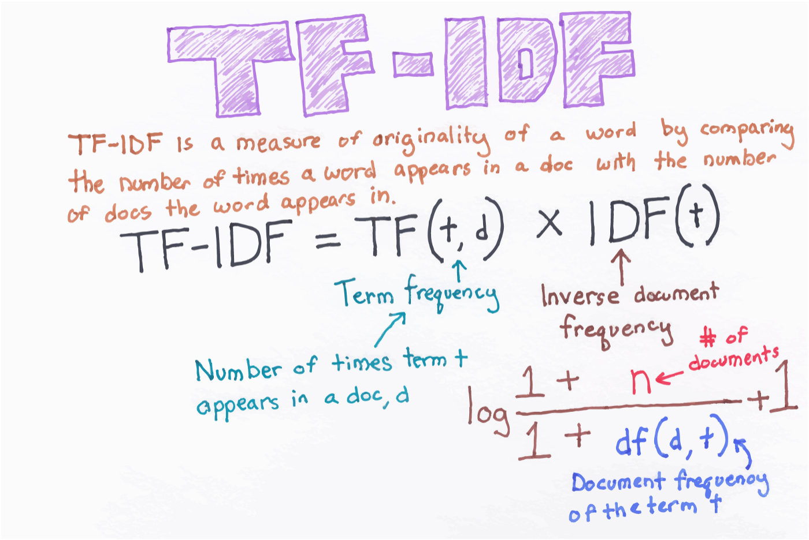
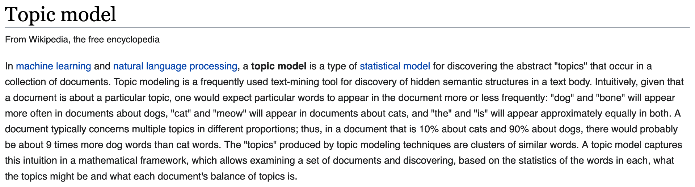
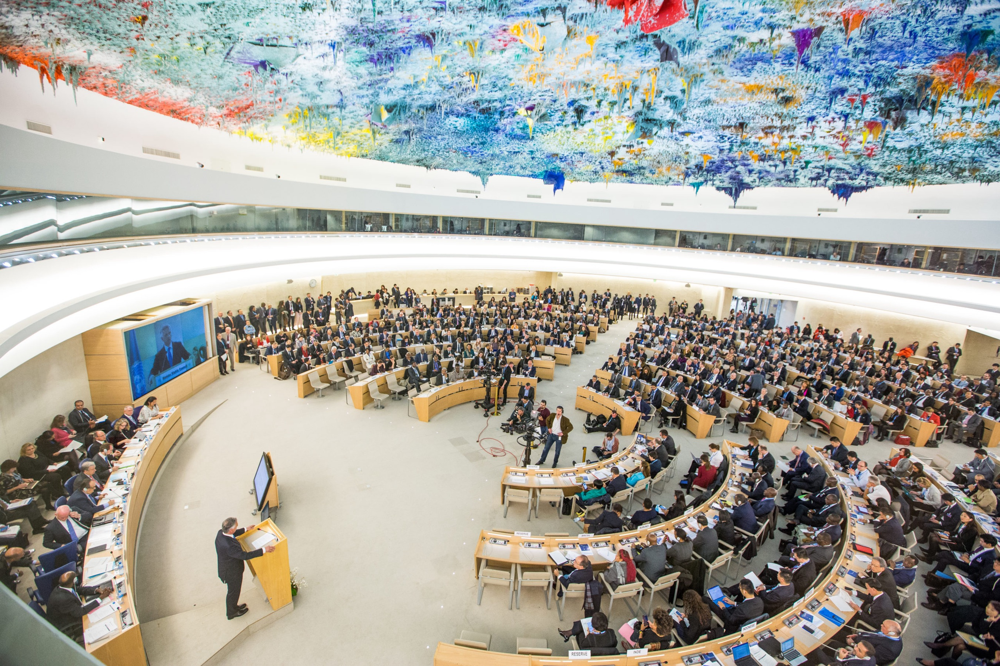

2022 Feb 02 - Document encoding (TF-IDF), sentiment analysis, building text classifiers¶
import os
import pandas as pd
from sklearn.feature_extraction.text import CountVectorizer, TfidfVectorizer, TfidfTransformer
from sklearn.decomposition import TruncatedSVD
import nltk
from nltk.corpus import movie_reviews
import numpy as np
from sklearn.utils import shuffle
from sklearn.pipeline import Pipeline
from sklearn.linear_model import LogisticRegression
from sklearn.model_selection import cross_val_score, train_test_split
from sklearn.metrics import roc_curve, roc_auc_score, classification_report, accuracy_score, confusion_matrix
import warnings
warnings.filterwarnings("ignore", category = DeprecationWarning)
Document encoding for machine learning¶
In the last chapter you saw that we do not change text to numbers, but instead changed the representation of the text to the numbers in sparse matrix format.
In this format, each row represents a document and each column represents a token from the shared text vocabulary called a feature.
Key terms¶
Document term matrix: contains the frequencies (or TF-IDF scores) of vocabulary terms in a collection of documents in sparse format.
Each row is a document in the corpus.
Each column represents a term (uni-gram, bi-gram, etc.) called a feature.
Bag of words: The simplest text analysis model that standardizes text in a document by removing punctuation, converting the words to lowercase, and counting the token frequencies.
Numeric values indicate that a particular feature is found in a document that number of times.
A 0 indicates that the feature is not found in that document.

modified from “The Effects of Feature Scaling: From Bag-of-Words to Tf-Idf”
TF-IDF: Term frequency–inverse document frequency; a weighted numerical statistic that indicates the uniqueness of a words is in a given document or corpus.
For TF-IDF sparse matrices:
A value closer to 1 indicate that a feature is more relevant to a particular document.
A value closer to 0 indicates that that feature is less/not relevant to that document.


Topic modeling:


Corpus definition: United Nations Human Rights Council Documentation¶
We will select eleven .txt files from the UN HRC as our corpus, stored within the subfolder “human_rights” folder inside the main “data” directory.
These documents contain information about human rights recommendations made by member nations towards countries deemed to be in violation of the HRC.
Learn more about the UN HRC by clicking here.
Define the corpus directory¶
Set the directory’s file path and print the files it contains.
import os
corpus = os.listdir('data/human_rights/')
# View the contents of this directory
corpus
['sanmarino2014.txt',
'tuvalu2013.txt',
'kazakhstan2014.txt',
'cotedivoire2014.txt',
'fiji2014.txt',
'bangladesh2013.txt',
'turkmenistan2013.txt',
'jordan2013.txt',
'monaco2013.txt',
'afghanistan2014.txt',
'djibouti2013.txt']
Store these documents in a data frame¶
import pandas as pd
# Store in an empty dictionary for conversion to data frame
empty_dictionary = {}
# Loop through the folder of documents to open and read each one
for document in corpus:
with open('data/human_rights/' + document, 'r', encoding = 'utf-8') as to_open:
empty_dictionary[document] = to_open.read()
# Populate the data frame with two columns: file name and document text
human_rights = (pd.DataFrame.from_dict(empty_dictionary,
orient = 'index')
.reset_index().rename(index = str,
columns = {'index': 'file_name', 0: 'document_text'}))
View the data frame¶
human_rights
| file_name | document_text | |
|---|---|---|
| 0 | sanmarino2014.txt | \n United Nations \n A/HRC/28/9 \n \n \n\n Ge... |
| 1 | tuvalu2013.txt | \n United Nations \n A/HRC/24/8 \n \n \n\n G... |
| 2 | kazakhstan2014.txt | \n United Nations \n A/HRC/28/10 \n \n \n\n G... |
| 3 | cotedivoire2014.txt | \nDistr.: General 7 July 2014 English Original... |
| 4 | fiji2014.txt | \n United Nations \n A/HRC/28/8 \n \n \n\n Ge... |
| 5 | bangladesh2013.txt | \n United Nations \n A/HRC/24/12 \n \n \n\n ... |
| 6 | turkmenistan2013.txt | \n United Nations \n A/HRC/24/3 \n \n \n\n G... |
| 7 | jordan2013.txt | \nDistr.: General 6 January 2014 \nOriginal: E... |
| 8 | monaco2013.txt | \nDistr.: General 3 January 2014 English Origi... |
| 9 | afghanistan2014.txt | \nDistr.: General 4 April 2014 \nOriginal: Eng... |
| 10 | djibouti2013.txt | \n\nDistr.: General 8 July 2013 English Origin... |
View the text of the first document¶
print(human_rights['document_text'][0])
United Nations
A/HRC/28/9
General Assembly
Distr.: General
24 December 2014
Original: English
Human Rights Council
Twenty-eighth session
Agenda item 6
Universal Periodic Review
Report of the Working Group on the Universal Periodic Review*
* The annex to the present report is circulated as received.
San Marino
Contents
Paragraphs Page
Introduction ............................................................................................................. 1Ð4 3
I. Summary of the proceedings of the review process ................................................ 5Ð77 3
A. Presentation by the State under review ........................................................... 5Ð23 3
B. Interactive dialogue and responses by the State under review ........................ 24Ð77 6
II. Conclusions and/or recommendations ..................................................................... 78Ð81 13
Annex
Composition of the delegation ......................................................................................................... 19
Introduction
1. The Working Group on the Universal Periodic Review, established in accordance with Human Rights Council resolution 5/1 of 18 June 2007, held its twentieth session from 27 October to 7 November 2014. The review of San Marino was held at the 6th meeting, on 29 October 2014. The delegation of San Marino was headed by Pasquale Valentini, Minister for Foreign Affairs. At its 10th meeting, held on 31 October 2014, the Working Group adopted the report on San Marino.
2. On 15 January 2014, the Human Rights Council selected the following group of rapporteurs (troika) to facilitate the review of San Marino: Burkina Faso, Chile, China.
3. In accordance with paragraph 15 of the annex to resolution 5/1 and paragraph 5 of the annex to resolution 16/21, the following documents were issued for the review of San Marino:
(a) A national report submitted/written presentation prepared in accordance with paragraph 15 (a) (A/HRC/WG.6/20/SMR/1);
(b) A compilation prepared by the Office of the United Nations High Commissioner for Human Rights (OHCHR) in accordance with paragraph 15 (b) (A/HRC/WG.6/20/SMR/2);
(c) A summary prepared by OHCHR in accordance with paragraph 15 (c) (A/HRC/WG.6/20/SMR/3).
4. A list of questions prepared in advance by Liechtenstein, Mexico, the Netherlands, Slovenia, Spain and the United Kingdom of Great Britain and Northern Ireland was transmitted to San Marino through the troika. These questions are available on the extranet of the universal periodic review (UPR).
I. Summary of the proceedings of the review process
A. Presentation by the State under review
5. The delegation of San Marino presented its report for the second cycle of the UPR on the human rights situation.
6. The delegation noted that, in July 2014, it had presented the national report prepared by the Ministry of Foreign Affairs in collaboration with the Ministries of Internal Affairs, Health, Labour and Education and other government offices. It stated that the national report included the steps taken to implement the recommendations accepted during the first review, noting that several provisions adopted in recent years had been based on those recommendations.
7. The delegation explained the approach that San Marino had always held towards the protection of human rights in the context of its Declaration on the CitizensÕ Rights and Fundamental Principles of San Marino Constitutional Order. The delegation stated that San Marino was one of the few States that, in the field of human rights, did not need internal implementation rules, as international law was an integral part of national law, and even superseded this in the event of any conflict.
8. The delegation highlighted the human rights conventions that had been ratified or adopted. On 1 July 2010, San Marino ratified the United Nations Convention against Transnational Organized Crime, the Protocol to Prevent, Suppress and Punish Trafficking
in Persons, Especially Women and Children, and the Protocol against the Smuggling of Migrants by Land, Sea and Air, supplementing it. On 21 July 2011, it ratified the Optional Protocol to the Convention on the Rights of the Child on the involvement of children in armed conflict (OP-CRC-AC) and the Optional Protocol to the Convention on the Rights of the Child on the sale of children, child prostitution and child pornography (OP-CRC-SC). On 23 October 2013, it acceded to the Convention on the Prevention and Punishment of the Crime of Genocide, and, on 5 September 2014, approved Law No. 138 on ÒRegulations on the Prevention and Punishment of the Crime of GenocideÓ. In recent years, San Marino has ratified the following Council of Europe instruments: the Convention on the Protection of Children against Sexual Exploitation and Sexual Abuse; the Convention on Action against Trafficking in Human Beings; Protocol No. 15 amending the Convention for the Protection of Human Rights and Fundamental Freedoms; and the European Charter of Local Self-Government. Furthermore, San Marino signed the Council of Europe Protocol No. 16 to the Convention for the Protection of Human Rights and Fundamental Freedoms, and the Council of Europe Convention on Preventing and Combating Violence against Women and Domestic Violence. The delegation stated that the ratification procedure was ongoing for both instruments.
9. Regarding the question submitted by Liechtenstein, the delegation announced that, having ratified on 21 July 2011 the amendment to article 8 of the Rome Statute of the International Criminal Court, the ratification process of the amendments to the Statute, on the crime of aggression, was expected to be completed during the current session of Parliament.
10. The delegation also addressed the question submitted by the Netherlands on the intentions of San Marino to ratify the Council of Europe Convention on Cybercrime and its Additional Protocol. It stated that a study on compliance with the Convention had been completed, though, owing to the necessary adjustment of domestic legislation, the introduction of new technologies and specific training of the personnel involved, San Marino was unable to predict a time frame for accession.
11. The delegation pointed out that progress had been made in the prevention of violence against women and gender violence, through the approval of Law No. 97 of 20 June 2008 on ÒPrevention and elimination of violence against women and gender violenceÓ, which introduced into the San Marino legal system the offences of gang violence, stalking and trafficking in human beings, and modified the offence of enslavement. The delegation also commented that the law established the Authority for Equal Opportunities as a mechanism for monitoring its implementation. The establishment of a dedicated authority allowed legislation on the protection of equal opportunity to be completed. The delegation went on to say that the Authority operates alongside the Commission for Equal Opportunities, which deals with issues related to awareness-raising and the promotion of legislative and non-legislative measures to guarantee the legal equality of citizens.
12. On 31 May 2012, a decree was adopted to implement the above-mentioned Law. The decree also established an assistance centre for victims of violence.
13. The delegation reported that coordination between the Health Authority and the Authority for Equal Opportunities had been established in order to collect data on violence against women and gender violence in San Marino.
14. In addition, the delegation stated that a special study group had been established in order to identify the amendments to be made and the requirements to be met in view of the ratification of the Council of Europe Convention on preventing and combating violence against women.
15. The delegation said that the Parliament of San Marino had adopted a law that introduced amendments to the Criminal Code and the law aimed at reforming family law, by introducing the prohibition of corporal punishment in the exercise of correction or discipline powers.
16. The delegation stated that Law No. 142 of 9 September 2014, entitled ÒLegislation relating to specific developmental disorders in schools and training facilitiesÓ, had been approved. That law underlined the importance of the role of education for the development of social integration, as strongly reiterated at the Council of Europe Standing Conference of Ministers of Education, held in Helsinki on 26 and 27 April 2014, and aimed at protecting students with specific developmental disorders and special educational needs.
17. In the national report, the delegation cited the work carried out by the Ministries of Education and Health for the development of a framework law on disability. The proposed framework law fully incorporates the principles, definitions and content of the Convention on the Rights of Persons with Disabilities (CRPD) and includes some instruments that are fundamental to its implementation. The delegation stated that the draft law provides for the establishment of a special commission tasked with monitoring the implementation of the principles contained in the Convention.
18. The delegation stated that, in response to the recommendations of the Council of Europe Group of States against corruption (GRECO), Law No. 141 of 5 September 2014 introduced the ÒCode of Conduct of Public OfficialsÓ.
19. In response to the question submitted by the Netherlands, the delegation stated that the recommendation made by the European Commission against Racism and Intolerance of the Council of Europe on the San Marino Commission for Equal Opportunities had been assessed by the Commission and that it had transmitted its opinion. In the light of this, the Government intended to work with the Commission to develop the necessary measures for the implementation of the recommendation.
20. In reply to the question submitted by Slovenia concerning the measures adopted to improve prison detention conditions in San Marino, the delegation stated that procedures had improved in recent years. According to the delegation, San Marino had acceded in December 1989 to the European Convention for the Prevention of Torture and Inhuman or Degrading Treatment or Punishment. The delegation reported that, since then, a delegation from the Council of Europe European Committee for the Prevention of Torture had visited San Marino four times: in March 1992, June 1999, February 2005 and January 2013.
21. With respect to the second question submitted by Slovenia, on raising the minimum age for military recruitment to 18, the delegation stated that the age of 16 for recruitment in the case of general mobilization had been established in previous regulations, which San Marino had long planned to change. The delegation explained that the delay in the amendment of that provision was due to the fact that the measure was part of a more complex ongoing reform concerning the reorganization of the military corps and its regulations.
22. In response to the question from Mexico on the freedom of expression in electronic format and the sanctions for improper and legally actionable conduct in the field of publishing and freedom of the media, the delegation stated that a new law sought to balance freedom of expression and protection of the dignity, integrity and privacy of the individual. The delegation explained that, under that new law, certain modes of expression of information had been regulated by introducing a code of ethics for operators and an authority that monitored any abuses or distortions. Moreover, the new law established and governed more flexible instruments for the protection of citizens and more accessible appeal procedures for individuals.
23. The delegation reported that the law also specifically regulated the field of newspapers and online publications, by making them equal in all aspects and effects to paper publications, with the obvious differences related to the diversity of the means of expression.
B. Interactive dialogue and responses by the State under review
24. During the interactive dialogue, 35 delegations made statements. The recommendations made during the dialogue can be found in section II of the present report.
25. Kuwait commended the efforts to promote and protect human rights and welcomed the ratification of a number of international conventions and protocols since 2010, including OP-CRC-SC; the United Nations Convention against Transnational Organized Crime and two Protocols supplementing it; and the Convention on the Prevention and Punishment of the Crime of Genocide. It noted commendable efforts that San Marino had made for the promotion of the rights of persons with disabilities and the accession to related conventions. Kuwait made a recommendation.
26. Malaysia noted the transparent and consultative approach taken by San Marino with respect to the UPR and the progress made in the field of human rights, through its commitment to implementing the recommendations accepted during the first cycle of the UPR and the introduction of various legislative and institutional measures. In particular, Malaysia commended San Marino for ongoing and continuous steps to protect womenÕs rights and promote the role of women in the country, and measures to further integrate persons with disabilities into society, in line with its obligations under CRPD, amongst others. It noted the adoption of important laws and provisions relating to violence against women and the enforcement of measures for the protection of women, expressed appreciation for the strong belief of San Marino in the value of the family for human development and its efforts to protect the family institution, and encouraged them to continue in that regard. Malaysia made recommendations.
27. Mexico welcomed the adoption of international instruments since the first cycle of the UPR. In particular, it noted the ratification of OP-CRC-SC, the United Nations Convention against Transnational Organized Crime and two Protocols supplementing it. It recognized the advances made in combating domestic violence, notably through the implementation of prevention programmes and the provision of medical and psychological support for victims. It thanked San Marino for the response to its query regarding freedom of expression. Mexico made recommendations.
28. Monaco welcomed the advances made regarding the rights of persons with disabilities, notably the steps taken to implement CRPD, as well as the extension of the advantages to adoptive and foster parents granted under Law No. 43/2014. Monaco requested further information on the functioning of the residential centre for persons with disabilities. It welcomed the ratification of OP-CRC-AC and OP-CRC-SC. Monaco made a recommendation.
29. Montenegro commended San Marino for its commitment to the promotion and protection of human rights, expressing appreciation of its efforts to abolish the death penalty and protect the rights of women and children. While welcoming the dedication of San Marino to the UPR process, Montenegro observed that reports to several committees on the implementation of core human rights instruments were still overdue, and encouraged the Government of San Marino to make additional efforts to improve cooperation with the treaty bodies system. It noted the requests made by the Human Rights Committee concerning the introduction of a juvenile criminal justice system and asked San Marino to elaborate on the activities taken in that regard. Montenegro made recommendations.
30. The Netherlands commended San Marino on its human rights record and efforts to ratify related instruments. In particular, it welcomed the ratification of the OP-CRC-SC and OP-CRC-AC, as well as the accession to the Convention on the Prevention and Punishment of the Crime of Genocide. However, it noted that the independent information and concluding observations of the treaty bodies were out of date, as some country reports were still outstanding. The Netherlands made recommendations.
31. The Philippines recognized the strong commitment of the Government of San Marino to the overall development of the country and the fulfilment of the human rights of its people and lauded the accession of San Marino to a number of international human rights conventions in the period under review, particularly its ratification of the United Nations Convention against Transnational Organized Crime and two Protocols supplementing it. It asked how San Marino, as an advocate of womenÕs rights, could contribute to the strengthening of regional and international cooperation or partnerships in combating trafficking in women and girls. It noted the remarkable progress achieved by San Marino in the realization of the right to an adequate standard of living and the provision of welfare programmes and other social safety nets for citizens who became vulnerable as a result of the recent global financial instability. The Philippines made recommendations.
32. Portugal praised the commitment of San Marino to the implementation of the recommendations accepted during the first cycle and welcomed the ratification of OP-CRC-SC and OP-CRC-AC. It noted that, although San Marino had accepted a recommendation during the first cycle of the UPR to improve timely reporting, 10 reports to the treaty bodies were still overdue. It welcomed the creation of a working group to prepare a draft law to adapt San MarinoÕs legal terminology regarding the concepts of legitimate and natural children, and encouraged efforts in that regard. Portugal made recommendations.
33. Serbia congratulated San Marino for its dedication to human rights, democracy and the rule of law and noted San MarinoÕs efforts to align domestic legislation with international standards, as well as its pledge to comply with international treaties. It applauded San MarinoÕs advocacy work to abolish the death penalty worldwide and commended efforts to implement recommendations made by the European Committee for the Prevention of Torture. It noted that constitutional and legislative norms and ratified international treaties on human rights guaranteed equality and freedom from discrimination, and encouraged San Marino to continue its positive promotion of the principle of equality and non-discrimination, taking into account all relevant recommendations of the European Commission against racism and intolerance. Serbia made a recommendation.
34. Sierra Leone commended San MarinoÕs efforts to promote and protect human rights in spite of the international economic crisis, which has affected the strategies and measures taken to address the right to a fair trial, as well as the death penalty, violence against women and domestic violence. It was interested to note that San Marino had been the third country to abolish the death penalty. It appreciated efforts to align domestic legislation with international human rights instruments and commended measures to ensure freedom of religion or belief. It acknowledged San MarinoÕs efforts to sign, ratify or accede to more human rights instruments since the first cycle of the UPR, but noted that further efforts were required to address racism, xenophobia and corruption. It lauded San MarinoÕs financial contribution to OHCHR in 2011 and 2013. Sierra Leone made recommendations.
35. Singapore commended the efforts taken by San Marino to combat domestic violence, noting the role played by the Authority for Equal Opportunities in enforcing the Law on the Prevention and Elimination of Violence against Women and Gender Violence, implementing the related decree (97) to assist victims of violence and promoting public awareness on services available, including shelter for victims of domestic violence. A technical-institutional panel of experts was set up in 2012 to improve coordination among
agencies in addressing domestic violence. Singapore noted efforts to build an inclusive society for persons with disabilities, including the drafting of a framework law on disability to strengthen implementation of CRPD, and the preparation of decrees on specific policy themes, such the elimination of architectural barriers, as well as job placements, health and social inclusion. Singapore made recommendations.
36. Slovenia noted the implementation of the majority of recommendations accepted under the first cycle of the UPR, including ratification of OP-CRC-AC and OP-CRC-SC. It noted progress made in the field of anti-discrimination and thanked San Marino for responding to its question on steps taken to improve prison detention conditions. Following the request from the Human Rights Committee, Slovenia requested information on measures that could be taken to modify legislation (article 3 of Act No. 15 of 26 January 1990) regarding the exceptional circumstances in which all citizens aged 16 to 60 could be conscripted. Slovenia made a recommendation.
37. Spain welcomed the delegation of San Marino and thanked it for its presentation and the replies to its advanced questions. It congratulated the country on the adoption of the Law on Provisions on Maltreatment within the Family and on Children by the Great and General Council. Spain noted the concerns expressed by the Human Rights Committee regarding the failure of San Marino to approve a new Code of Criminal Procedure. Spain made recommendations.
38. Thailand commended the efforts made by San Marino since its first review, particularly human rights awareness-raising initiatives and the improvement of its normative framework in various areas, aimed at better integration of foreigners and vulnerable groups. It expressed appreciation of progress in the protection of childrenÕs rights, particularly regarding ratification of OP-CRC-AC and OP-CRC-SC. It expressed interest in the recent examination of a draft law on provisions against child maltreatment in the family and looked forwards to its adoption. While noting steps already taken to better protect the rights of persons with disabilities, Thailand considered that further efforts could be made to promote independent living and better integration into society. Thailand made recommendations.
39. Ukraine noted the ratification since the last review of important international human rights mechanisms and the alignment of domestic legislation with relevant international standards. It appreciated the progress made to protect and promote the rights of its citizens, particularly regarding womenÕs rights and gender equality. It recognized the increased representation of women in the San Marino Parliament and encouraged it to take further steps in empowering women to end the underrepresentation of women in the Government, particularly in ministerial positions. Ukraine welcomed efforts regarding freedom of expression, particularly the initiation of procedures on a new draft law on publishing and the profession of media operators, and expressed hope that it would be swiftly adopted and compliant with corresponding international standards.
40. The United Kingdom of Great Britain and Northern Ireland welcomed San MarinoÕs firm commitment to the promotion and protection of human rights. It commended San Marino for its ongoing efforts to reflect international human rights standards in domestic legislation. The United Kingdom made recommendations.
41. The United States of America commended San MarinoÕs exemplary human rights record, longstanding commitment to democracy and the promotion and protection of human rights. While recognizing that labour standards were generally well enforced, it expressed concern that some employers did not consistently abide by safety regulations, including limitations on working hours and the use of personal safety devices, particularly in the informal labour market. It noted that the Ministry for Territory and Environment had not
fully implemented a law that mandated easier access to public buildings for persons with disabilities, and that many buildings remained inaccessible. It made recommendations.
42. Uruguay noted San MarinoÕs ratification of OP-CRC-AC and OP-CRC-SC, and its accession to regional human rights instruments. It noted the draft law to prohibit the corporal punishment of children in all settings, including at home and in day care, and hoped that it would be discussed fruitfully by the Parliament in order to meet San MarinoÕs commitments pursuant to the first cycle of the UPR. It noted San MarinoÕs efforts to comply with its international obligations, in particular regular reporting to treaty bodies. It encouraged San Marino to continue those efforts and its cooperation with OHCHR. It welcomed that San Marino was considering acceding to the Optional Protocol to the International Covenant on Economic, Social and Cultural Rights (OP-ICESCR). Uruguay made recommendations.
43. The Bolivarian Republic of Venezuela emphasized San MarinoÕs political commitment to implementing recommendations accepted during the first cycle of the UPR, despite the serious international economic crisis. It noted San MarinoÕs adherence to international instruments, including the United Nations Convention against Transnational Organized Crime and two Protocols supplementing it, the Convention on the Prevention and Punishment of the Crime of Genocide, OP-CRC-SC and OP-CRC-AC. It commended progress made in the legal sphere to promote equality of all people before the law and protect the rights and freedoms of the population and acknowledged the policies to protect womenÕs rights and promote their participation in society through the adoption of important legal provisions and measures relating to the protection of women from violence. It made a recommendation.
44. Algeria congratulated San Marino on the ratification of OP-CRC-AC and OP-CRC-SC; as well as the adoption of legal provisions relating to violence against women and the promulgation of texts to improve the effectiveness of the legal system, particularly in the area of criminal law. It welcomed the measures taken to consolidate the protection of the family and its solidarity. Algeria made recommendations.
45. Argentina welcomed the delegation of San Marino. It congratulated San Marino for acceding to the Convention on the Prevention and Punishment of the Crime of Genocide. Argentina made recommendations.
46. Australia, commending San MarinoÕs exemplary human rights record, noted that its human rights framework valued the integrity of the person, afforded a high degree of political participation and enforced civil liberties. Despite the fact that the Declaration on the CitizensÕ Rights and Fundamental Principles of San Marino Constitutional Order prohibited discrimination on all grounds, it was concerned that same-sex couples still encountered discrimination in some basic rights, including residency and inheritance. It commended efforts to protect the rights of persons with disabilities in many areas, particularly employment, education, health care and other state services. Australia made recommendations.
47. Brazil welcomed the ratification of OP-CRC-AC, OP-CRC-SC and the Convention on the Prevention and Punishment of the Crime of Genocide, and the enactment of legislation on maltreatment within the family and on children. It maintained that it was important to increase awareness of the importance of combating racism, racial discrimination and xenophobia, through the effective implementation of Law No. 66 on provisions against racial, ethnic and religious discrimination. Noting that Decree No. 60/2012 established various forms of assistance to women who were victims of violence, Brazil asked what specific measures had been taken to prevent gender-based and domestic violence. Brazil made recommendations.
48. Burkina Faso noted San MarinoÕs commitment to cooperate with human rights mechanisms, including its standing invitation to the special procedures of the Human Rights Council. It welcomed efforts to abolish the death penalty, combat transnational organized crime, legalize the residence status of foreign nationals and support workers who were victims of the economic crisis. It commended the ratification of various human rights instruments, notably OP-CRC-AC and OP-CRC-SC, and regional instruments, by acceding to instruments containing complaint mechanisms and enabling individuals to seek reparation. It welcomed the adoption of legislation to protect female victims of violence, including domestic violence, and actions in favour of children and persons with disabilities. It encouraged the establishment of the National Observatory on the Family, increased efforts to promote human rights in its educational system and improved reporting to treaty bodies.
49. Canada asked San Marino to provide up-to-date information regarding steps to establish an independent ombudsman for the protection and promotion of human rights, in accordance with the principles relating to the status of national institutions (Paris Principles). It noted that San Marino had ratified OP-CRC-AC and OP-CRC-SC, and had welcomed the contribution that those instruments made to the protection of the rights of children. Canada made recommendations.
50. Costa Rica thanked San Marino for the presentation of its national report and congratulated the progress made in the promotion and protection of human rights. It noted that San Marino had ratified several international instruments and had been the first State party to the Rome Statute of the International Criminal Court to ratify the amendment to article 8 of that Statute. It welcomed the adoption of measures to prohibit the corporal punishment of children and those that had raised the minimum age of criminal responsibility. Costa Rica made recommendations.
51. C™te dÕIvoire said that the national report indicated the constant commitment of the Government of San Marino to the promotion and protection of human rights, through the adoption of various measures and policies for the promotion of equality for all, such as those aimed at combating discrimination; protecting women, children, elderly persons and persons with disabilities; combating domestic violence; and strengthening the judicial, political and social systems. Those measures demonstrated the importance that San Marino placed on international obligations and on the protection of fundamental freedoms. It encouraged San Marino to continue to cooperate with international human rights mechanisms. C™te dÕIvoire made recommendations.
52. Estonia noted San MarinoÕs accession to most core international human rights instruments and its standing invitation to the special procedures of the Human Rights Council. However, it raised concern at the lack of reporting to the treaty bodies and hoped that San Marino would make positive steps in that regard. It commended the ratification of the Convention on the Prevention and Punishment of the Crime of Genocide; the United Nations Convention on Transnational Organized Crime, the Protocol to Prevent, Suppress and Punish Trafficking in Persons, Especially Women and Children supplementing it, OP-CRC-SC and OP-CRC-AC. In that regard, it called upon San Marino to review the law on extraordinary military conscription and withdraw the relevant clauses of that law to bring it into compliance with OP-CRC-AC. The protection of womenÕs rights and their participation in society was a priority and should continue. There was a need for a freedom of information law in accordance with international standards. Estonia made recommendations.
53. France welcomed the delegation from San Marino. It welcomed the commitment shown by San Marino in favour of human rights, and its accession to various international human rights instruments since its review under the first cycle of the UPR. France made recommendations.
54. Germany thanked San Marino for its national report and welcomed the progress made by the country since the first cycle of the UPR, for example, regarding its human rights legislation. It commended San MarinoÕs cooperation with civil society, OHCHR, the special procedures of the Human Rights Council and United Nations treaty bodies. Germany made recommendations.
55. Ghana welcomed the delegation of San Marino and applauded the countryÕs dedication to the UPR process. Ghana made recommendations.
56. The Holy See welcomed steps taken since the first cycle of the UPR to promote and protect human rights and strengthen legislation and on the administration of justice in line with international instruments. It commended the continued protection of the institution of the family as a union based on a stable relationship between a man and a woman, and the related legislation that extended the right of a parent to be absent from the workplace when his or her child was ill or to assist family members who required special assistance, including owing to disability or serious age-related disease. It made recommendations.
57. Indonesia applauded the priority given to the protection of womenÕs rights in national policy and the adoption and effective implementation of Law No. 97/2008 on the prevention and elimination of violence against women and gender violence. The establishment of a national human rights institution in line with the Paris Principles would further support San MarinoÕs efforts to combat violence against women, as well as its efforts in other areas. Indonesia noted that San Marino had ratified several international human rights instruments. The International Convention on the Protection of the Rights of All Migrant Workers and Members of Their Families (ICRMW) would be particularly relevant, as one third of San MarinoÕs population lived abroad. Indonesia made recommendations.
58. Ireland commended San Marino for extending a standing invitation to the special procedures of the Human Rights Council. However, it noted that a significant number of reports to the treaty bodies were overdue. It welcomed San MarinoÕs ratification of OP-CRC-AC and OP-CRC-SC. Ireland made recommendations.
59. Italy commended San Marino for its commitment to cooperating with international human rights mechanisms, and for extending a standing invitation to the special procedures of the Human Rights Council. It noted the difficulties faced by San Marino in fulfilling its reporting obligations, and the measures it had taken to end the backlog. It encouraged San Marino to consider best practices and expedite the drafting of reports under the International Covenant on Civil and Political Rights. It asked for information about the function, lessons learned and best practices of the panel created to coordinate measures to prevent and combat violence against women. It asked whether San Marino would consider the establishment of a formal procedure for processing asylum requests. Italy made a recommendation.
60. San Marino thanked all the delegations for their interesting and valuable recommendations.
61. As regards the treatment of asylum applications, the Minister for Foreign Affairs informed the delegations that it was not foreseen to introduce a relevant procedure, given the very low number of applications received in recent years, often submitted by persons from countries that upheld high human rights standards. Establishing a procedure to determine refugee status would prove problematic owing to the lack of border control between Italy and San Marino.
62. In the case of foreigners who were unable to return to their home countries, he said that the Government of San Marino may issue an extraordinary stay permit for humanitarian and social protection reasons issued on a case-by-case basis. Beneficiaries
would then be entitled to temporary medical and financial assistance provided by the Social Welfare Institute.
63. With respect to questions related to discrimination, including on the basis of sexual orientation and gender identity, and on the need to protect single-parent and non-conventional families, he said that all people were equal before the law and all forms of discrimination were rejected under the Declaration of CitizensÕ Rights. All sectors of the public administration were also abiding by that principle. Such prohibition was reinforced by Law No. 66/2008, which punished anyone who incites or commits any act of discrimination on the basis of sexual orientation. The Law considered it an aggravating circumstance.
64. Despite the lack of a national plan against discrimination, he said that San Marino had participated in international campaigns and had carried out national initiatives to raise awareness in that field.
65. The Minister said that great importance had been attached to the role played by the Authority and the Commission for Equal Opportunities, which have jointly promoted actions to encourage the participation of all citizens in the political, social and economic life according to the principle of legal equality.
66. In that regard, he said that school played a major role. Respect for diversity was discussed and promoted in all school grades, thus favouring integration, learning about different cultures, understanding and tolerance. The fight against discrimination was a practical experience in school, which contributed effectively to inclusion. All children residing in San Marino, including on a temporary basis, were provided with a free education. All children with disabilities, including those with severe disabilities, had access to education, including through the support of professionals and personalized didactical tools.
67. Regarding the question of single-parent and non-conventional families, he said that, in San Marino, there had been a growing number of unmarried cohabiting couples. Also, that category of persons was recognized and protected by San Marino family law. Indeed, children born from those relationships enjoyed the same rights as those of children born in wedlock. In that regard, attention was also brought to single-parent families who, on account of their inherent characteristics, required stronger protection. Due consideration had also been given to single-parent families by allowing single people to adopt children.
68. The Minister said that a national debate, encouraged by civil society, was ongoing about same-sex unions. Parliament had recently addressed the issue and had decided not to consider same-sex unions on an equal footing to traditional households. Cohabitation between persons of the same sex was recognized if they are entitled to live in the territory, but their rights and duties were regulated by private law.
69. As for human rights education, he said that San Marino was committed to the promotion of human rights in education by implementing relevant projects, including training for teachers and the involvement of families.
70. He said that education on human rights and the protection and respect for differences followed an interdisciplinary approach and was aimed at promoting the integration of values in all contexts to combat racism and intolerance.
71. As regards the question on the facility for persons with disabilities, ÒIl Colore del GranoÓ, it was explained that the centre hosted persons with various types of disabilities and contributed to their education, rehabilitation and social inclusion by providing assistance, care and treatment, including in support of their families.
72. With reference to international instruments, San Marino recognized the importance of treaties that contain individual complaint mechanisms and was committed to addressing reporting delays and to acceding to OP-ICESCR, the Optional Protocol to the Convention on the Rights of the Child on a communications procedure, and to the United Nations Educational, Scientific and Cultural Organization (UNESCO) Convention against Discrimination in Education.
73. The Minister said that, for the time being, San Marino did not intend to adhere to or ratify the International Convention for the Protection of All Persons from Enforced Disappearance (ICPPED), the Optional Protocol to the Convention against Torture and Other Cruel, Inhuman or Degrading Treatment or Punishment, ICRMW, nor the Convention relating to the Status of Refugees.
74. As regards the establishment of a national institution on human rights based on the Paris Principles, San Marino considered the existing complaint mechanisms to be adequate. Anyone may file a petition to the Head of State to complain about violations of human rights and other related issues.
75. On the question about juvenile crime, Law No. 140/2014 raised the age of juvenile jurisdiction to 14, with safeguards for children under 18 and alternative measures to detention under the Criminal Code.
76. The reform of the Criminal Procedure Code was a major priority. Government Decision No. 20/2013 entrusted a technical working group with the drafting of a new code.
77. Finally, the Minister committed to giving due consideration to all recommendations to enhance human rights in San Marino.
II. Conclusions and/or recommendations
78. The recommendations formulated during the interactive dialogue and listed below have been examined by San Marino and enjoy the support of San Marino:
78.1 Ratify the Optional Protocol to the International Covenant on Economic, Social and Cultural Rights (ICESCR) (Montenegro, Spain);
78.2 Accede to the Optional Protocol to the International Covenant on Economic, Social and Cultural Rights (Uruguay);
78.3 Ratify the Optional Protocol to ICESCR (Portugal);
78.4 Ratify the Optional Protocol to the International Covenant on Economic, Social and Cultural Rights and opt into the inquiry and inter-State mechanisms (Germany);
78.5 Accede to the Optional Protocol to the Convention on the Rights of the Child on a communications procedure (Monaco);
78.6 Ratify the Optional Protocol to the Convention on the Rights of the Child on a communications procedure (Montenegro);
78.7 Ratify the third Optional Protocol to the Convention on the Rights of the Child , which establishes a complaints mechanism (Portugal);
78.8 Sign and ratify the third Optional Protocol to the Convention on the Rights of the Child on a communications procedure, without reservations (Ireland);
78.9 Consider becoming a party to other related human rights instruments, such as the Optional Protocol to the Convention on the Rights of the Child on a communications procedure (Thailand);
78.10 Ratify, without making any reservation, the Agreement on the Privileges and Immunities of the International Criminal Court (Germany);
78.11 Fully align its national legislation with the Rome Statute of the International Criminal Court, including by incorporating provisions to cooperate promptly and fully with the International Criminal Court and investigate and prosecute genocide, crimes against humanity and war crimes effectively before its national courts, and accede to the Agreement on the Privileges and Immunities of the International Criminal Court (Netherlands);
78.12 Fully align its national legislation with the Rome Statute of the International Criminal Court, to ratify the Kampala amendments to the Rome Statute on the crime of aggression and to accede to the Agreement on the Privileges and Immunities of the International Criminal Court (Estonia);
78.13 Incorporate into the national legislation measures to implement the Rome Statute of the International Criminal Court, including measures to cooperate with the Court (Costa Rica);
78.14 Ratify the UNESCO Convention against Discrimination in Education (1960) (Slovenia);
78.15 Consider ratifying the UNESCO Convention against Discrimination in Education (Ghana);
78.16 Intensify ongoing efforts to adjust domestic legislation to international standards (Sierra Leone);
78.17 Pass the new criminal procedure code, which is being studied by the technical working group (Spain);
78.18 Strengthen cooperation with civil society on promoting non-discrimination and tolerance in society, and consider instituting regular consultations with civil society organizations on improving the human rights protection system (Serbia);
78.19 Engage with civil society in the follow-up to the present review (United Kingdom of Great Britain and Northern Ireland);
78.20 Submit, as soon as possible, country reports to the Committee on the Elimination of Racial Discrimination, the Committee on Economic, Social and Cultural Rights, the Committee on the Elimination of Discrimination Against Women, the Committee against Torture and the Committee on the Rights of the Child (Netherlands);
78.21 Submit its 10 overdue reports to the United Nations treaty bodies (Portugal);
78.22 Endeavour to submit its overdue reports, some of which have been overdue since 2003, to the treaty bodies on the application of the conventions it has ratified (Ghana);
78.23 Submit its outstanding reports to the treaty bodies as soon as possible (Ireland);
78.24 Submit its national reports to the relevant United Nations treaty bodies (Sierra Leone);
78.25 Accelerate efforts to devise and implement anti-discrimination public awareness programmes, including in the health services sector, and intensify campaigns to encourage tolerance and interreligious and intercultural dialogue (Philippines);
78.26 Eliminate the legal concept of Òchildren born outside wedlockÓ, as well as combat against all forms of discrimination, both legally and in practice (Portugal);
78.27 Continue to ensure that women are given equitable access to the labour market and that measures introduced to address the problem of unemployment would not result in curtailment of the rights of migrant workers in San Marino (Philippines);
78.28 Strengthen efforts to increase public awareness of the importance of tolerance and intercultural dialogue, and pursue measures to promote and facilitate the integration of migrants (Brazil);
78.29 Protect the rights of all individuals, regardless of sexual orientation, on an equal basis (Canada);
78.30 Ensure respect for minorities, especially sexual minorities (France);
78.31 Further strengthen existing mechanisms aimed at safeguarding the rights of women, especially with regard to protection against violence (Sierra Leone);
78.32 Continue its measures in the prevention and repression of violence against women through effective implementation of the existing domestic legislation and awareness-raising campaigns and programmes (Malaysia);
78.33 Continue its effort to combat domestic violence and promote gender equality (Singapore);
78.34 Promulgate laws which expressly prohibit all forms of corporal punishment of minors at home as well as in kindergartens, schools and other institutions caring for children (Mexico);
78.35 Assign the necessary resources to complete the implementation of the Law on the Prevention of ill-treatment in the heart of the family and of the child, particularly in the field of the sensitizing and educating people on countering violence against children (Spain);
78.36 Continue the work already under way aimed at improving the judicial system, including the efforts to establish a new Code of Criminal Procedure (Holy See);
78.37 Continue to defend the institution of the family, based on the union of a man and a woman, and to keep providing assistance to those most vulnerable to human rights violations, particularly women, children and the elderly (Holy See);
78.38 Continue strengthening the social programmes and plans which drive the fight against social exclusion and inequality, with emphasis on the areas of
employment, food and health and paying special attention to the most vulnerable sectors (Venezuela (Bolivarian Republic of));
78.39 Adopt appropriate legislation to guarantee the rights of disabled persons and provide them with the best care without discrimination (Kuwait);
78.40 Adopt the Framework Law on disability which will incorporate the Convention on the Rights of Persons with Disabilities (Costa Rica);
78.41 Continue efforts in providing necessary care for persons with disabilities in line with its obligations under CRPD (Malaysia);
78.42 Continue to enhance its domestic policies and laws to further develop an inclusive living environment for persons with disabilities (Singapore);
78.43 Continue to ensure inclusive education for children and persons with disabilities, as education would allow them to fully participate in society and open the opportunity of employment (Thailand);
78.44 Bring all public buildings up to code so that they are accessible by persons with disabilities, in line with its international obligations and commitments (United States of America);
78.45 Take steps to improve access to buildings for people with a disability (Australia);
78.46 Consider social policies that facilitate the integration of migrants and asylum seekers (Holy See).
79. The following recommendations will be examined by San Marino, which will respond in due course, but no later than the twenty-eighth session of the Human Rights Council in March 2015. The responses will be included in the outcome report adopted by Council at its twenty-eighth session:
79.1 Ratify the International Convention for the Protection of All Persons from Enforced Disappearance (Spain, Uruguay, Argentina, France);
79.2 Consider ratifying the International Convention for the Protection of All Persons from Enforced Disappearance (Ghana);
79.3 Ratify, without making any reservation, the International Convention for the Protection of All Persons from Enforced Disappearance, implement it into national law and recognize the competence of the Committee on Enforced Disappearances to receive and consider from or on behalf of victims or other States parties (Germany);
79.4 Consider ratifying the ICPPED (Sierra Leone);
79.5 Adhere to the Convention on the Non-Applicability of Statutory Limitations to War Crimes and Crimes against Humanity, without making any reservation and implement the treaty into national law (Germany);
79.6 Consider developing human rights indicators according to the OHCHR framework, as an instrument that would allow for a more precise and coherent evaluation of its national human rights policies (Portugal);
79.7 Strengthen measures to combat all forms of discrimination, focusing on sensitization and monitoring (C™te dÕIvoire);
79.8 Formulate civil and administrative laws which complement the provisions of the criminal law and are directed towards combating
discrimination on the basis of ethnicity, nationality or language, in the fields of employment and the public services in particular (Mexico);
79.9 Strengthen the institutional and legal framework to counter all forms of discrimination based on considerations of race, ethnic origin, religion or colour (Algeria);
79.10 Elaborate and adopt a plan which promotes a greater and wider understanding of discrimination and intolerance and its various manifestations and also adopt administrative measures which allow the combating of discrimination on the basis of ethnicity, nationality or language (Argentina);
79.11 Introduce appropriate administrative or legislative reforms to ensure equal protections for same-sex couples, including on matters of residency and inheritance (Australia);
79.12 Decriminalize defamation and place it under the Civil Code (Estonia);
79.13 Adopt measures enabling more womenÕs political representation (Algeria);
79.14 Ensure domestic institutions protect, promote and monitor the rights of women and girls and strengthen equality between men and women by ensuring the full participation of women in policy and decision-making processes (Canada);
79.15 Adopt measures to decriminalize defamation (Ghana);
79.16 Adopt measures to ensure a fair representation of women in ministerial positions of the country (Ghana);
79.17 Actively monitor compliance and enforce employment safety regulations, especially in the construction and mechanical industries (United States of America).
80. The recommendations listed below have been noted by San Marino:
80.1 Proceed with the ratification of relevant international instruments not yet ratified and monitor implementation of instruments already ratified (C™te dÕIvoire);
80.2 Ratify the Optional Protocol to the Convention against Torture and Other Cruel, Inhuman or Degrading Treatment or Punishment (Uruguay, France, Portugal);
80.3 Adhere to the principles of the International Convention on the Protection of the Rights of All Migrant Workers and Members of Their Families and positively consider ratifying it (Mexico);
80.4 Ratify the International Convention on the Protection of the Rights of All Migrant Workers and Members of Their Families (Uruguay);
80.5 Consider ratifying the International Convention on the Protection of the Rights of All Migrant Workers and Members of Their Families (Ghana, Indonesia, Sierra Leone);
80.6 Continue to evaluate the possibility of future accession to other international human rights conventions that it is not yet party to, such as the ICRMW and the Optional Protocol to the Convention against Torture and Other Cruel, Inhuman or Degrading Treatment or Punishment (Philippines);
80.7 Take all necessary steps to ratify the 1951 Convention relating to the Status of Refugees and its 1967 Protocol (Brazil);
80.8 Ratify the 1951 Convention relating to the Status of Refugees and its 1967 Protocol (Italy);
80.9 Establish a national human rights institution in accordance with the Paris Principles (Spain);
80.10 Consider the establishment of a national human rights institution in accordance with the Paris Principles (Indonesia);
80.11 Ensure equal rights of lesbian, gay, bisexual and transgender people by legally recognizing same-sex marriage and civil partnerships (United Kingdom of Great Britain and Northern Ireland).
81. All conclusions and/or recommendations contained in the present report reflect the position of the submitting State(s) and/or the State under review. They should not be construed as endorsed by the Working Group as a whole.
Annex
[English only]
Composition of the delegation
The delegation of San Marino was headed by His Excellency Pasquale Valentini, Minister of Foreign Affairs, and composed of the following members:
¥ Ms. Federica Bigi, Director of Political and Diplomatic Affairs of the Department of Foreign Affairs;
¥ Ms. Ilaria Salicioni, First Secretary of the Directorate of Political and Diplomatic Affairs of the Department of Foreign Affairs;
¥ Mr. Eros Gasperoni, First Secretary of the Directorate of European Affairs of the Department of Foreign Affairs;
¥ Mr. Stefano Palmucci, Expert of the Directorate of Legal Affairs of the Department of Foreign Affairs;
¥ Ms. Valentina Bertozzi, Interpreter of the Department of Foreign Affairs;
¥ Ms. Anita Dedic, Administrative Assistant of the Permanent Mission of the Republic of San Marino to the United Nations in Geneva and other International Organizations in Switzerland.
English text preprocessing¶
Create a new column named “clean_text” to store the text as it is preprocessed.
Remove non-alphanumeric characters/punctuation
Remove digits
Remove unicode characters
Remove extra spaces
Convert to lowercase
Lemmatize
Take a look at the first document after each step to see if you can notice what changed.
How else could you improve this process?
NOTE: Remember, this is just a bare bones, basic process. Furthermore, it will not likely work for many other languages.
Remove non-alphanumeric characters/punctuation¶
human_rights['clean_text'] = human_rights['document_text'].str.replace(r'[^\w\s]', ' ', regex = True)
print(human_rights['clean_text'][0])
United Nations
A HRC 28 9
General Assembly
Distr General
24 December 2014
Original English
Human Rights Council
Twenty eighth session
Agenda item 6
Universal Periodic Review
Report of the Working Group on the Universal Periodic Review
The annex to the present report is circulated as received
San Marino
Contents
Paragraphs Page
Introduction 1Ð4 3
I Summary of the proceedings of the review process 5Ð77 3
A Presentation by the State under review 5Ð23 3
B Interactive dialogue and responses by the State under review 24Ð77 6
II Conclusions and or recommendations 78Ð81 13
Annex
Composition of the delegation 19
Introduction
1 The Working Group on the Universal Periodic Review established in accordance with Human Rights Council resolution 5 1 of 18 June 2007 held its twentieth session from 27 October to 7 November 2014 The review of San Marino was held at the 6th meeting on 29 October 2014 The delegation of San Marino was headed by Pasquale Valentini Minister for Foreign Affairs At its 10th meeting held on 31 October 2014 the Working Group adopted the report on San Marino
2 On 15 January 2014 the Human Rights Council selected the following group of rapporteurs troika to facilitate the review of San Marino Burkina Faso Chile China
3 In accordance with paragraph 15 of the annex to resolution 5 1 and paragraph 5 of the annex to resolution 16 21 the following documents were issued for the review of San Marino
a A national report submitted written presentation prepared in accordance with paragraph 15 a A HRC WG 6 20 SMR 1
b A compilation prepared by the Office of the United Nations High Commissioner for Human Rights OHCHR in accordance with paragraph 15 b A HRC WG 6 20 SMR 2
c A summary prepared by OHCHR in accordance with paragraph 15 c A HRC WG 6 20 SMR 3
4 A list of questions prepared in advance by Liechtenstein Mexico the Netherlands Slovenia Spain and the United Kingdom of Great Britain and Northern Ireland was transmitted to San Marino through the troika These questions are available on the extranet of the universal periodic review UPR
I Summary of the proceedings of the review process
A Presentation by the State under review
5 The delegation of San Marino presented its report for the second cycle of the UPR on the human rights situation
6 The delegation noted that in July 2014 it had presented the national report prepared by the Ministry of Foreign Affairs in collaboration with the Ministries of Internal Affairs Health Labour and Education and other government offices It stated that the national report included the steps taken to implement the recommendations accepted during the first review noting that several provisions adopted in recent years had been based on those recommendations
7 The delegation explained the approach that San Marino had always held towards the protection of human rights in the context of its Declaration on the CitizensÕ Rights and Fundamental Principles of San Marino Constitutional Order The delegation stated that San Marino was one of the few States that in the field of human rights did not need internal implementation rules as international law was an integral part of national law and even superseded this in the event of any conflict
8 The delegation highlighted the human rights conventions that had been ratified or adopted On 1 July 2010 San Marino ratified the United Nations Convention against Transnational Organized Crime the Protocol to Prevent Suppress and Punish Trafficking
in Persons Especially Women and Children and the Protocol against the Smuggling of Migrants by Land Sea and Air supplementing it On 21 July 2011 it ratified the Optional Protocol to the Convention on the Rights of the Child on the involvement of children in armed conflict OP CRC AC and the Optional Protocol to the Convention on the Rights of the Child on the sale of children child prostitution and child pornography OP CRC SC On 23 October 2013 it acceded to the Convention on the Prevention and Punishment of the Crime of Genocide and on 5 September 2014 approved Law No 138 on ÒRegulations on the Prevention and Punishment of the Crime of GenocideÓ In recent years San Marino has ratified the following Council of Europe instruments the Convention on the Protection of Children against Sexual Exploitation and Sexual Abuse the Convention on Action against Trafficking in Human Beings Protocol No 15 amending the Convention for the Protection of Human Rights and Fundamental Freedoms and the European Charter of Local Self Government Furthermore San Marino signed the Council of Europe Protocol No 16 to the Convention for the Protection of Human Rights and Fundamental Freedoms and the Council of Europe Convention on Preventing and Combating Violence against Women and Domestic Violence The delegation stated that the ratification procedure was ongoing for both instruments
9 Regarding the question submitted by Liechtenstein the delegation announced that having ratified on 21 July 2011 the amendment to article 8 of the Rome Statute of the International Criminal Court the ratification process of the amendments to the Statute on the crime of aggression was expected to be completed during the current session of Parliament
10 The delegation also addressed the question submitted by the Netherlands on the intentions of San Marino to ratify the Council of Europe Convention on Cybercrime and its Additional Protocol It stated that a study on compliance with the Convention had been completed though owing to the necessary adjustment of domestic legislation the introduction of new technologies and specific training of the personnel involved San Marino was unable to predict a time frame for accession
11 The delegation pointed out that progress had been made in the prevention of violence against women and gender violence through the approval of Law No 97 of 20 June 2008 on ÒPrevention and elimination of violence against women and gender violenceÓ which introduced into the San Marino legal system the offences of gang violence stalking and trafficking in human beings and modified the offence of enslavement The delegation also commented that the law established the Authority for Equal Opportunities as a mechanism for monitoring its implementation The establishment of a dedicated authority allowed legislation on the protection of equal opportunity to be completed The delegation went on to say that the Authority operates alongside the Commission for Equal Opportunities which deals with issues related to awareness raising and the promotion of legislative and non legislative measures to guarantee the legal equality of citizens
12 On 31 May 2012 a decree was adopted to implement the above mentioned Law The decree also established an assistance centre for victims of violence
13 The delegation reported that coordination between the Health Authority and the Authority for Equal Opportunities had been established in order to collect data on violence against women and gender violence in San Marino
14 In addition the delegation stated that a special study group had been established in order to identify the amendments to be made and the requirements to be met in view of the ratification of the Council of Europe Convention on preventing and combating violence against women
15 The delegation said that the Parliament of San Marino had adopted a law that introduced amendments to the Criminal Code and the law aimed at reforming family law by introducing the prohibition of corporal punishment in the exercise of correction or discipline powers
16 The delegation stated that Law No 142 of 9 September 2014 entitled ÒLegislation relating to specific developmental disorders in schools and training facilitiesÓ had been approved That law underlined the importance of the role of education for the development of social integration as strongly reiterated at the Council of Europe Standing Conference of Ministers of Education held in Helsinki on 26 and 27 April 2014 and aimed at protecting students with specific developmental disorders and special educational needs
17 In the national report the delegation cited the work carried out by the Ministries of Education and Health for the development of a framework law on disability The proposed framework law fully incorporates the principles definitions and content of the Convention on the Rights of Persons with Disabilities CRPD and includes some instruments that are fundamental to its implementation The delegation stated that the draft law provides for the establishment of a special commission tasked with monitoring the implementation of the principles contained in the Convention
18 The delegation stated that in response to the recommendations of the Council of Europe Group of States against corruption GRECO Law No 141 of 5 September 2014 introduced the ÒCode of Conduct of Public OfficialsÓ
19 In response to the question submitted by the Netherlands the delegation stated that the recommendation made by the European Commission against Racism and Intolerance of the Council of Europe on the San Marino Commission for Equal Opportunities had been assessed by the Commission and that it had transmitted its opinion In the light of this the Government intended to work with the Commission to develop the necessary measures for the implementation of the recommendation
20 In reply to the question submitted by Slovenia concerning the measures adopted to improve prison detention conditions in San Marino the delegation stated that procedures had improved in recent years According to the delegation San Marino had acceded in December 1989 to the European Convention for the Prevention of Torture and Inhuman or Degrading Treatment or Punishment The delegation reported that since then a delegation from the Council of Europe European Committee for the Prevention of Torture had visited San Marino four times in March 1992 June 1999 February 2005 and January 2013
21 With respect to the second question submitted by Slovenia on raising the minimum age for military recruitment to 18 the delegation stated that the age of 16 for recruitment in the case of general mobilization had been established in previous regulations which San Marino had long planned to change The delegation explained that the delay in the amendment of that provision was due to the fact that the measure was part of a more complex ongoing reform concerning the reorganization of the military corps and its regulations
22 In response to the question from Mexico on the freedom of expression in electronic format and the sanctions for improper and legally actionable conduct in the field of publishing and freedom of the media the delegation stated that a new law sought to balance freedom of expression and protection of the dignity integrity and privacy of the individual The delegation explained that under that new law certain modes of expression of information had been regulated by introducing a code of ethics for operators and an authority that monitored any abuses or distortions Moreover the new law established and governed more flexible instruments for the protection of citizens and more accessible appeal procedures for individuals
23 The delegation reported that the law also specifically regulated the field of newspapers and online publications by making them equal in all aspects and effects to paper publications with the obvious differences related to the diversity of the means of expression
B Interactive dialogue and responses by the State under review
24 During the interactive dialogue 35 delegations made statements The recommendations made during the dialogue can be found in section II of the present report
25 Kuwait commended the efforts to promote and protect human rights and welcomed the ratification of a number of international conventions and protocols since 2010 including OP CRC SC the United Nations Convention against Transnational Organized Crime and two Protocols supplementing it and the Convention on the Prevention and Punishment of the Crime of Genocide It noted commendable efforts that San Marino had made for the promotion of the rights of persons with disabilities and the accession to related conventions Kuwait made a recommendation
26 Malaysia noted the transparent and consultative approach taken by San Marino with respect to the UPR and the progress made in the field of human rights through its commitment to implementing the recommendations accepted during the first cycle of the UPR and the introduction of various legislative and institutional measures In particular Malaysia commended San Marino for ongoing and continuous steps to protect womenÕs rights and promote the role of women in the country and measures to further integrate persons with disabilities into society in line with its obligations under CRPD amongst others It noted the adoption of important laws and provisions relating to violence against women and the enforcement of measures for the protection of women expressed appreciation for the strong belief of San Marino in the value of the family for human development and its efforts to protect the family institution and encouraged them to continue in that regard Malaysia made recommendations
27 Mexico welcomed the adoption of international instruments since the first cycle of the UPR In particular it noted the ratification of OP CRC SC the United Nations Convention against Transnational Organized Crime and two Protocols supplementing it It recognized the advances made in combating domestic violence notably through the implementation of prevention programmes and the provision of medical and psychological support for victims It thanked San Marino for the response to its query regarding freedom of expression Mexico made recommendations
28 Monaco welcomed the advances made regarding the rights of persons with disabilities notably the steps taken to implement CRPD as well as the extension of the advantages to adoptive and foster parents granted under Law No 43 2014 Monaco requested further information on the functioning of the residential centre for persons with disabilities It welcomed the ratification of OP CRC AC and OP CRC SC Monaco made a recommendation
29 Montenegro commended San Marino for its commitment to the promotion and protection of human rights expressing appreciation of its efforts to abolish the death penalty and protect the rights of women and children While welcoming the dedication of San Marino to the UPR process Montenegro observed that reports to several committees on the implementation of core human rights instruments were still overdue and encouraged the Government of San Marino to make additional efforts to improve cooperation with the treaty bodies system It noted the requests made by the Human Rights Committee concerning the introduction of a juvenile criminal justice system and asked San Marino to elaborate on the activities taken in that regard Montenegro made recommendations
30 The Netherlands commended San Marino on its human rights record and efforts to ratify related instruments In particular it welcomed the ratification of the OP CRC SC and OP CRC AC as well as the accession to the Convention on the Prevention and Punishment of the Crime of Genocide However it noted that the independent information and concluding observations of the treaty bodies were out of date as some country reports were still outstanding The Netherlands made recommendations
31 The Philippines recognized the strong commitment of the Government of San Marino to the overall development of the country and the fulfilment of the human rights of its people and lauded the accession of San Marino to a number of international human rights conventions in the period under review particularly its ratification of the United Nations Convention against Transnational Organized Crime and two Protocols supplementing it It asked how San Marino as an advocate of womenÕs rights could contribute to the strengthening of regional and international cooperation or partnerships in combating trafficking in women and girls It noted the remarkable progress achieved by San Marino in the realization of the right to an adequate standard of living and the provision of welfare programmes and other social safety nets for citizens who became vulnerable as a result of the recent global financial instability The Philippines made recommendations
32 Portugal praised the commitment of San Marino to the implementation of the recommendations accepted during the first cycle and welcomed the ratification of OP CRC SC and OP CRC AC It noted that although San Marino had accepted a recommendation during the first cycle of the UPR to improve timely reporting 10 reports to the treaty bodies were still overdue It welcomed the creation of a working group to prepare a draft law to adapt San MarinoÕs legal terminology regarding the concepts of legitimate and natural children and encouraged efforts in that regard Portugal made recommendations
33 Serbia congratulated San Marino for its dedication to human rights democracy and the rule of law and noted San MarinoÕs efforts to align domestic legislation with international standards as well as its pledge to comply with international treaties It applauded San MarinoÕs advocacy work to abolish the death penalty worldwide and commended efforts to implement recommendations made by the European Committee for the Prevention of Torture It noted that constitutional and legislative norms and ratified international treaties on human rights guaranteed equality and freedom from discrimination and encouraged San Marino to continue its positive promotion of the principle of equality and non discrimination taking into account all relevant recommendations of the European Commission against racism and intolerance Serbia made a recommendation
34 Sierra Leone commended San MarinoÕs efforts to promote and protect human rights in spite of the international economic crisis which has affected the strategies and measures taken to address the right to a fair trial as well as the death penalty violence against women and domestic violence It was interested to note that San Marino had been the third country to abolish the death penalty It appreciated efforts to align domestic legislation with international human rights instruments and commended measures to ensure freedom of religion or belief It acknowledged San MarinoÕs efforts to sign ratify or accede to more human rights instruments since the first cycle of the UPR but noted that further efforts were required to address racism xenophobia and corruption It lauded San MarinoÕs financial contribution to OHCHR in 2011 and 2013 Sierra Leone made recommendations
35 Singapore commended the efforts taken by San Marino to combat domestic violence noting the role played by the Authority for Equal Opportunities in enforcing the Law on the Prevention and Elimination of Violence against Women and Gender Violence implementing the related decree 97 to assist victims of violence and promoting public awareness on services available including shelter for victims of domestic violence A technical institutional panel of experts was set up in 2012 to improve coordination among
agencies in addressing domestic violence Singapore noted efforts to build an inclusive society for persons with disabilities including the drafting of a framework law on disability to strengthen implementation of CRPD and the preparation of decrees on specific policy themes such the elimination of architectural barriers as well as job placements health and social inclusion Singapore made recommendations
36 Slovenia noted the implementation of the majority of recommendations accepted under the first cycle of the UPR including ratification of OP CRC AC and OP CRC SC It noted progress made in the field of anti discrimination and thanked San Marino for responding to its question on steps taken to improve prison detention conditions Following the request from the Human Rights Committee Slovenia requested information on measures that could be taken to modify legislation article 3 of Act No 15 of 26 January 1990 regarding the exceptional circumstances in which all citizens aged 16 to 60 could be conscripted Slovenia made a recommendation
37 Spain welcomed the delegation of San Marino and thanked it for its presentation and the replies to its advanced questions It congratulated the country on the adoption of the Law on Provisions on Maltreatment within the Family and on Children by the Great and General Council Spain noted the concerns expressed by the Human Rights Committee regarding the failure of San Marino to approve a new Code of Criminal Procedure Spain made recommendations
38 Thailand commended the efforts made by San Marino since its first review particularly human rights awareness raising initiatives and the improvement of its normative framework in various areas aimed at better integration of foreigners and vulnerable groups It expressed appreciation of progress in the protection of childrenÕs rights particularly regarding ratification of OP CRC AC and OP CRC SC It expressed interest in the recent examination of a draft law on provisions against child maltreatment in the family and looked forwards to its adoption While noting steps already taken to better protect the rights of persons with disabilities Thailand considered that further efforts could be made to promote independent living and better integration into society Thailand made recommendations
39 Ukraine noted the ratification since the last review of important international human rights mechanisms and the alignment of domestic legislation with relevant international standards It appreciated the progress made to protect and promote the rights of its citizens particularly regarding womenÕs rights and gender equality It recognized the increased representation of women in the San Marino Parliament and encouraged it to take further steps in empowering women to end the underrepresentation of women in the Government particularly in ministerial positions Ukraine welcomed efforts regarding freedom of expression particularly the initiation of procedures on a new draft law on publishing and the profession of media operators and expressed hope that it would be swiftly adopted and compliant with corresponding international standards
40 The United Kingdom of Great Britain and Northern Ireland welcomed San MarinoÕs firm commitment to the promotion and protection of human rights It commended San Marino for its ongoing efforts to reflect international human rights standards in domestic legislation The United Kingdom made recommendations
41 The United States of America commended San MarinoÕs exemplary human rights record longstanding commitment to democracy and the promotion and protection of human rights While recognizing that labour standards were generally well enforced it expressed concern that some employers did not consistently abide by safety regulations including limitations on working hours and the use of personal safety devices particularly in the informal labour market It noted that the Ministry for Territory and Environment had not
fully implemented a law that mandated easier access to public buildings for persons with disabilities and that many buildings remained inaccessible It made recommendations
42 Uruguay noted San MarinoÕs ratification of OP CRC AC and OP CRC SC and its accession to regional human rights instruments It noted the draft law to prohibit the corporal punishment of children in all settings including at home and in day care and hoped that it would be discussed fruitfully by the Parliament in order to meet San MarinoÕs commitments pursuant to the first cycle of the UPR It noted San MarinoÕs efforts to comply with its international obligations in particular regular reporting to treaty bodies It encouraged San Marino to continue those efforts and its cooperation with OHCHR It welcomed that San Marino was considering acceding to the Optional Protocol to the International Covenant on Economic Social and Cultural Rights OP ICESCR Uruguay made recommendations
43 The Bolivarian Republic of Venezuela emphasized San MarinoÕs political commitment to implementing recommendations accepted during the first cycle of the UPR despite the serious international economic crisis It noted San MarinoÕs adherence to international instruments including the United Nations Convention against Transnational Organized Crime and two Protocols supplementing it the Convention on the Prevention and Punishment of the Crime of Genocide OP CRC SC and OP CRC AC It commended progress made in the legal sphere to promote equality of all people before the law and protect the rights and freedoms of the population and acknowledged the policies to protect womenÕs rights and promote their participation in society through the adoption of important legal provisions and measures relating to the protection of women from violence It made a recommendation
44 Algeria congratulated San Marino on the ratification of OP CRC AC and OP CRC SC as well as the adoption of legal provisions relating to violence against women and the promulgation of texts to improve the effectiveness of the legal system particularly in the area of criminal law It welcomed the measures taken to consolidate the protection of the family and its solidarity Algeria made recommendations
45 Argentina welcomed the delegation of San Marino It congratulated San Marino for acceding to the Convention on the Prevention and Punishment of the Crime of Genocide Argentina made recommendations
46 Australia commending San MarinoÕs exemplary human rights record noted that its human rights framework valued the integrity of the person afforded a high degree of political participation and enforced civil liberties Despite the fact that the Declaration on the CitizensÕ Rights and Fundamental Principles of San Marino Constitutional Order prohibited discrimination on all grounds it was concerned that same sex couples still encountered discrimination in some basic rights including residency and inheritance It commended efforts to protect the rights of persons with disabilities in many areas particularly employment education health care and other state services Australia made recommendations
47 Brazil welcomed the ratification of OP CRC AC OP CRC SC and the Convention on the Prevention and Punishment of the Crime of Genocide and the enactment of legislation on maltreatment within the family and on children It maintained that it was important to increase awareness of the importance of combating racism racial discrimination and xenophobia through the effective implementation of Law No 66 on provisions against racial ethnic and religious discrimination Noting that Decree No 60 2012 established various forms of assistance to women who were victims of violence Brazil asked what specific measures had been taken to prevent gender based and domestic violence Brazil made recommendations
48 Burkina Faso noted San MarinoÕs commitment to cooperate with human rights mechanisms including its standing invitation to the special procedures of the Human Rights Council It welcomed efforts to abolish the death penalty combat transnational organized crime legalize the residence status of foreign nationals and support workers who were victims of the economic crisis It commended the ratification of various human rights instruments notably OP CRC AC and OP CRC SC and regional instruments by acceding to instruments containing complaint mechanisms and enabling individuals to seek reparation It welcomed the adoption of legislation to protect female victims of violence including domestic violence and actions in favour of children and persons with disabilities It encouraged the establishment of the National Observatory on the Family increased efforts to promote human rights in its educational system and improved reporting to treaty bodies
49 Canada asked San Marino to provide up to date information regarding steps to establish an independent ombudsman for the protection and promotion of human rights in accordance with the principles relating to the status of national institutions Paris Principles It noted that San Marino had ratified OP CRC AC and OP CRC SC and had welcomed the contribution that those instruments made to the protection of the rights of children Canada made recommendations
50 Costa Rica thanked San Marino for the presentation of its national report and congratulated the progress made in the promotion and protection of human rights It noted that San Marino had ratified several international instruments and had been the first State party to the Rome Statute of the International Criminal Court to ratify the amendment to article 8 of that Statute It welcomed the adoption of measures to prohibit the corporal punishment of children and those that had raised the minimum age of criminal responsibility Costa Rica made recommendations
51 C te dÕIvoire said that the national report indicated the constant commitment of the Government of San Marino to the promotion and protection of human rights through the adoption of various measures and policies for the promotion of equality for all such as those aimed at combating discrimination protecting women children elderly persons and persons with disabilities combating domestic violence and strengthening the judicial political and social systems Those measures demonstrated the importance that San Marino placed on international obligations and on the protection of fundamental freedoms It encouraged San Marino to continue to cooperate with international human rights mechanisms C te dÕIvoire made recommendations
52 Estonia noted San MarinoÕs accession to most core international human rights instruments and its standing invitation to the special procedures of the Human Rights Council However it raised concern at the lack of reporting to the treaty bodies and hoped that San Marino would make positive steps in that regard It commended the ratification of the Convention on the Prevention and Punishment of the Crime of Genocide the United Nations Convention on Transnational Organized Crime the Protocol to Prevent Suppress and Punish Trafficking in Persons Especially Women and Children supplementing it OP CRC SC and OP CRC AC In that regard it called upon San Marino to review the law on extraordinary military conscription and withdraw the relevant clauses of that law to bring it into compliance with OP CRC AC The protection of womenÕs rights and their participation in society was a priority and should continue There was a need for a freedom of information law in accordance with international standards Estonia made recommendations
53 France welcomed the delegation from San Marino It welcomed the commitment shown by San Marino in favour of human rights and its accession to various international human rights instruments since its review under the first cycle of the UPR France made recommendations
54 Germany thanked San Marino for its national report and welcomed the progress made by the country since the first cycle of the UPR for example regarding its human rights legislation It commended San MarinoÕs cooperation with civil society OHCHR the special procedures of the Human Rights Council and United Nations treaty bodies Germany made recommendations
55 Ghana welcomed the delegation of San Marino and applauded the countryÕs dedication to the UPR process Ghana made recommendations
56 The Holy See welcomed steps taken since the first cycle of the UPR to promote and protect human rights and strengthen legislation and on the administration of justice in line with international instruments It commended the continued protection of the institution of the family as a union based on a stable relationship between a man and a woman and the related legislation that extended the right of a parent to be absent from the workplace when his or her child was ill or to assist family members who required special assistance including owing to disability or serious age related disease It made recommendations
57 Indonesia applauded the priority given to the protection of womenÕs rights in national policy and the adoption and effective implementation of Law No 97 2008 on the prevention and elimination of violence against women and gender violence The establishment of a national human rights institution in line with the Paris Principles would further support San MarinoÕs efforts to combat violence against women as well as its efforts in other areas Indonesia noted that San Marino had ratified several international human rights instruments The International Convention on the Protection of the Rights of All Migrant Workers and Members of Their Families ICRMW would be particularly relevant as one third of San MarinoÕs population lived abroad Indonesia made recommendations
58 Ireland commended San Marino for extending a standing invitation to the special procedures of the Human Rights Council However it noted that a significant number of reports to the treaty bodies were overdue It welcomed San MarinoÕs ratification of OP CRC AC and OP CRC SC Ireland made recommendations
59 Italy commended San Marino for its commitment to cooperating with international human rights mechanisms and for extending a standing invitation to the special procedures of the Human Rights Council It noted the difficulties faced by San Marino in fulfilling its reporting obligations and the measures it had taken to end the backlog It encouraged San Marino to consider best practices and expedite the drafting of reports under the International Covenant on Civil and Political Rights It asked for information about the function lessons learned and best practices of the panel created to coordinate measures to prevent and combat violence against women It asked whether San Marino would consider the establishment of a formal procedure for processing asylum requests Italy made a recommendation
60 San Marino thanked all the delegations for their interesting and valuable recommendations
61 As regards the treatment of asylum applications the Minister for Foreign Affairs informed the delegations that it was not foreseen to introduce a relevant procedure given the very low number of applications received in recent years often submitted by persons from countries that upheld high human rights standards Establishing a procedure to determine refugee status would prove problematic owing to the lack of border control between Italy and San Marino
62 In the case of foreigners who were unable to return to their home countries he said that the Government of San Marino may issue an extraordinary stay permit for humanitarian and social protection reasons issued on a case by case basis Beneficiaries
would then be entitled to temporary medical and financial assistance provided by the Social Welfare Institute
63 With respect to questions related to discrimination including on the basis of sexual orientation and gender identity and on the need to protect single parent and non conventional families he said that all people were equal before the law and all forms of discrimination were rejected under the Declaration of CitizensÕ Rights All sectors of the public administration were also abiding by that principle Such prohibition was reinforced by Law No 66 2008 which punished anyone who incites or commits any act of discrimination on the basis of sexual orientation The Law considered it an aggravating circumstance
64 Despite the lack of a national plan against discrimination he said that San Marino had participated in international campaigns and had carried out national initiatives to raise awareness in that field
65 The Minister said that great importance had been attached to the role played by the Authority and the Commission for Equal Opportunities which have jointly promoted actions to encourage the participation of all citizens in the political social and economic life according to the principle of legal equality
66 In that regard he said that school played a major role Respect for diversity was discussed and promoted in all school grades thus favouring integration learning about different cultures understanding and tolerance The fight against discrimination was a practical experience in school which contributed effectively to inclusion All children residing in San Marino including on a temporary basis were provided with a free education All children with disabilities including those with severe disabilities had access to education including through the support of professionals and personalized didactical tools
67 Regarding the question of single parent and non conventional families he said that in San Marino there had been a growing number of unmarried cohabiting couples Also that category of persons was recognized and protected by San Marino family law Indeed children born from those relationships enjoyed the same rights as those of children born in wedlock In that regard attention was also brought to single parent families who on account of their inherent characteristics required stronger protection Due consideration had also been given to single parent families by allowing single people to adopt children
68 The Minister said that a national debate encouraged by civil society was ongoing about same sex unions Parliament had recently addressed the issue and had decided not to consider same sex unions on an equal footing to traditional households Cohabitation between persons of the same sex was recognized if they are entitled to live in the territory but their rights and duties were regulated by private law
69 As for human rights education he said that San Marino was committed to the promotion of human rights in education by implementing relevant projects including training for teachers and the involvement of families
70 He said that education on human rights and the protection and respect for differences followed an interdisciplinary approach and was aimed at promoting the integration of values in all contexts to combat racism and intolerance
71 As regards the question on the facility for persons with disabilities ÒIl Colore del GranoÓ it was explained that the centre hosted persons with various types of disabilities and contributed to their education rehabilitation and social inclusion by providing assistance care and treatment including in support of their families
72 With reference to international instruments San Marino recognized the importance of treaties that contain individual complaint mechanisms and was committed to addressing reporting delays and to acceding to OP ICESCR the Optional Protocol to the Convention on the Rights of the Child on a communications procedure and to the United Nations Educational Scientific and Cultural Organization UNESCO Convention against Discrimination in Education
73 The Minister said that for the time being San Marino did not intend to adhere to or ratify the International Convention for the Protection of All Persons from Enforced Disappearance ICPPED the Optional Protocol to the Convention against Torture and Other Cruel Inhuman or Degrading Treatment or Punishment ICRMW nor the Convention relating to the Status of Refugees
74 As regards the establishment of a national institution on human rights based on the Paris Principles San Marino considered the existing complaint mechanisms to be adequate Anyone may file a petition to the Head of State to complain about violations of human rights and other related issues
75 On the question about juvenile crime Law No 140 2014 raised the age of juvenile jurisdiction to 14 with safeguards for children under 18 and alternative measures to detention under the Criminal Code
76 The reform of the Criminal Procedure Code was a major priority Government Decision No 20 2013 entrusted a technical working group with the drafting of a new code
77 Finally the Minister committed to giving due consideration to all recommendations to enhance human rights in San Marino
II Conclusions and or recommendations
78 The recommendations formulated during the interactive dialogue and listed below have been examined by San Marino and enjoy the support of San Marino
78 1 Ratify the Optional Protocol to the International Covenant on Economic Social and Cultural Rights ICESCR Montenegro Spain
78 2 Accede to the Optional Protocol to the International Covenant on Economic Social and Cultural Rights Uruguay
78 3 Ratify the Optional Protocol to ICESCR Portugal
78 4 Ratify the Optional Protocol to the International Covenant on Economic Social and Cultural Rights and opt into the inquiry and inter State mechanisms Germany
78 5 Accede to the Optional Protocol to the Convention on the Rights of the Child on a communications procedure Monaco
78 6 Ratify the Optional Protocol to the Convention on the Rights of the Child on a communications procedure Montenegro
78 7 Ratify the third Optional Protocol to the Convention on the Rights of the Child which establishes a complaints mechanism Portugal
78 8 Sign and ratify the third Optional Protocol to the Convention on the Rights of the Child on a communications procedure without reservations Ireland
78 9 Consider becoming a party to other related human rights instruments such as the Optional Protocol to the Convention on the Rights of the Child on a communications procedure Thailand
78 10 Ratify without making any reservation the Agreement on the Privileges and Immunities of the International Criminal Court Germany
78 11 Fully align its national legislation with the Rome Statute of the International Criminal Court including by incorporating provisions to cooperate promptly and fully with the International Criminal Court and investigate and prosecute genocide crimes against humanity and war crimes effectively before its national courts and accede to the Agreement on the Privileges and Immunities of the International Criminal Court Netherlands
78 12 Fully align its national legislation with the Rome Statute of the International Criminal Court to ratify the Kampala amendments to the Rome Statute on the crime of aggression and to accede to the Agreement on the Privileges and Immunities of the International Criminal Court Estonia
78 13 Incorporate into the national legislation measures to implement the Rome Statute of the International Criminal Court including measures to cooperate with the Court Costa Rica
78 14 Ratify the UNESCO Convention against Discrimination in Education 1960 Slovenia
78 15 Consider ratifying the UNESCO Convention against Discrimination in Education Ghana
78 16 Intensify ongoing efforts to adjust domestic legislation to international standards Sierra Leone
78 17 Pass the new criminal procedure code which is being studied by the technical working group Spain
78 18 Strengthen cooperation with civil society on promoting non discrimination and tolerance in society and consider instituting regular consultations with civil society organizations on improving the human rights protection system Serbia
78 19 Engage with civil society in the follow up to the present review United Kingdom of Great Britain and Northern Ireland
78 20 Submit as soon as possible country reports to the Committee on the Elimination of Racial Discrimination the Committee on Economic Social and Cultural Rights the Committee on the Elimination of Discrimination Against Women the Committee against Torture and the Committee on the Rights of the Child Netherlands
78 21 Submit its 10 overdue reports to the United Nations treaty bodies Portugal
78 22 Endeavour to submit its overdue reports some of which have been overdue since 2003 to the treaty bodies on the application of the conventions it has ratified Ghana
78 23 Submit its outstanding reports to the treaty bodies as soon as possible Ireland
78 24 Submit its national reports to the relevant United Nations treaty bodies Sierra Leone
78 25 Accelerate efforts to devise and implement anti discrimination public awareness programmes including in the health services sector and intensify campaigns to encourage tolerance and interreligious and intercultural dialogue Philippines
78 26 Eliminate the legal concept of Òchildren born outside wedlockÓ as well as combat against all forms of discrimination both legally and in practice Portugal
78 27 Continue to ensure that women are given equitable access to the labour market and that measures introduced to address the problem of unemployment would not result in curtailment of the rights of migrant workers in San Marino Philippines
78 28 Strengthen efforts to increase public awareness of the importance of tolerance and intercultural dialogue and pursue measures to promote and facilitate the integration of migrants Brazil
78 29 Protect the rights of all individuals regardless of sexual orientation on an equal basis Canada
78 30 Ensure respect for minorities especially sexual minorities France
78 31 Further strengthen existing mechanisms aimed at safeguarding the rights of women especially with regard to protection against violence Sierra Leone
78 32 Continue its measures in the prevention and repression of violence against women through effective implementation of the existing domestic legislation and awareness raising campaigns and programmes Malaysia
78 33 Continue its effort to combat domestic violence and promote gender equality Singapore
78 34 Promulgate laws which expressly prohibit all forms of corporal punishment of minors at home as well as in kindergartens schools and other institutions caring for children Mexico
78 35 Assign the necessary resources to complete the implementation of the Law on the Prevention of ill treatment in the heart of the family and of the child particularly in the field of the sensitizing and educating people on countering violence against children Spain
78 36 Continue the work already under way aimed at improving the judicial system including the efforts to establish a new Code of Criminal Procedure Holy See
78 37 Continue to defend the institution of the family based on the union of a man and a woman and to keep providing assistance to those most vulnerable to human rights violations particularly women children and the elderly Holy See
78 38 Continue strengthening the social programmes and plans which drive the fight against social exclusion and inequality with emphasis on the areas of
employment food and health and paying special attention to the most vulnerable sectors Venezuela Bolivarian Republic of
78 39 Adopt appropriate legislation to guarantee the rights of disabled persons and provide them with the best care without discrimination Kuwait
78 40 Adopt the Framework Law on disability which will incorporate the Convention on the Rights of Persons with Disabilities Costa Rica
78 41 Continue efforts in providing necessary care for persons with disabilities in line with its obligations under CRPD Malaysia
78 42 Continue to enhance its domestic policies and laws to further develop an inclusive living environment for persons with disabilities Singapore
78 43 Continue to ensure inclusive education for children and persons with disabilities as education would allow them to fully participate in society and open the opportunity of employment Thailand
78 44 Bring all public buildings up to code so that they are accessible by persons with disabilities in line with its international obligations and commitments United States of America
78 45 Take steps to improve access to buildings for people with a disability Australia
78 46 Consider social policies that facilitate the integration of migrants and asylum seekers Holy See
79 The following recommendations will be examined by San Marino which will respond in due course but no later than the twenty eighth session of the Human Rights Council in March 2015 The responses will be included in the outcome report adopted by Council at its twenty eighth session
79 1 Ratify the International Convention for the Protection of All Persons from Enforced Disappearance Spain Uruguay Argentina France
79 2 Consider ratifying the International Convention for the Protection of All Persons from Enforced Disappearance Ghana
79 3 Ratify without making any reservation the International Convention for the Protection of All Persons from Enforced Disappearance implement it into national law and recognize the competence of the Committee on Enforced Disappearances to receive and consider from or on behalf of victims or other States parties Germany
79 4 Consider ratifying the ICPPED Sierra Leone
79 5 Adhere to the Convention on the Non Applicability of Statutory Limitations to War Crimes and Crimes against Humanity without making any reservation and implement the treaty into national law Germany
79 6 Consider developing human rights indicators according to the OHCHR framework as an instrument that would allow for a more precise and coherent evaluation of its national human rights policies Portugal
79 7 Strengthen measures to combat all forms of discrimination focusing on sensitization and monitoring C te dÕIvoire
79 8 Formulate civil and administrative laws which complement the provisions of the criminal law and are directed towards combating
discrimination on the basis of ethnicity nationality or language in the fields of employment and the public services in particular Mexico
79 9 Strengthen the institutional and legal framework to counter all forms of discrimination based on considerations of race ethnic origin religion or colour Algeria
79 10 Elaborate and adopt a plan which promotes a greater and wider understanding of discrimination and intolerance and its various manifestations and also adopt administrative measures which allow the combating of discrimination on the basis of ethnicity nationality or language Argentina
79 11 Introduce appropriate administrative or legislative reforms to ensure equal protections for same sex couples including on matters of residency and inheritance Australia
79 12 Decriminalize defamation and place it under the Civil Code Estonia
79 13 Adopt measures enabling more womenÕs political representation Algeria
79 14 Ensure domestic institutions protect promote and monitor the rights of women and girls and strengthen equality between men and women by ensuring the full participation of women in policy and decision making processes Canada
79 15 Adopt measures to decriminalize defamation Ghana
79 16 Adopt measures to ensure a fair representation of women in ministerial positions of the country Ghana
79 17 Actively monitor compliance and enforce employment safety regulations especially in the construction and mechanical industries United States of America
80 The recommendations listed below have been noted by San Marino
80 1 Proceed with the ratification of relevant international instruments not yet ratified and monitor implementation of instruments already ratified C te dÕIvoire
80 2 Ratify the Optional Protocol to the Convention against Torture and Other Cruel Inhuman or Degrading Treatment or Punishment Uruguay France Portugal
80 3 Adhere to the principles of the International Convention on the Protection of the Rights of All Migrant Workers and Members of Their Families and positively consider ratifying it Mexico
80 4 Ratify the International Convention on the Protection of the Rights of All Migrant Workers and Members of Their Families Uruguay
80 5 Consider ratifying the International Convention on the Protection of the Rights of All Migrant Workers and Members of Their Families Ghana Indonesia Sierra Leone
80 6 Continue to evaluate the possibility of future accession to other international human rights conventions that it is not yet party to such as the ICRMW and the Optional Protocol to the Convention against Torture and Other Cruel Inhuman or Degrading Treatment or Punishment Philippines
80 7 Take all necessary steps to ratify the 1951 Convention relating to the Status of Refugees and its 1967 Protocol Brazil
80 8 Ratify the 1951 Convention relating to the Status of Refugees and its 1967 Protocol Italy
80 9 Establish a national human rights institution in accordance with the Paris Principles Spain
80 10 Consider the establishment of a national human rights institution in accordance with the Paris Principles Indonesia
80 11 Ensure equal rights of lesbian gay bisexual and transgender people by legally recognizing same sex marriage and civil partnerships United Kingdom of Great Britain and Northern Ireland
81 All conclusions and or recommendations contained in the present report reflect the position of the submitting State s and or the State under review They should not be construed as endorsed by the Working Group as a whole
Annex
English only
Composition of the delegation
The delegation of San Marino was headed by His Excellency Pasquale Valentini Minister of Foreign Affairs and composed of the following members
Ms Federica Bigi Director of Political and Diplomatic Affairs of the Department of Foreign Affairs
Ms Ilaria Salicioni First Secretary of the Directorate of Political and Diplomatic Affairs of the Department of Foreign Affairs
Mr Eros Gasperoni First Secretary of the Directorate of European Affairs of the Department of Foreign Affairs
Mr Stefano Palmucci Expert of the Directorate of Legal Affairs of the Department of Foreign Affairs
Ms Valentina Bertozzi Interpreter of the Department of Foreign Affairs
Ms Anita Dedic Administrative Assistant of the Permanent Mission of the Republic of San Marino to the United Nations in Geneva and other International Organizations in Switzerland
Remove digits¶
human_rights['clean_text'] = human_rights['clean_text'].str.replace(r'\d', ' ', regex = True)
print(human_rights['clean_text'][0])
United Nations
A HRC
General Assembly
Distr General
December
Original English
Human Rights Council
Twenty eighth session
Agenda item
Universal Periodic Review
Report of the Working Group on the Universal Periodic Review
The annex to the present report is circulated as received
San Marino
Contents
Paragraphs Page
Introduction Ð
I Summary of the proceedings of the review process Ð
A Presentation by the State under review Ð
B Interactive dialogue and responses by the State under review Ð
II Conclusions and or recommendations Ð
Annex
Composition of the delegation
Introduction
The Working Group on the Universal Periodic Review established in accordance with Human Rights Council resolution of June held its twentieth session from October to November The review of San Marino was held at the th meeting on October The delegation of San Marino was headed by Pasquale Valentini Minister for Foreign Affairs At its th meeting held on October the Working Group adopted the report on San Marino
On January the Human Rights Council selected the following group of rapporteurs troika to facilitate the review of San Marino Burkina Faso Chile China
In accordance with paragraph of the annex to resolution and paragraph of the annex to resolution the following documents were issued for the review of San Marino
a A national report submitted written presentation prepared in accordance with paragraph a A HRC WG SMR
b A compilation prepared by the Office of the United Nations High Commissioner for Human Rights OHCHR in accordance with paragraph b A HRC WG SMR
c A summary prepared by OHCHR in accordance with paragraph c A HRC WG SMR
A list of questions prepared in advance by Liechtenstein Mexico the Netherlands Slovenia Spain and the United Kingdom of Great Britain and Northern Ireland was transmitted to San Marino through the troika These questions are available on the extranet of the universal periodic review UPR
I Summary of the proceedings of the review process
A Presentation by the State under review
The delegation of San Marino presented its report for the second cycle of the UPR on the human rights situation
The delegation noted that in July it had presented the national report prepared by the Ministry of Foreign Affairs in collaboration with the Ministries of Internal Affairs Health Labour and Education and other government offices It stated that the national report included the steps taken to implement the recommendations accepted during the first review noting that several provisions adopted in recent years had been based on those recommendations
The delegation explained the approach that San Marino had always held towards the protection of human rights in the context of its Declaration on the CitizensÕ Rights and Fundamental Principles of San Marino Constitutional Order The delegation stated that San Marino was one of the few States that in the field of human rights did not need internal implementation rules as international law was an integral part of national law and even superseded this in the event of any conflict
The delegation highlighted the human rights conventions that had been ratified or adopted On July San Marino ratified the United Nations Convention against Transnational Organized Crime the Protocol to Prevent Suppress and Punish Trafficking
in Persons Especially Women and Children and the Protocol against the Smuggling of Migrants by Land Sea and Air supplementing it On July it ratified the Optional Protocol to the Convention on the Rights of the Child on the involvement of children in armed conflict OP CRC AC and the Optional Protocol to the Convention on the Rights of the Child on the sale of children child prostitution and child pornography OP CRC SC On October it acceded to the Convention on the Prevention and Punishment of the Crime of Genocide and on September approved Law No on ÒRegulations on the Prevention and Punishment of the Crime of GenocideÓ In recent years San Marino has ratified the following Council of Europe instruments the Convention on the Protection of Children against Sexual Exploitation and Sexual Abuse the Convention on Action against Trafficking in Human Beings Protocol No amending the Convention for the Protection of Human Rights and Fundamental Freedoms and the European Charter of Local Self Government Furthermore San Marino signed the Council of Europe Protocol No to the Convention for the Protection of Human Rights and Fundamental Freedoms and the Council of Europe Convention on Preventing and Combating Violence against Women and Domestic Violence The delegation stated that the ratification procedure was ongoing for both instruments
Regarding the question submitted by Liechtenstein the delegation announced that having ratified on July the amendment to article of the Rome Statute of the International Criminal Court the ratification process of the amendments to the Statute on the crime of aggression was expected to be completed during the current session of Parliament
The delegation also addressed the question submitted by the Netherlands on the intentions of San Marino to ratify the Council of Europe Convention on Cybercrime and its Additional Protocol It stated that a study on compliance with the Convention had been completed though owing to the necessary adjustment of domestic legislation the introduction of new technologies and specific training of the personnel involved San Marino was unable to predict a time frame for accession
The delegation pointed out that progress had been made in the prevention of violence against women and gender violence through the approval of Law No of June on ÒPrevention and elimination of violence against women and gender violenceÓ which introduced into the San Marino legal system the offences of gang violence stalking and trafficking in human beings and modified the offence of enslavement The delegation also commented that the law established the Authority for Equal Opportunities as a mechanism for monitoring its implementation The establishment of a dedicated authority allowed legislation on the protection of equal opportunity to be completed The delegation went on to say that the Authority operates alongside the Commission for Equal Opportunities which deals with issues related to awareness raising and the promotion of legislative and non legislative measures to guarantee the legal equality of citizens
On May a decree was adopted to implement the above mentioned Law The decree also established an assistance centre for victims of violence
The delegation reported that coordination between the Health Authority and the Authority for Equal Opportunities had been established in order to collect data on violence against women and gender violence in San Marino
In addition the delegation stated that a special study group had been established in order to identify the amendments to be made and the requirements to be met in view of the ratification of the Council of Europe Convention on preventing and combating violence against women
The delegation said that the Parliament of San Marino had adopted a law that introduced amendments to the Criminal Code and the law aimed at reforming family law by introducing the prohibition of corporal punishment in the exercise of correction or discipline powers
The delegation stated that Law No of September entitled ÒLegislation relating to specific developmental disorders in schools and training facilitiesÓ had been approved That law underlined the importance of the role of education for the development of social integration as strongly reiterated at the Council of Europe Standing Conference of Ministers of Education held in Helsinki on and April and aimed at protecting students with specific developmental disorders and special educational needs
In the national report the delegation cited the work carried out by the Ministries of Education and Health for the development of a framework law on disability The proposed framework law fully incorporates the principles definitions and content of the Convention on the Rights of Persons with Disabilities CRPD and includes some instruments that are fundamental to its implementation The delegation stated that the draft law provides for the establishment of a special commission tasked with monitoring the implementation of the principles contained in the Convention
The delegation stated that in response to the recommendations of the Council of Europe Group of States against corruption GRECO Law No of September introduced the ÒCode of Conduct of Public OfficialsÓ
In response to the question submitted by the Netherlands the delegation stated that the recommendation made by the European Commission against Racism and Intolerance of the Council of Europe on the San Marino Commission for Equal Opportunities had been assessed by the Commission and that it had transmitted its opinion In the light of this the Government intended to work with the Commission to develop the necessary measures for the implementation of the recommendation
In reply to the question submitted by Slovenia concerning the measures adopted to improve prison detention conditions in San Marino the delegation stated that procedures had improved in recent years According to the delegation San Marino had acceded in December to the European Convention for the Prevention of Torture and Inhuman or Degrading Treatment or Punishment The delegation reported that since then a delegation from the Council of Europe European Committee for the Prevention of Torture had visited San Marino four times in March June February and January
With respect to the second question submitted by Slovenia on raising the minimum age for military recruitment to the delegation stated that the age of for recruitment in the case of general mobilization had been established in previous regulations which San Marino had long planned to change The delegation explained that the delay in the amendment of that provision was due to the fact that the measure was part of a more complex ongoing reform concerning the reorganization of the military corps and its regulations
In response to the question from Mexico on the freedom of expression in electronic format and the sanctions for improper and legally actionable conduct in the field of publishing and freedom of the media the delegation stated that a new law sought to balance freedom of expression and protection of the dignity integrity and privacy of the individual The delegation explained that under that new law certain modes of expression of information had been regulated by introducing a code of ethics for operators and an authority that monitored any abuses or distortions Moreover the new law established and governed more flexible instruments for the protection of citizens and more accessible appeal procedures for individuals
The delegation reported that the law also specifically regulated the field of newspapers and online publications by making them equal in all aspects and effects to paper publications with the obvious differences related to the diversity of the means of expression
B Interactive dialogue and responses by the State under review
During the interactive dialogue delegations made statements The recommendations made during the dialogue can be found in section II of the present report
Kuwait commended the efforts to promote and protect human rights and welcomed the ratification of a number of international conventions and protocols since including OP CRC SC the United Nations Convention against Transnational Organized Crime and two Protocols supplementing it and the Convention on the Prevention and Punishment of the Crime of Genocide It noted commendable efforts that San Marino had made for the promotion of the rights of persons with disabilities and the accession to related conventions Kuwait made a recommendation
Malaysia noted the transparent and consultative approach taken by San Marino with respect to the UPR and the progress made in the field of human rights through its commitment to implementing the recommendations accepted during the first cycle of the UPR and the introduction of various legislative and institutional measures In particular Malaysia commended San Marino for ongoing and continuous steps to protect womenÕs rights and promote the role of women in the country and measures to further integrate persons with disabilities into society in line with its obligations under CRPD amongst others It noted the adoption of important laws and provisions relating to violence against women and the enforcement of measures for the protection of women expressed appreciation for the strong belief of San Marino in the value of the family for human development and its efforts to protect the family institution and encouraged them to continue in that regard Malaysia made recommendations
Mexico welcomed the adoption of international instruments since the first cycle of the UPR In particular it noted the ratification of OP CRC SC the United Nations Convention against Transnational Organized Crime and two Protocols supplementing it It recognized the advances made in combating domestic violence notably through the implementation of prevention programmes and the provision of medical and psychological support for victims It thanked San Marino for the response to its query regarding freedom of expression Mexico made recommendations
Monaco welcomed the advances made regarding the rights of persons with disabilities notably the steps taken to implement CRPD as well as the extension of the advantages to adoptive and foster parents granted under Law No Monaco requested further information on the functioning of the residential centre for persons with disabilities It welcomed the ratification of OP CRC AC and OP CRC SC Monaco made a recommendation
Montenegro commended San Marino for its commitment to the promotion and protection of human rights expressing appreciation of its efforts to abolish the death penalty and protect the rights of women and children While welcoming the dedication of San Marino to the UPR process Montenegro observed that reports to several committees on the implementation of core human rights instruments were still overdue and encouraged the Government of San Marino to make additional efforts to improve cooperation with the treaty bodies system It noted the requests made by the Human Rights Committee concerning the introduction of a juvenile criminal justice system and asked San Marino to elaborate on the activities taken in that regard Montenegro made recommendations
The Netherlands commended San Marino on its human rights record and efforts to ratify related instruments In particular it welcomed the ratification of the OP CRC SC and OP CRC AC as well as the accession to the Convention on the Prevention and Punishment of the Crime of Genocide However it noted that the independent information and concluding observations of the treaty bodies were out of date as some country reports were still outstanding The Netherlands made recommendations
The Philippines recognized the strong commitment of the Government of San Marino to the overall development of the country and the fulfilment of the human rights of its people and lauded the accession of San Marino to a number of international human rights conventions in the period under review particularly its ratification of the United Nations Convention against Transnational Organized Crime and two Protocols supplementing it It asked how San Marino as an advocate of womenÕs rights could contribute to the strengthening of regional and international cooperation or partnerships in combating trafficking in women and girls It noted the remarkable progress achieved by San Marino in the realization of the right to an adequate standard of living and the provision of welfare programmes and other social safety nets for citizens who became vulnerable as a result of the recent global financial instability The Philippines made recommendations
Portugal praised the commitment of San Marino to the implementation of the recommendations accepted during the first cycle and welcomed the ratification of OP CRC SC and OP CRC AC It noted that although San Marino had accepted a recommendation during the first cycle of the UPR to improve timely reporting reports to the treaty bodies were still overdue It welcomed the creation of a working group to prepare a draft law to adapt San MarinoÕs legal terminology regarding the concepts of legitimate and natural children and encouraged efforts in that regard Portugal made recommendations
Serbia congratulated San Marino for its dedication to human rights democracy and the rule of law and noted San MarinoÕs efforts to align domestic legislation with international standards as well as its pledge to comply with international treaties It applauded San MarinoÕs advocacy work to abolish the death penalty worldwide and commended efforts to implement recommendations made by the European Committee for the Prevention of Torture It noted that constitutional and legislative norms and ratified international treaties on human rights guaranteed equality and freedom from discrimination and encouraged San Marino to continue its positive promotion of the principle of equality and non discrimination taking into account all relevant recommendations of the European Commission against racism and intolerance Serbia made a recommendation
Sierra Leone commended San MarinoÕs efforts to promote and protect human rights in spite of the international economic crisis which has affected the strategies and measures taken to address the right to a fair trial as well as the death penalty violence against women and domestic violence It was interested to note that San Marino had been the third country to abolish the death penalty It appreciated efforts to align domestic legislation with international human rights instruments and commended measures to ensure freedom of religion or belief It acknowledged San MarinoÕs efforts to sign ratify or accede to more human rights instruments since the first cycle of the UPR but noted that further efforts were required to address racism xenophobia and corruption It lauded San MarinoÕs financial contribution to OHCHR in and Sierra Leone made recommendations
Singapore commended the efforts taken by San Marino to combat domestic violence noting the role played by the Authority for Equal Opportunities in enforcing the Law on the Prevention and Elimination of Violence against Women and Gender Violence implementing the related decree to assist victims of violence and promoting public awareness on services available including shelter for victims of domestic violence A technical institutional panel of experts was set up in to improve coordination among
agencies in addressing domestic violence Singapore noted efforts to build an inclusive society for persons with disabilities including the drafting of a framework law on disability to strengthen implementation of CRPD and the preparation of decrees on specific policy themes such the elimination of architectural barriers as well as job placements health and social inclusion Singapore made recommendations
Slovenia noted the implementation of the majority of recommendations accepted under the first cycle of the UPR including ratification of OP CRC AC and OP CRC SC It noted progress made in the field of anti discrimination and thanked San Marino for responding to its question on steps taken to improve prison detention conditions Following the request from the Human Rights Committee Slovenia requested information on measures that could be taken to modify legislation article of Act No of January regarding the exceptional circumstances in which all citizens aged to could be conscripted Slovenia made a recommendation
Spain welcomed the delegation of San Marino and thanked it for its presentation and the replies to its advanced questions It congratulated the country on the adoption of the Law on Provisions on Maltreatment within the Family and on Children by the Great and General Council Spain noted the concerns expressed by the Human Rights Committee regarding the failure of San Marino to approve a new Code of Criminal Procedure Spain made recommendations
Thailand commended the efforts made by San Marino since its first review particularly human rights awareness raising initiatives and the improvement of its normative framework in various areas aimed at better integration of foreigners and vulnerable groups It expressed appreciation of progress in the protection of childrenÕs rights particularly regarding ratification of OP CRC AC and OP CRC SC It expressed interest in the recent examination of a draft law on provisions against child maltreatment in the family and looked forwards to its adoption While noting steps already taken to better protect the rights of persons with disabilities Thailand considered that further efforts could be made to promote independent living and better integration into society Thailand made recommendations
Ukraine noted the ratification since the last review of important international human rights mechanisms and the alignment of domestic legislation with relevant international standards It appreciated the progress made to protect and promote the rights of its citizens particularly regarding womenÕs rights and gender equality It recognized the increased representation of women in the San Marino Parliament and encouraged it to take further steps in empowering women to end the underrepresentation of women in the Government particularly in ministerial positions Ukraine welcomed efforts regarding freedom of expression particularly the initiation of procedures on a new draft law on publishing and the profession of media operators and expressed hope that it would be swiftly adopted and compliant with corresponding international standards
The United Kingdom of Great Britain and Northern Ireland welcomed San MarinoÕs firm commitment to the promotion and protection of human rights It commended San Marino for its ongoing efforts to reflect international human rights standards in domestic legislation The United Kingdom made recommendations
The United States of America commended San MarinoÕs exemplary human rights record longstanding commitment to democracy and the promotion and protection of human rights While recognizing that labour standards were generally well enforced it expressed concern that some employers did not consistently abide by safety regulations including limitations on working hours and the use of personal safety devices particularly in the informal labour market It noted that the Ministry for Territory and Environment had not
fully implemented a law that mandated easier access to public buildings for persons with disabilities and that many buildings remained inaccessible It made recommendations
Uruguay noted San MarinoÕs ratification of OP CRC AC and OP CRC SC and its accession to regional human rights instruments It noted the draft law to prohibit the corporal punishment of children in all settings including at home and in day care and hoped that it would be discussed fruitfully by the Parliament in order to meet San MarinoÕs commitments pursuant to the first cycle of the UPR It noted San MarinoÕs efforts to comply with its international obligations in particular regular reporting to treaty bodies It encouraged San Marino to continue those efforts and its cooperation with OHCHR It welcomed that San Marino was considering acceding to the Optional Protocol to the International Covenant on Economic Social and Cultural Rights OP ICESCR Uruguay made recommendations
The Bolivarian Republic of Venezuela emphasized San MarinoÕs political commitment to implementing recommendations accepted during the first cycle of the UPR despite the serious international economic crisis It noted San MarinoÕs adherence to international instruments including the United Nations Convention against Transnational Organized Crime and two Protocols supplementing it the Convention on the Prevention and Punishment of the Crime of Genocide OP CRC SC and OP CRC AC It commended progress made in the legal sphere to promote equality of all people before the law and protect the rights and freedoms of the population and acknowledged the policies to protect womenÕs rights and promote their participation in society through the adoption of important legal provisions and measures relating to the protection of women from violence It made a recommendation
Algeria congratulated San Marino on the ratification of OP CRC AC and OP CRC SC as well as the adoption of legal provisions relating to violence against women and the promulgation of texts to improve the effectiveness of the legal system particularly in the area of criminal law It welcomed the measures taken to consolidate the protection of the family and its solidarity Algeria made recommendations
Argentina welcomed the delegation of San Marino It congratulated San Marino for acceding to the Convention on the Prevention and Punishment of the Crime of Genocide Argentina made recommendations
Australia commending San MarinoÕs exemplary human rights record noted that its human rights framework valued the integrity of the person afforded a high degree of political participation and enforced civil liberties Despite the fact that the Declaration on the CitizensÕ Rights and Fundamental Principles of San Marino Constitutional Order prohibited discrimination on all grounds it was concerned that same sex couples still encountered discrimination in some basic rights including residency and inheritance It commended efforts to protect the rights of persons with disabilities in many areas particularly employment education health care and other state services Australia made recommendations
Brazil welcomed the ratification of OP CRC AC OP CRC SC and the Convention on the Prevention and Punishment of the Crime of Genocide and the enactment of legislation on maltreatment within the family and on children It maintained that it was important to increase awareness of the importance of combating racism racial discrimination and xenophobia through the effective implementation of Law No on provisions against racial ethnic and religious discrimination Noting that Decree No established various forms of assistance to women who were victims of violence Brazil asked what specific measures had been taken to prevent gender based and domestic violence Brazil made recommendations
Burkina Faso noted San MarinoÕs commitment to cooperate with human rights mechanisms including its standing invitation to the special procedures of the Human Rights Council It welcomed efforts to abolish the death penalty combat transnational organized crime legalize the residence status of foreign nationals and support workers who were victims of the economic crisis It commended the ratification of various human rights instruments notably OP CRC AC and OP CRC SC and regional instruments by acceding to instruments containing complaint mechanisms and enabling individuals to seek reparation It welcomed the adoption of legislation to protect female victims of violence including domestic violence and actions in favour of children and persons with disabilities It encouraged the establishment of the National Observatory on the Family increased efforts to promote human rights in its educational system and improved reporting to treaty bodies
Canada asked San Marino to provide up to date information regarding steps to establish an independent ombudsman for the protection and promotion of human rights in accordance with the principles relating to the status of national institutions Paris Principles It noted that San Marino had ratified OP CRC AC and OP CRC SC and had welcomed the contribution that those instruments made to the protection of the rights of children Canada made recommendations
Costa Rica thanked San Marino for the presentation of its national report and congratulated the progress made in the promotion and protection of human rights It noted that San Marino had ratified several international instruments and had been the first State party to the Rome Statute of the International Criminal Court to ratify the amendment to article of that Statute It welcomed the adoption of measures to prohibit the corporal punishment of children and those that had raised the minimum age of criminal responsibility Costa Rica made recommendations
C te dÕIvoire said that the national report indicated the constant commitment of the Government of San Marino to the promotion and protection of human rights through the adoption of various measures and policies for the promotion of equality for all such as those aimed at combating discrimination protecting women children elderly persons and persons with disabilities combating domestic violence and strengthening the judicial political and social systems Those measures demonstrated the importance that San Marino placed on international obligations and on the protection of fundamental freedoms It encouraged San Marino to continue to cooperate with international human rights mechanisms C te dÕIvoire made recommendations
Estonia noted San MarinoÕs accession to most core international human rights instruments and its standing invitation to the special procedures of the Human Rights Council However it raised concern at the lack of reporting to the treaty bodies and hoped that San Marino would make positive steps in that regard It commended the ratification of the Convention on the Prevention and Punishment of the Crime of Genocide the United Nations Convention on Transnational Organized Crime the Protocol to Prevent Suppress and Punish Trafficking in Persons Especially Women and Children supplementing it OP CRC SC and OP CRC AC In that regard it called upon San Marino to review the law on extraordinary military conscription and withdraw the relevant clauses of that law to bring it into compliance with OP CRC AC The protection of womenÕs rights and their participation in society was a priority and should continue There was a need for a freedom of information law in accordance with international standards Estonia made recommendations
France welcomed the delegation from San Marino It welcomed the commitment shown by San Marino in favour of human rights and its accession to various international human rights instruments since its review under the first cycle of the UPR France made recommendations
Germany thanked San Marino for its national report and welcomed the progress made by the country since the first cycle of the UPR for example regarding its human rights legislation It commended San MarinoÕs cooperation with civil society OHCHR the special procedures of the Human Rights Council and United Nations treaty bodies Germany made recommendations
Ghana welcomed the delegation of San Marino and applauded the countryÕs dedication to the UPR process Ghana made recommendations
The Holy See welcomed steps taken since the first cycle of the UPR to promote and protect human rights and strengthen legislation and on the administration of justice in line with international instruments It commended the continued protection of the institution of the family as a union based on a stable relationship between a man and a woman and the related legislation that extended the right of a parent to be absent from the workplace when his or her child was ill or to assist family members who required special assistance including owing to disability or serious age related disease It made recommendations
Indonesia applauded the priority given to the protection of womenÕs rights in national policy and the adoption and effective implementation of Law No on the prevention and elimination of violence against women and gender violence The establishment of a national human rights institution in line with the Paris Principles would further support San MarinoÕs efforts to combat violence against women as well as its efforts in other areas Indonesia noted that San Marino had ratified several international human rights instruments The International Convention on the Protection of the Rights of All Migrant Workers and Members of Their Families ICRMW would be particularly relevant as one third of San MarinoÕs population lived abroad Indonesia made recommendations
Ireland commended San Marino for extending a standing invitation to the special procedures of the Human Rights Council However it noted that a significant number of reports to the treaty bodies were overdue It welcomed San MarinoÕs ratification of OP CRC AC and OP CRC SC Ireland made recommendations
Italy commended San Marino for its commitment to cooperating with international human rights mechanisms and for extending a standing invitation to the special procedures of the Human Rights Council It noted the difficulties faced by San Marino in fulfilling its reporting obligations and the measures it had taken to end the backlog It encouraged San Marino to consider best practices and expedite the drafting of reports under the International Covenant on Civil and Political Rights It asked for information about the function lessons learned and best practices of the panel created to coordinate measures to prevent and combat violence against women It asked whether San Marino would consider the establishment of a formal procedure for processing asylum requests Italy made a recommendation
San Marino thanked all the delegations for their interesting and valuable recommendations
As regards the treatment of asylum applications the Minister for Foreign Affairs informed the delegations that it was not foreseen to introduce a relevant procedure given the very low number of applications received in recent years often submitted by persons from countries that upheld high human rights standards Establishing a procedure to determine refugee status would prove problematic owing to the lack of border control between Italy and San Marino
In the case of foreigners who were unable to return to their home countries he said that the Government of San Marino may issue an extraordinary stay permit for humanitarian and social protection reasons issued on a case by case basis Beneficiaries
would then be entitled to temporary medical and financial assistance provided by the Social Welfare Institute
With respect to questions related to discrimination including on the basis of sexual orientation and gender identity and on the need to protect single parent and non conventional families he said that all people were equal before the law and all forms of discrimination were rejected under the Declaration of CitizensÕ Rights All sectors of the public administration were also abiding by that principle Such prohibition was reinforced by Law No which punished anyone who incites or commits any act of discrimination on the basis of sexual orientation The Law considered it an aggravating circumstance
Despite the lack of a national plan against discrimination he said that San Marino had participated in international campaigns and had carried out national initiatives to raise awareness in that field
The Minister said that great importance had been attached to the role played by the Authority and the Commission for Equal Opportunities which have jointly promoted actions to encourage the participation of all citizens in the political social and economic life according to the principle of legal equality
In that regard he said that school played a major role Respect for diversity was discussed and promoted in all school grades thus favouring integration learning about different cultures understanding and tolerance The fight against discrimination was a practical experience in school which contributed effectively to inclusion All children residing in San Marino including on a temporary basis were provided with a free education All children with disabilities including those with severe disabilities had access to education including through the support of professionals and personalized didactical tools
Regarding the question of single parent and non conventional families he said that in San Marino there had been a growing number of unmarried cohabiting couples Also that category of persons was recognized and protected by San Marino family law Indeed children born from those relationships enjoyed the same rights as those of children born in wedlock In that regard attention was also brought to single parent families who on account of their inherent characteristics required stronger protection Due consideration had also been given to single parent families by allowing single people to adopt children
The Minister said that a national debate encouraged by civil society was ongoing about same sex unions Parliament had recently addressed the issue and had decided not to consider same sex unions on an equal footing to traditional households Cohabitation between persons of the same sex was recognized if they are entitled to live in the territory but their rights and duties were regulated by private law
As for human rights education he said that San Marino was committed to the promotion of human rights in education by implementing relevant projects including training for teachers and the involvement of families
He said that education on human rights and the protection and respect for differences followed an interdisciplinary approach and was aimed at promoting the integration of values in all contexts to combat racism and intolerance
As regards the question on the facility for persons with disabilities ÒIl Colore del GranoÓ it was explained that the centre hosted persons with various types of disabilities and contributed to their education rehabilitation and social inclusion by providing assistance care and treatment including in support of their families
With reference to international instruments San Marino recognized the importance of treaties that contain individual complaint mechanisms and was committed to addressing reporting delays and to acceding to OP ICESCR the Optional Protocol to the Convention on the Rights of the Child on a communications procedure and to the United Nations Educational Scientific and Cultural Organization UNESCO Convention against Discrimination in Education
The Minister said that for the time being San Marino did not intend to adhere to or ratify the International Convention for the Protection of All Persons from Enforced Disappearance ICPPED the Optional Protocol to the Convention against Torture and Other Cruel Inhuman or Degrading Treatment or Punishment ICRMW nor the Convention relating to the Status of Refugees
As regards the establishment of a national institution on human rights based on the Paris Principles San Marino considered the existing complaint mechanisms to be adequate Anyone may file a petition to the Head of State to complain about violations of human rights and other related issues
On the question about juvenile crime Law No raised the age of juvenile jurisdiction to with safeguards for children under and alternative measures to detention under the Criminal Code
The reform of the Criminal Procedure Code was a major priority Government Decision No entrusted a technical working group with the drafting of a new code
Finally the Minister committed to giving due consideration to all recommendations to enhance human rights in San Marino
II Conclusions and or recommendations
The recommendations formulated during the interactive dialogue and listed below have been examined by San Marino and enjoy the support of San Marino
Ratify the Optional Protocol to the International Covenant on Economic Social and Cultural Rights ICESCR Montenegro Spain
Accede to the Optional Protocol to the International Covenant on Economic Social and Cultural Rights Uruguay
Ratify the Optional Protocol to ICESCR Portugal
Ratify the Optional Protocol to the International Covenant on Economic Social and Cultural Rights and opt into the inquiry and inter State mechanisms Germany
Accede to the Optional Protocol to the Convention on the Rights of the Child on a communications procedure Monaco
Ratify the Optional Protocol to the Convention on the Rights of the Child on a communications procedure Montenegro
Ratify the third Optional Protocol to the Convention on the Rights of the Child which establishes a complaints mechanism Portugal
Sign and ratify the third Optional Protocol to the Convention on the Rights of the Child on a communications procedure without reservations Ireland
Consider becoming a party to other related human rights instruments such as the Optional Protocol to the Convention on the Rights of the Child on a communications procedure Thailand
Ratify without making any reservation the Agreement on the Privileges and Immunities of the International Criminal Court Germany
Fully align its national legislation with the Rome Statute of the International Criminal Court including by incorporating provisions to cooperate promptly and fully with the International Criminal Court and investigate and prosecute genocide crimes against humanity and war crimes effectively before its national courts and accede to the Agreement on the Privileges and Immunities of the International Criminal Court Netherlands
Fully align its national legislation with the Rome Statute of the International Criminal Court to ratify the Kampala amendments to the Rome Statute on the crime of aggression and to accede to the Agreement on the Privileges and Immunities of the International Criminal Court Estonia
Incorporate into the national legislation measures to implement the Rome Statute of the International Criminal Court including measures to cooperate with the Court Costa Rica
Ratify the UNESCO Convention against Discrimination in Education Slovenia
Consider ratifying the UNESCO Convention against Discrimination in Education Ghana
Intensify ongoing efforts to adjust domestic legislation to international standards Sierra Leone
Pass the new criminal procedure code which is being studied by the technical working group Spain
Strengthen cooperation with civil society on promoting non discrimination and tolerance in society and consider instituting regular consultations with civil society organizations on improving the human rights protection system Serbia
Engage with civil society in the follow up to the present review United Kingdom of Great Britain and Northern Ireland
Submit as soon as possible country reports to the Committee on the Elimination of Racial Discrimination the Committee on Economic Social and Cultural Rights the Committee on the Elimination of Discrimination Against Women the Committee against Torture and the Committee on the Rights of the Child Netherlands
Submit its overdue reports to the United Nations treaty bodies Portugal
Endeavour to submit its overdue reports some of which have been overdue since to the treaty bodies on the application of the conventions it has ratified Ghana
Submit its outstanding reports to the treaty bodies as soon as possible Ireland
Submit its national reports to the relevant United Nations treaty bodies Sierra Leone
Accelerate efforts to devise and implement anti discrimination public awareness programmes including in the health services sector and intensify campaigns to encourage tolerance and interreligious and intercultural dialogue Philippines
Eliminate the legal concept of Òchildren born outside wedlockÓ as well as combat against all forms of discrimination both legally and in practice Portugal
Continue to ensure that women are given equitable access to the labour market and that measures introduced to address the problem of unemployment would not result in curtailment of the rights of migrant workers in San Marino Philippines
Strengthen efforts to increase public awareness of the importance of tolerance and intercultural dialogue and pursue measures to promote and facilitate the integration of migrants Brazil
Protect the rights of all individuals regardless of sexual orientation on an equal basis Canada
Ensure respect for minorities especially sexual minorities France
Further strengthen existing mechanisms aimed at safeguarding the rights of women especially with regard to protection against violence Sierra Leone
Continue its measures in the prevention and repression of violence against women through effective implementation of the existing domestic legislation and awareness raising campaigns and programmes Malaysia
Continue its effort to combat domestic violence and promote gender equality Singapore
Promulgate laws which expressly prohibit all forms of corporal punishment of minors at home as well as in kindergartens schools and other institutions caring for children Mexico
Assign the necessary resources to complete the implementation of the Law on the Prevention of ill treatment in the heart of the family and of the child particularly in the field of the sensitizing and educating people on countering violence against children Spain
Continue the work already under way aimed at improving the judicial system including the efforts to establish a new Code of Criminal Procedure Holy See
Continue to defend the institution of the family based on the union of a man and a woman and to keep providing assistance to those most vulnerable to human rights violations particularly women children and the elderly Holy See
Continue strengthening the social programmes and plans which drive the fight against social exclusion and inequality with emphasis on the areas of
employment food and health and paying special attention to the most vulnerable sectors Venezuela Bolivarian Republic of
Adopt appropriate legislation to guarantee the rights of disabled persons and provide them with the best care without discrimination Kuwait
Adopt the Framework Law on disability which will incorporate the Convention on the Rights of Persons with Disabilities Costa Rica
Continue efforts in providing necessary care for persons with disabilities in line with its obligations under CRPD Malaysia
Continue to enhance its domestic policies and laws to further develop an inclusive living environment for persons with disabilities Singapore
Continue to ensure inclusive education for children and persons with disabilities as education would allow them to fully participate in society and open the opportunity of employment Thailand
Bring all public buildings up to code so that they are accessible by persons with disabilities in line with its international obligations and commitments United States of America
Take steps to improve access to buildings for people with a disability Australia
Consider social policies that facilitate the integration of migrants and asylum seekers Holy See
The following recommendations will be examined by San Marino which will respond in due course but no later than the twenty eighth session of the Human Rights Council in March The responses will be included in the outcome report adopted by Council at its twenty eighth session
Ratify the International Convention for the Protection of All Persons from Enforced Disappearance Spain Uruguay Argentina France
Consider ratifying the International Convention for the Protection of All Persons from Enforced Disappearance Ghana
Ratify without making any reservation the International Convention for the Protection of All Persons from Enforced Disappearance implement it into national law and recognize the competence of the Committee on Enforced Disappearances to receive and consider from or on behalf of victims or other States parties Germany
Consider ratifying the ICPPED Sierra Leone
Adhere to the Convention on the Non Applicability of Statutory Limitations to War Crimes and Crimes against Humanity without making any reservation and implement the treaty into national law Germany
Consider developing human rights indicators according to the OHCHR framework as an instrument that would allow for a more precise and coherent evaluation of its national human rights policies Portugal
Strengthen measures to combat all forms of discrimination focusing on sensitization and monitoring C te dÕIvoire
Formulate civil and administrative laws which complement the provisions of the criminal law and are directed towards combating
discrimination on the basis of ethnicity nationality or language in the fields of employment and the public services in particular Mexico
Strengthen the institutional and legal framework to counter all forms of discrimination based on considerations of race ethnic origin religion or colour Algeria
Elaborate and adopt a plan which promotes a greater and wider understanding of discrimination and intolerance and its various manifestations and also adopt administrative measures which allow the combating of discrimination on the basis of ethnicity nationality or language Argentina
Introduce appropriate administrative or legislative reforms to ensure equal protections for same sex couples including on matters of residency and inheritance Australia
Decriminalize defamation and place it under the Civil Code Estonia
Adopt measures enabling more womenÕs political representation Algeria
Ensure domestic institutions protect promote and monitor the rights of women and girls and strengthen equality between men and women by ensuring the full participation of women in policy and decision making processes Canada
Adopt measures to decriminalize defamation Ghana
Adopt measures to ensure a fair representation of women in ministerial positions of the country Ghana
Actively monitor compliance and enforce employment safety regulations especially in the construction and mechanical industries United States of America
The recommendations listed below have been noted by San Marino
Proceed with the ratification of relevant international instruments not yet ratified and monitor implementation of instruments already ratified C te dÕIvoire
Ratify the Optional Protocol to the Convention against Torture and Other Cruel Inhuman or Degrading Treatment or Punishment Uruguay France Portugal
Adhere to the principles of the International Convention on the Protection of the Rights of All Migrant Workers and Members of Their Families and positively consider ratifying it Mexico
Ratify the International Convention on the Protection of the Rights of All Migrant Workers and Members of Their Families Uruguay
Consider ratifying the International Convention on the Protection of the Rights of All Migrant Workers and Members of Their Families Ghana Indonesia Sierra Leone
Continue to evaluate the possibility of future accession to other international human rights conventions that it is not yet party to such as the ICRMW and the Optional Protocol to the Convention against Torture and Other Cruel Inhuman or Degrading Treatment or Punishment Philippines
Take all necessary steps to ratify the Convention relating to the Status of Refugees and its Protocol Brazil
Ratify the Convention relating to the Status of Refugees and its Protocol Italy
Establish a national human rights institution in accordance with the Paris Principles Spain
Consider the establishment of a national human rights institution in accordance with the Paris Principles Indonesia
Ensure equal rights of lesbian gay bisexual and transgender people by legally recognizing same sex marriage and civil partnerships United Kingdom of Great Britain and Northern Ireland
All conclusions and or recommendations contained in the present report reflect the position of the submitting State s and or the State under review They should not be construed as endorsed by the Working Group as a whole
Annex
English only
Composition of the delegation
The delegation of San Marino was headed by His Excellency Pasquale Valentini Minister of Foreign Affairs and composed of the following members
Ms Federica Bigi Director of Political and Diplomatic Affairs of the Department of Foreign Affairs
Ms Ilaria Salicioni First Secretary of the Directorate of Political and Diplomatic Affairs of the Department of Foreign Affairs
Mr Eros Gasperoni First Secretary of the Directorate of European Affairs of the Department of Foreign Affairs
Mr Stefano Palmucci Expert of the Directorate of Legal Affairs of the Department of Foreign Affairs
Ms Valentina Bertozzi Interpreter of the Department of Foreign Affairs
Ms Anita Dedic Administrative Assistant of the Permanent Mission of the Republic of San Marino to the United Nations in Geneva and other International Organizations in Switzerland
Remove unicode characters such as Ð and ð¶
human_rights['clean_text'] = human_rights['clean_text'].str.encode('ascii', 'ignore').str.decode('ascii')
print(human_rights['clean_text'][0])
United Nations
A HRC
General Assembly
Distr General
December
Original English
Human Rights Council
Twenty eighth session
Agenda item
Universal Periodic Review
Report of the Working Group on the Universal Periodic Review
The annex to the present report is circulated as received
San Marino
Contents
Paragraphs Page
Introduction
I Summary of the proceedings of the review process
A Presentation by the State under review
B Interactive dialogue and responses by the State under review
II Conclusions and or recommendations
Annex
Composition of the delegation
Introduction
The Working Group on the Universal Periodic Review established in accordance with Human Rights Council resolution of June held its twentieth session from October to November The review of San Marino was held at the th meeting on October The delegation of San Marino was headed by Pasquale Valentini Minister for Foreign Affairs At its th meeting held on October the Working Group adopted the report on San Marino
On January the Human Rights Council selected the following group of rapporteurs troika to facilitate the review of San Marino Burkina Faso Chile China
In accordance with paragraph of the annex to resolution and paragraph of the annex to resolution the following documents were issued for the review of San Marino
a A national report submitted written presentation prepared in accordance with paragraph a A HRC WG SMR
b A compilation prepared by the Office of the United Nations High Commissioner for Human Rights OHCHR in accordance with paragraph b A HRC WG SMR
c A summary prepared by OHCHR in accordance with paragraph c A HRC WG SMR
A list of questions prepared in advance by Liechtenstein Mexico the Netherlands Slovenia Spain and the United Kingdom of Great Britain and Northern Ireland was transmitted to San Marino through the troika These questions are available on the extranet of the universal periodic review UPR
I Summary of the proceedings of the review process
A Presentation by the State under review
The delegation of San Marino presented its report for the second cycle of the UPR on the human rights situation
The delegation noted that in July it had presented the national report prepared by the Ministry of Foreign Affairs in collaboration with the Ministries of Internal Affairs Health Labour and Education and other government offices It stated that the national report included the steps taken to implement the recommendations accepted during the first review noting that several provisions adopted in recent years had been based on those recommendations
The delegation explained the approach that San Marino had always held towards the protection of human rights in the context of its Declaration on the Citizens Rights and Fundamental Principles of San Marino Constitutional Order The delegation stated that San Marino was one of the few States that in the field of human rights did not need internal implementation rules as international law was an integral part of national law and even superseded this in the event of any conflict
The delegation highlighted the human rights conventions that had been ratified or adopted On July San Marino ratified the United Nations Convention against Transnational Organized Crime the Protocol to Prevent Suppress and Punish Trafficking
in Persons Especially Women and Children and the Protocol against the Smuggling of Migrants by Land Sea and Air supplementing it On July it ratified the Optional Protocol to the Convention on the Rights of the Child on the involvement of children in armed conflict OP CRC AC and the Optional Protocol to the Convention on the Rights of the Child on the sale of children child prostitution and child pornography OP CRC SC On October it acceded to the Convention on the Prevention and Punishment of the Crime of Genocide and on September approved Law No on Regulations on the Prevention and Punishment of the Crime of Genocide In recent years San Marino has ratified the following Council of Europe instruments the Convention on the Protection of Children against Sexual Exploitation and Sexual Abuse the Convention on Action against Trafficking in Human Beings Protocol No amending the Convention for the Protection of Human Rights and Fundamental Freedoms and the European Charter of Local Self Government Furthermore San Marino signed the Council of Europe Protocol No to the Convention for the Protection of Human Rights and Fundamental Freedoms and the Council of Europe Convention on Preventing and Combating Violence against Women and Domestic Violence The delegation stated that the ratification procedure was ongoing for both instruments
Regarding the question submitted by Liechtenstein the delegation announced that having ratified on July the amendment to article of the Rome Statute of the International Criminal Court the ratification process of the amendments to the Statute on the crime of aggression was expected to be completed during the current session of Parliament
The delegation also addressed the question submitted by the Netherlands on the intentions of San Marino to ratify the Council of Europe Convention on Cybercrime and its Additional Protocol It stated that a study on compliance with the Convention had been completed though owing to the necessary adjustment of domestic legislation the introduction of new technologies and specific training of the personnel involved San Marino was unable to predict a time frame for accession
The delegation pointed out that progress had been made in the prevention of violence against women and gender violence through the approval of Law No of June on Prevention and elimination of violence against women and gender violence which introduced into the San Marino legal system the offences of gang violence stalking and trafficking in human beings and modified the offence of enslavement The delegation also commented that the law established the Authority for Equal Opportunities as a mechanism for monitoring its implementation The establishment of a dedicated authority allowed legislation on the protection of equal opportunity to be completed The delegation went on to say that the Authority operates alongside the Commission for Equal Opportunities which deals with issues related to awareness raising and the promotion of legislative and non legislative measures to guarantee the legal equality of citizens
On May a decree was adopted to implement the above mentioned Law The decree also established an assistance centre for victims of violence
The delegation reported that coordination between the Health Authority and the Authority for Equal Opportunities had been established in order to collect data on violence against women and gender violence in San Marino
In addition the delegation stated that a special study group had been established in order to identify the amendments to be made and the requirements to be met in view of the ratification of the Council of Europe Convention on preventing and combating violence against women
The delegation said that the Parliament of San Marino had adopted a law that introduced amendments to the Criminal Code and the law aimed at reforming family law by introducing the prohibition of corporal punishment in the exercise of correction or discipline powers
The delegation stated that Law No of September entitled Legislation relating to specific developmental disorders in schools and training facilities had been approved That law underlined the importance of the role of education for the development of social integration as strongly reiterated at the Council of Europe Standing Conference of Ministers of Education held in Helsinki on and April and aimed at protecting students with specific developmental disorders and special educational needs
In the national report the delegation cited the work carried out by the Ministries of Education and Health for the development of a framework law on disability The proposed framework law fully incorporates the principles definitions and content of the Convention on the Rights of Persons with Disabilities CRPD and includes some instruments that are fundamental to its implementation The delegation stated that the draft law provides for the establishment of a special commission tasked with monitoring the implementation of the principles contained in the Convention
The delegation stated that in response to the recommendations of the Council of Europe Group of States against corruption GRECO Law No of September introduced the Code of Conduct of Public Officials
In response to the question submitted by the Netherlands the delegation stated that the recommendation made by the European Commission against Racism and Intolerance of the Council of Europe on the San Marino Commission for Equal Opportunities had been assessed by the Commission and that it had transmitted its opinion In the light of this the Government intended to work with the Commission to develop the necessary measures for the implementation of the recommendation
In reply to the question submitted by Slovenia concerning the measures adopted to improve prison detention conditions in San Marino the delegation stated that procedures had improved in recent years According to the delegation San Marino had acceded in December to the European Convention for the Prevention of Torture and Inhuman or Degrading Treatment or Punishment The delegation reported that since then a delegation from the Council of Europe European Committee for the Prevention of Torture had visited San Marino four times in March June February and January
With respect to the second question submitted by Slovenia on raising the minimum age for military recruitment to the delegation stated that the age of for recruitment in the case of general mobilization had been established in previous regulations which San Marino had long planned to change The delegation explained that the delay in the amendment of that provision was due to the fact that the measure was part of a more complex ongoing reform concerning the reorganization of the military corps and its regulations
In response to the question from Mexico on the freedom of expression in electronic format and the sanctions for improper and legally actionable conduct in the field of publishing and freedom of the media the delegation stated that a new law sought to balance freedom of expression and protection of the dignity integrity and privacy of the individual The delegation explained that under that new law certain modes of expression of information had been regulated by introducing a code of ethics for operators and an authority that monitored any abuses or distortions Moreover the new law established and governed more flexible instruments for the protection of citizens and more accessible appeal procedures for individuals
The delegation reported that the law also specifically regulated the field of newspapers and online publications by making them equal in all aspects and effects to paper publications with the obvious differences related to the diversity of the means of expression
B Interactive dialogue and responses by the State under review
During the interactive dialogue delegations made statements The recommendations made during the dialogue can be found in section II of the present report
Kuwait commended the efforts to promote and protect human rights and welcomed the ratification of a number of international conventions and protocols since including OP CRC SC the United Nations Convention against Transnational Organized Crime and two Protocols supplementing it and the Convention on the Prevention and Punishment of the Crime of Genocide It noted commendable efforts that San Marino had made for the promotion of the rights of persons with disabilities and the accession to related conventions Kuwait made a recommendation
Malaysia noted the transparent and consultative approach taken by San Marino with respect to the UPR and the progress made in the field of human rights through its commitment to implementing the recommendations accepted during the first cycle of the UPR and the introduction of various legislative and institutional measures In particular Malaysia commended San Marino for ongoing and continuous steps to protect womens rights and promote the role of women in the country and measures to further integrate persons with disabilities into society in line with its obligations under CRPD amongst others It noted the adoption of important laws and provisions relating to violence against women and the enforcement of measures for the protection of women expressed appreciation for the strong belief of San Marino in the value of the family for human development and its efforts to protect the family institution and encouraged them to continue in that regard Malaysia made recommendations
Mexico welcomed the adoption of international instruments since the first cycle of the UPR In particular it noted the ratification of OP CRC SC the United Nations Convention against Transnational Organized Crime and two Protocols supplementing it It recognized the advances made in combating domestic violence notably through the implementation of prevention programmes and the provision of medical and psychological support for victims It thanked San Marino for the response to its query regarding freedom of expression Mexico made recommendations
Monaco welcomed the advances made regarding the rights of persons with disabilities notably the steps taken to implement CRPD as well as the extension of the advantages to adoptive and foster parents granted under Law No Monaco requested further information on the functioning of the residential centre for persons with disabilities It welcomed the ratification of OP CRC AC and OP CRC SC Monaco made a recommendation
Montenegro commended San Marino for its commitment to the promotion and protection of human rights expressing appreciation of its efforts to abolish the death penalty and protect the rights of women and children While welcoming the dedication of San Marino to the UPR process Montenegro observed that reports to several committees on the implementation of core human rights instruments were still overdue and encouraged the Government of San Marino to make additional efforts to improve cooperation with the treaty bodies system It noted the requests made by the Human Rights Committee concerning the introduction of a juvenile criminal justice system and asked San Marino to elaborate on the activities taken in that regard Montenegro made recommendations
The Netherlands commended San Marino on its human rights record and efforts to ratify related instruments In particular it welcomed the ratification of the OP CRC SC and OP CRC AC as well as the accession to the Convention on the Prevention and Punishment of the Crime of Genocide However it noted that the independent information and concluding observations of the treaty bodies were out of date as some country reports were still outstanding The Netherlands made recommendations
The Philippines recognized the strong commitment of the Government of San Marino to the overall development of the country and the fulfilment of the human rights of its people and lauded the accession of San Marino to a number of international human rights conventions in the period under review particularly its ratification of the United Nations Convention against Transnational Organized Crime and two Protocols supplementing it It asked how San Marino as an advocate of womens rights could contribute to the strengthening of regional and international cooperation or partnerships in combating trafficking in women and girls It noted the remarkable progress achieved by San Marino in the realization of the right to an adequate standard of living and the provision of welfare programmes and other social safety nets for citizens who became vulnerable as a result of the recent global financial instability The Philippines made recommendations
Portugal praised the commitment of San Marino to the implementation of the recommendations accepted during the first cycle and welcomed the ratification of OP CRC SC and OP CRC AC It noted that although San Marino had accepted a recommendation during the first cycle of the UPR to improve timely reporting reports to the treaty bodies were still overdue It welcomed the creation of a working group to prepare a draft law to adapt San Marinos legal terminology regarding the concepts of legitimate and natural children and encouraged efforts in that regard Portugal made recommendations
Serbia congratulated San Marino for its dedication to human rights democracy and the rule of law and noted San Marinos efforts to align domestic legislation with international standards as well as its pledge to comply with international treaties It applauded San Marinos advocacy work to abolish the death penalty worldwide and commended efforts to implement recommendations made by the European Committee for the Prevention of Torture It noted that constitutional and legislative norms and ratified international treaties on human rights guaranteed equality and freedom from discrimination and encouraged San Marino to continue its positive promotion of the principle of equality and non discrimination taking into account all relevant recommendations of the European Commission against racism and intolerance Serbia made a recommendation
Sierra Leone commended San Marinos efforts to promote and protect human rights in spite of the international economic crisis which has affected the strategies and measures taken to address the right to a fair trial as well as the death penalty violence against women and domestic violence It was interested to note that San Marino had been the third country to abolish the death penalty It appreciated efforts to align domestic legislation with international human rights instruments and commended measures to ensure freedom of religion or belief It acknowledged San Marinos efforts to sign ratify or accede to more human rights instruments since the first cycle of the UPR but noted that further efforts were required to address racism xenophobia and corruption It lauded San Marinos financial contribution to OHCHR in and Sierra Leone made recommendations
Singapore commended the efforts taken by San Marino to combat domestic violence noting the role played by the Authority for Equal Opportunities in enforcing the Law on the Prevention and Elimination of Violence against Women and Gender Violence implementing the related decree to assist victims of violence and promoting public awareness on services available including shelter for victims of domestic violence A technical institutional panel of experts was set up in to improve coordination among
agencies in addressing domestic violence Singapore noted efforts to build an inclusive society for persons with disabilities including the drafting of a framework law on disability to strengthen implementation of CRPD and the preparation of decrees on specific policy themes such the elimination of architectural barriers as well as job placements health and social inclusion Singapore made recommendations
Slovenia noted the implementation of the majority of recommendations accepted under the first cycle of the UPR including ratification of OP CRC AC and OP CRC SC It noted progress made in the field of anti discrimination and thanked San Marino for responding to its question on steps taken to improve prison detention conditions Following the request from the Human Rights Committee Slovenia requested information on measures that could be taken to modify legislation article of Act No of January regarding the exceptional circumstances in which all citizens aged to could be conscripted Slovenia made a recommendation
Spain welcomed the delegation of San Marino and thanked it for its presentation and the replies to its advanced questions It congratulated the country on the adoption of the Law on Provisions on Maltreatment within the Family and on Children by the Great and General Council Spain noted the concerns expressed by the Human Rights Committee regarding the failure of San Marino to approve a new Code of Criminal Procedure Spain made recommendations
Thailand commended the efforts made by San Marino since its first review particularly human rights awareness raising initiatives and the improvement of its normative framework in various areas aimed at better integration of foreigners and vulnerable groups It expressed appreciation of progress in the protection of childrens rights particularly regarding ratification of OP CRC AC and OP CRC SC It expressed interest in the recent examination of a draft law on provisions against child maltreatment in the family and looked forwards to its adoption While noting steps already taken to better protect the rights of persons with disabilities Thailand considered that further efforts could be made to promote independent living and better integration into society Thailand made recommendations
Ukraine noted the ratification since the last review of important international human rights mechanisms and the alignment of domestic legislation with relevant international standards It appreciated the progress made to protect and promote the rights of its citizens particularly regarding womens rights and gender equality It recognized the increased representation of women in the San Marino Parliament and encouraged it to take further steps in empowering women to end the underrepresentation of women in the Government particularly in ministerial positions Ukraine welcomed efforts regarding freedom of expression particularly the initiation of procedures on a new draft law on publishing and the profession of media operators and expressed hope that it would be swiftly adopted and compliant with corresponding international standards
The United Kingdom of Great Britain and Northern Ireland welcomed San Marinos firm commitment to the promotion and protection of human rights It commended San Marino for its ongoing efforts to reflect international human rights standards in domestic legislation The United Kingdom made recommendations
The United States of America commended San Marinos exemplary human rights record longstanding commitment to democracy and the promotion and protection of human rights While recognizing that labour standards were generally well enforced it expressed concern that some employers did not consistently abide by safety regulations including limitations on working hours and the use of personal safety devices particularly in the informal labour market It noted that the Ministry for Territory and Environment had not
fully implemented a law that mandated easier access to public buildings for persons with disabilities and that many buildings remained inaccessible It made recommendations
Uruguay noted San Marinos ratification of OP CRC AC and OP CRC SC and its accession to regional human rights instruments It noted the draft law to prohibit the corporal punishment of children in all settings including at home and in day care and hoped that it would be discussed fruitfully by the Parliament in order to meet San Marinos commitments pursuant to the first cycle of the UPR It noted San Marinos efforts to comply with its international obligations in particular regular reporting to treaty bodies It encouraged San Marino to continue those efforts and its cooperation with OHCHR It welcomed that San Marino was considering acceding to the Optional Protocol to the International Covenant on Economic Social and Cultural Rights OP ICESCR Uruguay made recommendations
The Bolivarian Republic of Venezuela emphasized San Marinos political commitment to implementing recommendations accepted during the first cycle of the UPR despite the serious international economic crisis It noted San Marinos adherence to international instruments including the United Nations Convention against Transnational Organized Crime and two Protocols supplementing it the Convention on the Prevention and Punishment of the Crime of Genocide OP CRC SC and OP CRC AC It commended progress made in the legal sphere to promote equality of all people before the law and protect the rights and freedoms of the population and acknowledged the policies to protect womens rights and promote their participation in society through the adoption of important legal provisions and measures relating to the protection of women from violence It made a recommendation
Algeria congratulated San Marino on the ratification of OP CRC AC and OP CRC SC as well as the adoption of legal provisions relating to violence against women and the promulgation of texts to improve the effectiveness of the legal system particularly in the area of criminal law It welcomed the measures taken to consolidate the protection of the family and its solidarity Algeria made recommendations
Argentina welcomed the delegation of San Marino It congratulated San Marino for acceding to the Convention on the Prevention and Punishment of the Crime of Genocide Argentina made recommendations
Australia commending San Marinos exemplary human rights record noted that its human rights framework valued the integrity of the person afforded a high degree of political participation and enforced civil liberties Despite the fact that the Declaration on the Citizens Rights and Fundamental Principles of San Marino Constitutional Order prohibited discrimination on all grounds it was concerned that same sex couples still encountered discrimination in some basic rights including residency and inheritance It commended efforts to protect the rights of persons with disabilities in many areas particularly employment education health care and other state services Australia made recommendations
Brazil welcomed the ratification of OP CRC AC OP CRC SC and the Convention on the Prevention and Punishment of the Crime of Genocide and the enactment of legislation on maltreatment within the family and on children It maintained that it was important to increase awareness of the importance of combating racism racial discrimination and xenophobia through the effective implementation of Law No on provisions against racial ethnic and religious discrimination Noting that Decree No established various forms of assistance to women who were victims of violence Brazil asked what specific measures had been taken to prevent gender based and domestic violence Brazil made recommendations
Burkina Faso noted San Marinos commitment to cooperate with human rights mechanisms including its standing invitation to the special procedures of the Human Rights Council It welcomed efforts to abolish the death penalty combat transnational organized crime legalize the residence status of foreign nationals and support workers who were victims of the economic crisis It commended the ratification of various human rights instruments notably OP CRC AC and OP CRC SC and regional instruments by acceding to instruments containing complaint mechanisms and enabling individuals to seek reparation It welcomed the adoption of legislation to protect female victims of violence including domestic violence and actions in favour of children and persons with disabilities It encouraged the establishment of the National Observatory on the Family increased efforts to promote human rights in its educational system and improved reporting to treaty bodies
Canada asked San Marino to provide up to date information regarding steps to establish an independent ombudsman for the protection and promotion of human rights in accordance with the principles relating to the status of national institutions Paris Principles It noted that San Marino had ratified OP CRC AC and OP CRC SC and had welcomed the contribution that those instruments made to the protection of the rights of children Canada made recommendations
Costa Rica thanked San Marino for the presentation of its national report and congratulated the progress made in the promotion and protection of human rights It noted that San Marino had ratified several international instruments and had been the first State party to the Rome Statute of the International Criminal Court to ratify the amendment to article of that Statute It welcomed the adoption of measures to prohibit the corporal punishment of children and those that had raised the minimum age of criminal responsibility Costa Rica made recommendations
C te dIvoire said that the national report indicated the constant commitment of the Government of San Marino to the promotion and protection of human rights through the adoption of various measures and policies for the promotion of equality for all such as those aimed at combating discrimination protecting women children elderly persons and persons with disabilities combating domestic violence and strengthening the judicial political and social systems Those measures demonstrated the importance that San Marino placed on international obligations and on the protection of fundamental freedoms It encouraged San Marino to continue to cooperate with international human rights mechanisms C te dIvoire made recommendations
Estonia noted San Marinos accession to most core international human rights instruments and its standing invitation to the special procedures of the Human Rights Council However it raised concern at the lack of reporting to the treaty bodies and hoped that San Marino would make positive steps in that regard It commended the ratification of the Convention on the Prevention and Punishment of the Crime of Genocide the United Nations Convention on Transnational Organized Crime the Protocol to Prevent Suppress and Punish Trafficking in Persons Especially Women and Children supplementing it OP CRC SC and OP CRC AC In that regard it called upon San Marino to review the law on extraordinary military conscription and withdraw the relevant clauses of that law to bring it into compliance with OP CRC AC The protection of womens rights and their participation in society was a priority and should continue There was a need for a freedom of information law in accordance with international standards Estonia made recommendations
France welcomed the delegation from San Marino It welcomed the commitment shown by San Marino in favour of human rights and its accession to various international human rights instruments since its review under the first cycle of the UPR France made recommendations
Germany thanked San Marino for its national report and welcomed the progress made by the country since the first cycle of the UPR for example regarding its human rights legislation It commended San Marinos cooperation with civil society OHCHR the special procedures of the Human Rights Council and United Nations treaty bodies Germany made recommendations
Ghana welcomed the delegation of San Marino and applauded the countrys dedication to the UPR process Ghana made recommendations
The Holy See welcomed steps taken since the first cycle of the UPR to promote and protect human rights and strengthen legislation and on the administration of justice in line with international instruments It commended the continued protection of the institution of the family as a union based on a stable relationship between a man and a woman and the related legislation that extended the right of a parent to be absent from the workplace when his or her child was ill or to assist family members who required special assistance including owing to disability or serious age related disease It made recommendations
Indonesia applauded the priority given to the protection of womens rights in national policy and the adoption and effective implementation of Law No on the prevention and elimination of violence against women and gender violence The establishment of a national human rights institution in line with the Paris Principles would further support San Marinos efforts to combat violence against women as well as its efforts in other areas Indonesia noted that San Marino had ratified several international human rights instruments The International Convention on the Protection of the Rights of All Migrant Workers and Members of Their Families ICRMW would be particularly relevant as one third of San Marinos population lived abroad Indonesia made recommendations
Ireland commended San Marino for extending a standing invitation to the special procedures of the Human Rights Council However it noted that a significant number of reports to the treaty bodies were overdue It welcomed San Marinos ratification of OP CRC AC and OP CRC SC Ireland made recommendations
Italy commended San Marino for its commitment to cooperating with international human rights mechanisms and for extending a standing invitation to the special procedures of the Human Rights Council It noted the difficulties faced by San Marino in fulfilling its reporting obligations and the measures it had taken to end the backlog It encouraged San Marino to consider best practices and expedite the drafting of reports under the International Covenant on Civil and Political Rights It asked for information about the function lessons learned and best practices of the panel created to coordinate measures to prevent and combat violence against women It asked whether San Marino would consider the establishment of a formal procedure for processing asylum requests Italy made a recommendation
San Marino thanked all the delegations for their interesting and valuable recommendations
As regards the treatment of asylum applications the Minister for Foreign Affairs informed the delegations that it was not foreseen to introduce a relevant procedure given the very low number of applications received in recent years often submitted by persons from countries that upheld high human rights standards Establishing a procedure to determine refugee status would prove problematic owing to the lack of border control between Italy and San Marino
In the case of foreigners who were unable to return to their home countries he said that the Government of San Marino may issue an extraordinary stay permit for humanitarian and social protection reasons issued on a case by case basis Beneficiaries
would then be entitled to temporary medical and financial assistance provided by the Social Welfare Institute
With respect to questions related to discrimination including on the basis of sexual orientation and gender identity and on the need to protect single parent and non conventional families he said that all people were equal before the law and all forms of discrimination were rejected under the Declaration of Citizens Rights All sectors of the public administration were also abiding by that principle Such prohibition was reinforced by Law No which punished anyone who incites or commits any act of discrimination on the basis of sexual orientation The Law considered it an aggravating circumstance
Despite the lack of a national plan against discrimination he said that San Marino had participated in international campaigns and had carried out national initiatives to raise awareness in that field
The Minister said that great importance had been attached to the role played by the Authority and the Commission for Equal Opportunities which have jointly promoted actions to encourage the participation of all citizens in the political social and economic life according to the principle of legal equality
In that regard he said that school played a major role Respect for diversity was discussed and promoted in all school grades thus favouring integration learning about different cultures understanding and tolerance The fight against discrimination was a practical experience in school which contributed effectively to inclusion All children residing in San Marino including on a temporary basis were provided with a free education All children with disabilities including those with severe disabilities had access to education including through the support of professionals and personalized didactical tools
Regarding the question of single parent and non conventional families he said that in San Marino there had been a growing number of unmarried cohabiting couples Also that category of persons was recognized and protected by San Marino family law Indeed children born from those relationships enjoyed the same rights as those of children born in wedlock In that regard attention was also brought to single parent families who on account of their inherent characteristics required stronger protection Due consideration had also been given to single parent families by allowing single people to adopt children
The Minister said that a national debate encouraged by civil society was ongoing about same sex unions Parliament had recently addressed the issue and had decided not to consider same sex unions on an equal footing to traditional households Cohabitation between persons of the same sex was recognized if they are entitled to live in the territory but their rights and duties were regulated by private law
As for human rights education he said that San Marino was committed to the promotion of human rights in education by implementing relevant projects including training for teachers and the involvement of families
He said that education on human rights and the protection and respect for differences followed an interdisciplinary approach and was aimed at promoting the integration of values in all contexts to combat racism and intolerance
As regards the question on the facility for persons with disabilities Il Colore del Grano it was explained that the centre hosted persons with various types of disabilities and contributed to their education rehabilitation and social inclusion by providing assistance care and treatment including in support of their families
With reference to international instruments San Marino recognized the importance of treaties that contain individual complaint mechanisms and was committed to addressing reporting delays and to acceding to OP ICESCR the Optional Protocol to the Convention on the Rights of the Child on a communications procedure and to the United Nations Educational Scientific and Cultural Organization UNESCO Convention against Discrimination in Education
The Minister said that for the time being San Marino did not intend to adhere to or ratify the International Convention for the Protection of All Persons from Enforced Disappearance ICPPED the Optional Protocol to the Convention against Torture and Other Cruel Inhuman or Degrading Treatment or Punishment ICRMW nor the Convention relating to the Status of Refugees
As regards the establishment of a national institution on human rights based on the Paris Principles San Marino considered the existing complaint mechanisms to be adequate Anyone may file a petition to the Head of State to complain about violations of human rights and other related issues
On the question about juvenile crime Law No raised the age of juvenile jurisdiction to with safeguards for children under and alternative measures to detention under the Criminal Code
The reform of the Criminal Procedure Code was a major priority Government Decision No entrusted a technical working group with the drafting of a new code
Finally the Minister committed to giving due consideration to all recommendations to enhance human rights in San Marino
II Conclusions and or recommendations
The recommendations formulated during the interactive dialogue and listed below have been examined by San Marino and enjoy the support of San Marino
Ratify the Optional Protocol to the International Covenant on Economic Social and Cultural Rights ICESCR Montenegro Spain
Accede to the Optional Protocol to the International Covenant on Economic Social and Cultural Rights Uruguay
Ratify the Optional Protocol to ICESCR Portugal
Ratify the Optional Protocol to the International Covenant on Economic Social and Cultural Rights and opt into the inquiry and inter State mechanisms Germany
Accede to the Optional Protocol to the Convention on the Rights of the Child on a communications procedure Monaco
Ratify the Optional Protocol to the Convention on the Rights of the Child on a communications procedure Montenegro
Ratify the third Optional Protocol to the Convention on the Rights of the Child which establishes a complaints mechanism Portugal
Sign and ratify the third Optional Protocol to the Convention on the Rights of the Child on a communications procedure without reservations Ireland
Consider becoming a party to other related human rights instruments such as the Optional Protocol to the Convention on the Rights of the Child on a communications procedure Thailand
Ratify without making any reservation the Agreement on the Privileges and Immunities of the International Criminal Court Germany
Fully align its national legislation with the Rome Statute of the International Criminal Court including by incorporating provisions to cooperate promptly and fully with the International Criminal Court and investigate and prosecute genocide crimes against humanity and war crimes effectively before its national courts and accede to the Agreement on the Privileges and Immunities of the International Criminal Court Netherlands
Fully align its national legislation with the Rome Statute of the International Criminal Court to ratify the Kampala amendments to the Rome Statute on the crime of aggression and to accede to the Agreement on the Privileges and Immunities of the International Criminal Court Estonia
Incorporate into the national legislation measures to implement the Rome Statute of the International Criminal Court including measures to cooperate with the Court Costa Rica
Ratify the UNESCO Convention against Discrimination in Education Slovenia
Consider ratifying the UNESCO Convention against Discrimination in Education Ghana
Intensify ongoing efforts to adjust domestic legislation to international standards Sierra Leone
Pass the new criminal procedure code which is being studied by the technical working group Spain
Strengthen cooperation with civil society on promoting non discrimination and tolerance in society and consider instituting regular consultations with civil society organizations on improving the human rights protection system Serbia
Engage with civil society in the follow up to the present review United Kingdom of Great Britain and Northern Ireland
Submit as soon as possible country reports to the Committee on the Elimination of Racial Discrimination the Committee on Economic Social and Cultural Rights the Committee on the Elimination of Discrimination Against Women the Committee against Torture and the Committee on the Rights of the Child Netherlands
Submit its overdue reports to the United Nations treaty bodies Portugal
Endeavour to submit its overdue reports some of which have been overdue since to the treaty bodies on the application of the conventions it has ratified Ghana
Submit its outstanding reports to the treaty bodies as soon as possible Ireland
Submit its national reports to the relevant United Nations treaty bodies Sierra Leone
Accelerate efforts to devise and implement anti discrimination public awareness programmes including in the health services sector and intensify campaigns to encourage tolerance and interreligious and intercultural dialogue Philippines
Eliminate the legal concept of children born outside wedlock as well as combat against all forms of discrimination both legally and in practice Portugal
Continue to ensure that women are given equitable access to the labour market and that measures introduced to address the problem of unemployment would not result in curtailment of the rights of migrant workers in San Marino Philippines
Strengthen efforts to increase public awareness of the importance of tolerance and intercultural dialogue and pursue measures to promote and facilitate the integration of migrants Brazil
Protect the rights of all individuals regardless of sexual orientation on an equal basis Canada
Ensure respect for minorities especially sexual minorities France
Further strengthen existing mechanisms aimed at safeguarding the rights of women especially with regard to protection against violence Sierra Leone
Continue its measures in the prevention and repression of violence against women through effective implementation of the existing domestic legislation and awareness raising campaigns and programmes Malaysia
Continue its effort to combat domestic violence and promote gender equality Singapore
Promulgate laws which expressly prohibit all forms of corporal punishment of minors at home as well as in kindergartens schools and other institutions caring for children Mexico
Assign the necessary resources to complete the implementation of the Law on the Prevention of ill treatment in the heart of the family and of the child particularly in the field of the sensitizing and educating people on countering violence against children Spain
Continue the work already under way aimed at improving the judicial system including the efforts to establish a new Code of Criminal Procedure Holy See
Continue to defend the institution of the family based on the union of a man and a woman and to keep providing assistance to those most vulnerable to human rights violations particularly women children and the elderly Holy See
Continue strengthening the social programmes and plans which drive the fight against social exclusion and inequality with emphasis on the areas of
employment food and health and paying special attention to the most vulnerable sectors Venezuela Bolivarian Republic of
Adopt appropriate legislation to guarantee the rights of disabled persons and provide them with the best care without discrimination Kuwait
Adopt the Framework Law on disability which will incorporate the Convention on the Rights of Persons with Disabilities Costa Rica
Continue efforts in providing necessary care for persons with disabilities in line with its obligations under CRPD Malaysia
Continue to enhance its domestic policies and laws to further develop an inclusive living environment for persons with disabilities Singapore
Continue to ensure inclusive education for children and persons with disabilities as education would allow them to fully participate in society and open the opportunity of employment Thailand
Bring all public buildings up to code so that they are accessible by persons with disabilities in line with its international obligations and commitments United States of America
Take steps to improve access to buildings for people with a disability Australia
Consider social policies that facilitate the integration of migrants and asylum seekers Holy See
The following recommendations will be examined by San Marino which will respond in due course but no later than the twenty eighth session of the Human Rights Council in March The responses will be included in the outcome report adopted by Council at its twenty eighth session
Ratify the International Convention for the Protection of All Persons from Enforced Disappearance Spain Uruguay Argentina France
Consider ratifying the International Convention for the Protection of All Persons from Enforced Disappearance Ghana
Ratify without making any reservation the International Convention for the Protection of All Persons from Enforced Disappearance implement it into national law and recognize the competence of the Committee on Enforced Disappearances to receive and consider from or on behalf of victims or other States parties Germany
Consider ratifying the ICPPED Sierra Leone
Adhere to the Convention on the Non Applicability of Statutory Limitations to War Crimes and Crimes against Humanity without making any reservation and implement the treaty into national law Germany
Consider developing human rights indicators according to the OHCHR framework as an instrument that would allow for a more precise and coherent evaluation of its national human rights policies Portugal
Strengthen measures to combat all forms of discrimination focusing on sensitization and monitoring C te dIvoire
Formulate civil and administrative laws which complement the provisions of the criminal law and are directed towards combating
discrimination on the basis of ethnicity nationality or language in the fields of employment and the public services in particular Mexico
Strengthen the institutional and legal framework to counter all forms of discrimination based on considerations of race ethnic origin religion or colour Algeria
Elaborate and adopt a plan which promotes a greater and wider understanding of discrimination and intolerance and its various manifestations and also adopt administrative measures which allow the combating of discrimination on the basis of ethnicity nationality or language Argentina
Introduce appropriate administrative or legislative reforms to ensure equal protections for same sex couples including on matters of residency and inheritance Australia
Decriminalize defamation and place it under the Civil Code Estonia
Adopt measures enabling more womens political representation Algeria
Ensure domestic institutions protect promote and monitor the rights of women and girls and strengthen equality between men and women by ensuring the full participation of women in policy and decision making processes Canada
Adopt measures to decriminalize defamation Ghana
Adopt measures to ensure a fair representation of women in ministerial positions of the country Ghana
Actively monitor compliance and enforce employment safety regulations especially in the construction and mechanical industries United States of America
The recommendations listed below have been noted by San Marino
Proceed with the ratification of relevant international instruments not yet ratified and monitor implementation of instruments already ratified C te dIvoire
Ratify the Optional Protocol to the Convention against Torture and Other Cruel Inhuman or Degrading Treatment or Punishment Uruguay France Portugal
Adhere to the principles of the International Convention on the Protection of the Rights of All Migrant Workers and Members of Their Families and positively consider ratifying it Mexico
Ratify the International Convention on the Protection of the Rights of All Migrant Workers and Members of Their Families Uruguay
Consider ratifying the International Convention on the Protection of the Rights of All Migrant Workers and Members of Their Families Ghana Indonesia Sierra Leone
Continue to evaluate the possibility of future accession to other international human rights conventions that it is not yet party to such as the ICRMW and the Optional Protocol to the Convention against Torture and Other Cruel Inhuman or Degrading Treatment or Punishment Philippines
Take all necessary steps to ratify the Convention relating to the Status of Refugees and its Protocol Brazil
Ratify the Convention relating to the Status of Refugees and its Protocol Italy
Establish a national human rights institution in accordance with the Paris Principles Spain
Consider the establishment of a national human rights institution in accordance with the Paris Principles Indonesia
Ensure equal rights of lesbian gay bisexual and transgender people by legally recognizing same sex marriage and civil partnerships United Kingdom of Great Britain and Northern Ireland
All conclusions and or recommendations contained in the present report reflect the position of the submitting State s and or the State under review They should not be construed as endorsed by the Working Group as a whole
Annex
English only
Composition of the delegation
The delegation of San Marino was headed by His Excellency Pasquale Valentini Minister of Foreign Affairs and composed of the following members
Ms Federica Bigi Director of Political and Diplomatic Affairs of the Department of Foreign Affairs
Ms Ilaria Salicioni First Secretary of the Directorate of Political and Diplomatic Affairs of the Department of Foreign Affairs
Mr Eros Gasperoni First Secretary of the Directorate of European Affairs of the Department of Foreign Affairs
Mr Stefano Palmucci Expert of the Directorate of Legal Affairs of the Department of Foreign Affairs
Ms Valentina Bertozzi Interpreter of the Department of Foreign Affairs
Ms Anita Dedic Administrative Assistant of the Permanent Mission of the Republic of San Marino to the United Nations in Geneva and other International Organizations in Switzerland
Remove extra spaces¶
import regex as re
human_rights['clean_text'] = human_rights['clean_text'].str.replace(r'\s+', ' ', regex = True)
print(human_rights['clean_text'][0])
United Nations A HRC General Assembly Distr General December Original English Human Rights Council Twenty eighth session Agenda item Universal Periodic Review Report of the Working Group on the Universal Periodic Review The annex to the present report is circulated as received San Marino Contents Paragraphs Page Introduction I Summary of the proceedings of the review process A Presentation by the State under review B Interactive dialogue and responses by the State under review II Conclusions and or recommendations Annex Composition of the delegation Introduction The Working Group on the Universal Periodic Review established in accordance with Human Rights Council resolution of June held its twentieth session from October to November The review of San Marino was held at the th meeting on October The delegation of San Marino was headed by Pasquale Valentini Minister for Foreign Affairs At its th meeting held on October the Working Group adopted the report on San Marino On January the Human Rights Council selected the following group of rapporteurs troika to facilitate the review of San Marino Burkina Faso Chile China In accordance with paragraph of the annex to resolution and paragraph of the annex to resolution the following documents were issued for the review of San Marino a A national report submitted written presentation prepared in accordance with paragraph a A HRC WG SMR b A compilation prepared by the Office of the United Nations High Commissioner for Human Rights OHCHR in accordance with paragraph b A HRC WG SMR c A summary prepared by OHCHR in accordance with paragraph c A HRC WG SMR A list of questions prepared in advance by Liechtenstein Mexico the Netherlands Slovenia Spain and the United Kingdom of Great Britain and Northern Ireland was transmitted to San Marino through the troika These questions are available on the extranet of the universal periodic review UPR I Summary of the proceedings of the review process A Presentation by the State under review The delegation of San Marino presented its report for the second cycle of the UPR on the human rights situation The delegation noted that in July it had presented the national report prepared by the Ministry of Foreign Affairs in collaboration with the Ministries of Internal Affairs Health Labour and Education and other government offices It stated that the national report included the steps taken to implement the recommendations accepted during the first review noting that several provisions adopted in recent years had been based on those recommendations The delegation explained the approach that San Marino had always held towards the protection of human rights in the context of its Declaration on the Citizens Rights and Fundamental Principles of San Marino Constitutional Order The delegation stated that San Marino was one of the few States that in the field of human rights did not need internal implementation rules as international law was an integral part of national law and even superseded this in the event of any conflict The delegation highlighted the human rights conventions that had been ratified or adopted On July San Marino ratified the United Nations Convention against Transnational Organized Crime the Protocol to Prevent Suppress and Punish Trafficking in Persons Especially Women and Children and the Protocol against the Smuggling of Migrants by Land Sea and Air supplementing it On July it ratified the Optional Protocol to the Convention on the Rights of the Child on the involvement of children in armed conflict OP CRC AC and the Optional Protocol to the Convention on the Rights of the Child on the sale of children child prostitution and child pornography OP CRC SC On October it acceded to the Convention on the Prevention and Punishment of the Crime of Genocide and on September approved Law No on Regulations on the Prevention and Punishment of the Crime of Genocide In recent years San Marino has ratified the following Council of Europe instruments the Convention on the Protection of Children against Sexual Exploitation and Sexual Abuse the Convention on Action against Trafficking in Human Beings Protocol No amending the Convention for the Protection of Human Rights and Fundamental Freedoms and the European Charter of Local Self Government Furthermore San Marino signed the Council of Europe Protocol No to the Convention for the Protection of Human Rights and Fundamental Freedoms and the Council of Europe Convention on Preventing and Combating Violence against Women and Domestic Violence The delegation stated that the ratification procedure was ongoing for both instruments Regarding the question submitted by Liechtenstein the delegation announced that having ratified on July the amendment to article of the Rome Statute of the International Criminal Court the ratification process of the amendments to the Statute on the crime of aggression was expected to be completed during the current session of Parliament The delegation also addressed the question submitted by the Netherlands on the intentions of San Marino to ratify the Council of Europe Convention on Cybercrime and its Additional Protocol It stated that a study on compliance with the Convention had been completed though owing to the necessary adjustment of domestic legislation the introduction of new technologies and specific training of the personnel involved San Marino was unable to predict a time frame for accession The delegation pointed out that progress had been made in the prevention of violence against women and gender violence through the approval of Law No of June on Prevention and elimination of violence against women and gender violence which introduced into the San Marino legal system the offences of gang violence stalking and trafficking in human beings and modified the offence of enslavement The delegation also commented that the law established the Authority for Equal Opportunities as a mechanism for monitoring its implementation The establishment of a dedicated authority allowed legislation on the protection of equal opportunity to be completed The delegation went on to say that the Authority operates alongside the Commission for Equal Opportunities which deals with issues related to awareness raising and the promotion of legislative and non legislative measures to guarantee the legal equality of citizens On May a decree was adopted to implement the above mentioned Law The decree also established an assistance centre for victims of violence The delegation reported that coordination between the Health Authority and the Authority for Equal Opportunities had been established in order to collect data on violence against women and gender violence in San Marino In addition the delegation stated that a special study group had been established in order to identify the amendments to be made and the requirements to be met in view of the ratification of the Council of Europe Convention on preventing and combating violence against women The delegation said that the Parliament of San Marino had adopted a law that introduced amendments to the Criminal Code and the law aimed at reforming family law by introducing the prohibition of corporal punishment in the exercise of correction or discipline powers The delegation stated that Law No of September entitled Legislation relating to specific developmental disorders in schools and training facilities had been approved That law underlined the importance of the role of education for the development of social integration as strongly reiterated at the Council of Europe Standing Conference of Ministers of Education held in Helsinki on and April and aimed at protecting students with specific developmental disorders and special educational needs In the national report the delegation cited the work carried out by the Ministries of Education and Health for the development of a framework law on disability The proposed framework law fully incorporates the principles definitions and content of the Convention on the Rights of Persons with Disabilities CRPD and includes some instruments that are fundamental to its implementation The delegation stated that the draft law provides for the establishment of a special commission tasked with monitoring the implementation of the principles contained in the Convention The delegation stated that in response to the recommendations of the Council of Europe Group of States against corruption GRECO Law No of September introduced the Code of Conduct of Public Officials In response to the question submitted by the Netherlands the delegation stated that the recommendation made by the European Commission against Racism and Intolerance of the Council of Europe on the San Marino Commission for Equal Opportunities had been assessed by the Commission and that it had transmitted its opinion In the light of this the Government intended to work with the Commission to develop the necessary measures for the implementation of the recommendation In reply to the question submitted by Slovenia concerning the measures adopted to improve prison detention conditions in San Marino the delegation stated that procedures had improved in recent years According to the delegation San Marino had acceded in December to the European Convention for the Prevention of Torture and Inhuman or Degrading Treatment or Punishment The delegation reported that since then a delegation from the Council of Europe European Committee for the Prevention of Torture had visited San Marino four times in March June February and January With respect to the second question submitted by Slovenia on raising the minimum age for military recruitment to the delegation stated that the age of for recruitment in the case of general mobilization had been established in previous regulations which San Marino had long planned to change The delegation explained that the delay in the amendment of that provision was due to the fact that the measure was part of a more complex ongoing reform concerning the reorganization of the military corps and its regulations In response to the question from Mexico on the freedom of expression in electronic format and the sanctions for improper and legally actionable conduct in the field of publishing and freedom of the media the delegation stated that a new law sought to balance freedom of expression and protection of the dignity integrity and privacy of the individual The delegation explained that under that new law certain modes of expression of information had been regulated by introducing a code of ethics for operators and an authority that monitored any abuses or distortions Moreover the new law established and governed more flexible instruments for the protection of citizens and more accessible appeal procedures for individuals The delegation reported that the law also specifically regulated the field of newspapers and online publications by making them equal in all aspects and effects to paper publications with the obvious differences related to the diversity of the means of expression B Interactive dialogue and responses by the State under review During the interactive dialogue delegations made statements The recommendations made during the dialogue can be found in section II of the present report Kuwait commended the efforts to promote and protect human rights and welcomed the ratification of a number of international conventions and protocols since including OP CRC SC the United Nations Convention against Transnational Organized Crime and two Protocols supplementing it and the Convention on the Prevention and Punishment of the Crime of Genocide It noted commendable efforts that San Marino had made for the promotion of the rights of persons with disabilities and the accession to related conventions Kuwait made a recommendation Malaysia noted the transparent and consultative approach taken by San Marino with respect to the UPR and the progress made in the field of human rights through its commitment to implementing the recommendations accepted during the first cycle of the UPR and the introduction of various legislative and institutional measures In particular Malaysia commended San Marino for ongoing and continuous steps to protect womens rights and promote the role of women in the country and measures to further integrate persons with disabilities into society in line with its obligations under CRPD amongst others It noted the adoption of important laws and provisions relating to violence against women and the enforcement of measures for the protection of women expressed appreciation for the strong belief of San Marino in the value of the family for human development and its efforts to protect the family institution and encouraged them to continue in that regard Malaysia made recommendations Mexico welcomed the adoption of international instruments since the first cycle of the UPR In particular it noted the ratification of OP CRC SC the United Nations Convention against Transnational Organized Crime and two Protocols supplementing it It recognized the advances made in combating domestic violence notably through the implementation of prevention programmes and the provision of medical and psychological support for victims It thanked San Marino for the response to its query regarding freedom of expression Mexico made recommendations Monaco welcomed the advances made regarding the rights of persons with disabilities notably the steps taken to implement CRPD as well as the extension of the advantages to adoptive and foster parents granted under Law No Monaco requested further information on the functioning of the residential centre for persons with disabilities It welcomed the ratification of OP CRC AC and OP CRC SC Monaco made a recommendation Montenegro commended San Marino for its commitment to the promotion and protection of human rights expressing appreciation of its efforts to abolish the death penalty and protect the rights of women and children While welcoming the dedication of San Marino to the UPR process Montenegro observed that reports to several committees on the implementation of core human rights instruments were still overdue and encouraged the Government of San Marino to make additional efforts to improve cooperation with the treaty bodies system It noted the requests made by the Human Rights Committee concerning the introduction of a juvenile criminal justice system and asked San Marino to elaborate on the activities taken in that regard Montenegro made recommendations The Netherlands commended San Marino on its human rights record and efforts to ratify related instruments In particular it welcomed the ratification of the OP CRC SC and OP CRC AC as well as the accession to the Convention on the Prevention and Punishment of the Crime of Genocide However it noted that the independent information and concluding observations of the treaty bodies were out of date as some country reports were still outstanding The Netherlands made recommendations The Philippines recognized the strong commitment of the Government of San Marino to the overall development of the country and the fulfilment of the human rights of its people and lauded the accession of San Marino to a number of international human rights conventions in the period under review particularly its ratification of the United Nations Convention against Transnational Organized Crime and two Protocols supplementing it It asked how San Marino as an advocate of womens rights could contribute to the strengthening of regional and international cooperation or partnerships in combating trafficking in women and girls It noted the remarkable progress achieved by San Marino in the realization of the right to an adequate standard of living and the provision of welfare programmes and other social safety nets for citizens who became vulnerable as a result of the recent global financial instability The Philippines made recommendations Portugal praised the commitment of San Marino to the implementation of the recommendations accepted during the first cycle and welcomed the ratification of OP CRC SC and OP CRC AC It noted that although San Marino had accepted a recommendation during the first cycle of the UPR to improve timely reporting reports to the treaty bodies were still overdue It welcomed the creation of a working group to prepare a draft law to adapt San Marinos legal terminology regarding the concepts of legitimate and natural children and encouraged efforts in that regard Portugal made recommendations Serbia congratulated San Marino for its dedication to human rights democracy and the rule of law and noted San Marinos efforts to align domestic legislation with international standards as well as its pledge to comply with international treaties It applauded San Marinos advocacy work to abolish the death penalty worldwide and commended efforts to implement recommendations made by the European Committee for the Prevention of Torture It noted that constitutional and legislative norms and ratified international treaties on human rights guaranteed equality and freedom from discrimination and encouraged San Marino to continue its positive promotion of the principle of equality and non discrimination taking into account all relevant recommendations of the European Commission against racism and intolerance Serbia made a recommendation Sierra Leone commended San Marinos efforts to promote and protect human rights in spite of the international economic crisis which has affected the strategies and measures taken to address the right to a fair trial as well as the death penalty violence against women and domestic violence It was interested to note that San Marino had been the third country to abolish the death penalty It appreciated efforts to align domestic legislation with international human rights instruments and commended measures to ensure freedom of religion or belief It acknowledged San Marinos efforts to sign ratify or accede to more human rights instruments since the first cycle of the UPR but noted that further efforts were required to address racism xenophobia and corruption It lauded San Marinos financial contribution to OHCHR in and Sierra Leone made recommendations Singapore commended the efforts taken by San Marino to combat domestic violence noting the role played by the Authority for Equal Opportunities in enforcing the Law on the Prevention and Elimination of Violence against Women and Gender Violence implementing the related decree to assist victims of violence and promoting public awareness on services available including shelter for victims of domestic violence A technical institutional panel of experts was set up in to improve coordination among agencies in addressing domestic violence Singapore noted efforts to build an inclusive society for persons with disabilities including the drafting of a framework law on disability to strengthen implementation of CRPD and the preparation of decrees on specific policy themes such the elimination of architectural barriers as well as job placements health and social inclusion Singapore made recommendations Slovenia noted the implementation of the majority of recommendations accepted under the first cycle of the UPR including ratification of OP CRC AC and OP CRC SC It noted progress made in the field of anti discrimination and thanked San Marino for responding to its question on steps taken to improve prison detention conditions Following the request from the Human Rights Committee Slovenia requested information on measures that could be taken to modify legislation article of Act No of January regarding the exceptional circumstances in which all citizens aged to could be conscripted Slovenia made a recommendation Spain welcomed the delegation of San Marino and thanked it for its presentation and the replies to its advanced questions It congratulated the country on the adoption of the Law on Provisions on Maltreatment within the Family and on Children by the Great and General Council Spain noted the concerns expressed by the Human Rights Committee regarding the failure of San Marino to approve a new Code of Criminal Procedure Spain made recommendations Thailand commended the efforts made by San Marino since its first review particularly human rights awareness raising initiatives and the improvement of its normative framework in various areas aimed at better integration of foreigners and vulnerable groups It expressed appreciation of progress in the protection of childrens rights particularly regarding ratification of OP CRC AC and OP CRC SC It expressed interest in the recent examination of a draft law on provisions against child maltreatment in the family and looked forwards to its adoption While noting steps already taken to better protect the rights of persons with disabilities Thailand considered that further efforts could be made to promote independent living and better integration into society Thailand made recommendations Ukraine noted the ratification since the last review of important international human rights mechanisms and the alignment of domestic legislation with relevant international standards It appreciated the progress made to protect and promote the rights of its citizens particularly regarding womens rights and gender equality It recognized the increased representation of women in the San Marino Parliament and encouraged it to take further steps in empowering women to end the underrepresentation of women in the Government particularly in ministerial positions Ukraine welcomed efforts regarding freedom of expression particularly the initiation of procedures on a new draft law on publishing and the profession of media operators and expressed hope that it would be swiftly adopted and compliant with corresponding international standards The United Kingdom of Great Britain and Northern Ireland welcomed San Marinos firm commitment to the promotion and protection of human rights It commended San Marino for its ongoing efforts to reflect international human rights standards in domestic legislation The United Kingdom made recommendations The United States of America commended San Marinos exemplary human rights record longstanding commitment to democracy and the promotion and protection of human rights While recognizing that labour standards were generally well enforced it expressed concern that some employers did not consistently abide by safety regulations including limitations on working hours and the use of personal safety devices particularly in the informal labour market It noted that the Ministry for Territory and Environment had not fully implemented a law that mandated easier access to public buildings for persons with disabilities and that many buildings remained inaccessible It made recommendations Uruguay noted San Marinos ratification of OP CRC AC and OP CRC SC and its accession to regional human rights instruments It noted the draft law to prohibit the corporal punishment of children in all settings including at home and in day care and hoped that it would be discussed fruitfully by the Parliament in order to meet San Marinos commitments pursuant to the first cycle of the UPR It noted San Marinos efforts to comply with its international obligations in particular regular reporting to treaty bodies It encouraged San Marino to continue those efforts and its cooperation with OHCHR It welcomed that San Marino was considering acceding to the Optional Protocol to the International Covenant on Economic Social and Cultural Rights OP ICESCR Uruguay made recommendations The Bolivarian Republic of Venezuela emphasized San Marinos political commitment to implementing recommendations accepted during the first cycle of the UPR despite the serious international economic crisis It noted San Marinos adherence to international instruments including the United Nations Convention against Transnational Organized Crime and two Protocols supplementing it the Convention on the Prevention and Punishment of the Crime of Genocide OP CRC SC and OP CRC AC It commended progress made in the legal sphere to promote equality of all people before the law and protect the rights and freedoms of the population and acknowledged the policies to protect womens rights and promote their participation in society through the adoption of important legal provisions and measures relating to the protection of women from violence It made a recommendation Algeria congratulated San Marino on the ratification of OP CRC AC and OP CRC SC as well as the adoption of legal provisions relating to violence against women and the promulgation of texts to improve the effectiveness of the legal system particularly in the area of criminal law It welcomed the measures taken to consolidate the protection of the family and its solidarity Algeria made recommendations Argentina welcomed the delegation of San Marino It congratulated San Marino for acceding to the Convention on the Prevention and Punishment of the Crime of Genocide Argentina made recommendations Australia commending San Marinos exemplary human rights record noted that its human rights framework valued the integrity of the person afforded a high degree of political participation and enforced civil liberties Despite the fact that the Declaration on the Citizens Rights and Fundamental Principles of San Marino Constitutional Order prohibited discrimination on all grounds it was concerned that same sex couples still encountered discrimination in some basic rights including residency and inheritance It commended efforts to protect the rights of persons with disabilities in many areas particularly employment education health care and other state services Australia made recommendations Brazil welcomed the ratification of OP CRC AC OP CRC SC and the Convention on the Prevention and Punishment of the Crime of Genocide and the enactment of legislation on maltreatment within the family and on children It maintained that it was important to increase awareness of the importance of combating racism racial discrimination and xenophobia through the effective implementation of Law No on provisions against racial ethnic and religious discrimination Noting that Decree No established various forms of assistance to women who were victims of violence Brazil asked what specific measures had been taken to prevent gender based and domestic violence Brazil made recommendations Burkina Faso noted San Marinos commitment to cooperate with human rights mechanisms including its standing invitation to the special procedures of the Human Rights Council It welcomed efforts to abolish the death penalty combat transnational organized crime legalize the residence status of foreign nationals and support workers who were victims of the economic crisis It commended the ratification of various human rights instruments notably OP CRC AC and OP CRC SC and regional instruments by acceding to instruments containing complaint mechanisms and enabling individuals to seek reparation It welcomed the adoption of legislation to protect female victims of violence including domestic violence and actions in favour of children and persons with disabilities It encouraged the establishment of the National Observatory on the Family increased efforts to promote human rights in its educational system and improved reporting to treaty bodies Canada asked San Marino to provide up to date information regarding steps to establish an independent ombudsman for the protection and promotion of human rights in accordance with the principles relating to the status of national institutions Paris Principles It noted that San Marino had ratified OP CRC AC and OP CRC SC and had welcomed the contribution that those instruments made to the protection of the rights of children Canada made recommendations Costa Rica thanked San Marino for the presentation of its national report and congratulated the progress made in the promotion and protection of human rights It noted that San Marino had ratified several international instruments and had been the first State party to the Rome Statute of the International Criminal Court to ratify the amendment to article of that Statute It welcomed the adoption of measures to prohibit the corporal punishment of children and those that had raised the minimum age of criminal responsibility Costa Rica made recommendations C te dIvoire said that the national report indicated the constant commitment of the Government of San Marino to the promotion and protection of human rights through the adoption of various measures and policies for the promotion of equality for all such as those aimed at combating discrimination protecting women children elderly persons and persons with disabilities combating domestic violence and strengthening the judicial political and social systems Those measures demonstrated the importance that San Marino placed on international obligations and on the protection of fundamental freedoms It encouraged San Marino to continue to cooperate with international human rights mechanisms C te dIvoire made recommendations Estonia noted San Marinos accession to most core international human rights instruments and its standing invitation to the special procedures of the Human Rights Council However it raised concern at the lack of reporting to the treaty bodies and hoped that San Marino would make positive steps in that regard It commended the ratification of the Convention on the Prevention and Punishment of the Crime of Genocide the United Nations Convention on Transnational Organized Crime the Protocol to Prevent Suppress and Punish Trafficking in Persons Especially Women and Children supplementing it OP CRC SC and OP CRC AC In that regard it called upon San Marino to review the law on extraordinary military conscription and withdraw the relevant clauses of that law to bring it into compliance with OP CRC AC The protection of womens rights and their participation in society was a priority and should continue There was a need for a freedom of information law in accordance with international standards Estonia made recommendations France welcomed the delegation from San Marino It welcomed the commitment shown by San Marino in favour of human rights and its accession to various international human rights instruments since its review under the first cycle of the UPR France made recommendations Germany thanked San Marino for its national report and welcomed the progress made by the country since the first cycle of the UPR for example regarding its human rights legislation It commended San Marinos cooperation with civil society OHCHR the special procedures of the Human Rights Council and United Nations treaty bodies Germany made recommendations Ghana welcomed the delegation of San Marino and applauded the countrys dedication to the UPR process Ghana made recommendations The Holy See welcomed steps taken since the first cycle of the UPR to promote and protect human rights and strengthen legislation and on the administration of justice in line with international instruments It commended the continued protection of the institution of the family as a union based on a stable relationship between a man and a woman and the related legislation that extended the right of a parent to be absent from the workplace when his or her child was ill or to assist family members who required special assistance including owing to disability or serious age related disease It made recommendations Indonesia applauded the priority given to the protection of womens rights in national policy and the adoption and effective implementation of Law No on the prevention and elimination of violence against women and gender violence The establishment of a national human rights institution in line with the Paris Principles would further support San Marinos efforts to combat violence against women as well as its efforts in other areas Indonesia noted that San Marino had ratified several international human rights instruments The International Convention on the Protection of the Rights of All Migrant Workers and Members of Their Families ICRMW would be particularly relevant as one third of San Marinos population lived abroad Indonesia made recommendations Ireland commended San Marino for extending a standing invitation to the special procedures of the Human Rights Council However it noted that a significant number of reports to the treaty bodies were overdue It welcomed San Marinos ratification of OP CRC AC and OP CRC SC Ireland made recommendations Italy commended San Marino for its commitment to cooperating with international human rights mechanisms and for extending a standing invitation to the special procedures of the Human Rights Council It noted the difficulties faced by San Marino in fulfilling its reporting obligations and the measures it had taken to end the backlog It encouraged San Marino to consider best practices and expedite the drafting of reports under the International Covenant on Civil and Political Rights It asked for information about the function lessons learned and best practices of the panel created to coordinate measures to prevent and combat violence against women It asked whether San Marino would consider the establishment of a formal procedure for processing asylum requests Italy made a recommendation San Marino thanked all the delegations for their interesting and valuable recommendations As regards the treatment of asylum applications the Minister for Foreign Affairs informed the delegations that it was not foreseen to introduce a relevant procedure given the very low number of applications received in recent years often submitted by persons from countries that upheld high human rights standards Establishing a procedure to determine refugee status would prove problematic owing to the lack of border control between Italy and San Marino In the case of foreigners who were unable to return to their home countries he said that the Government of San Marino may issue an extraordinary stay permit for humanitarian and social protection reasons issued on a case by case basis Beneficiaries would then be entitled to temporary medical and financial assistance provided by the Social Welfare Institute With respect to questions related to discrimination including on the basis of sexual orientation and gender identity and on the need to protect single parent and non conventional families he said that all people were equal before the law and all forms of discrimination were rejected under the Declaration of Citizens Rights All sectors of the public administration were also abiding by that principle Such prohibition was reinforced by Law No which punished anyone who incites or commits any act of discrimination on the basis of sexual orientation The Law considered it an aggravating circumstance Despite the lack of a national plan against discrimination he said that San Marino had participated in international campaigns and had carried out national initiatives to raise awareness in that field The Minister said that great importance had been attached to the role played by the Authority and the Commission for Equal Opportunities which have jointly promoted actions to encourage the participation of all citizens in the political social and economic life according to the principle of legal equality In that regard he said that school played a major role Respect for diversity was discussed and promoted in all school grades thus favouring integration learning about different cultures understanding and tolerance The fight against discrimination was a practical experience in school which contributed effectively to inclusion All children residing in San Marino including on a temporary basis were provided with a free education All children with disabilities including those with severe disabilities had access to education including through the support of professionals and personalized didactical tools Regarding the question of single parent and non conventional families he said that in San Marino there had been a growing number of unmarried cohabiting couples Also that category of persons was recognized and protected by San Marino family law Indeed children born from those relationships enjoyed the same rights as those of children born in wedlock In that regard attention was also brought to single parent families who on account of their inherent characteristics required stronger protection Due consideration had also been given to single parent families by allowing single people to adopt children The Minister said that a national debate encouraged by civil society was ongoing about same sex unions Parliament had recently addressed the issue and had decided not to consider same sex unions on an equal footing to traditional households Cohabitation between persons of the same sex was recognized if they are entitled to live in the territory but their rights and duties were regulated by private law As for human rights education he said that San Marino was committed to the promotion of human rights in education by implementing relevant projects including training for teachers and the involvement of families He said that education on human rights and the protection and respect for differences followed an interdisciplinary approach and was aimed at promoting the integration of values in all contexts to combat racism and intolerance As regards the question on the facility for persons with disabilities Il Colore del Grano it was explained that the centre hosted persons with various types of disabilities and contributed to their education rehabilitation and social inclusion by providing assistance care and treatment including in support of their families With reference to international instruments San Marino recognized the importance of treaties that contain individual complaint mechanisms and was committed to addressing reporting delays and to acceding to OP ICESCR the Optional Protocol to the Convention on the Rights of the Child on a communications procedure and to the United Nations Educational Scientific and Cultural Organization UNESCO Convention against Discrimination in Education The Minister said that for the time being San Marino did not intend to adhere to or ratify the International Convention for the Protection of All Persons from Enforced Disappearance ICPPED the Optional Protocol to the Convention against Torture and Other Cruel Inhuman or Degrading Treatment or Punishment ICRMW nor the Convention relating to the Status of Refugees As regards the establishment of a national institution on human rights based on the Paris Principles San Marino considered the existing complaint mechanisms to be adequate Anyone may file a petition to the Head of State to complain about violations of human rights and other related issues On the question about juvenile crime Law No raised the age of juvenile jurisdiction to with safeguards for children under and alternative measures to detention under the Criminal Code The reform of the Criminal Procedure Code was a major priority Government Decision No entrusted a technical working group with the drafting of a new code Finally the Minister committed to giving due consideration to all recommendations to enhance human rights in San Marino II Conclusions and or recommendations The recommendations formulated during the interactive dialogue and listed below have been examined by San Marino and enjoy the support of San Marino Ratify the Optional Protocol to the International Covenant on Economic Social and Cultural Rights ICESCR Montenegro Spain Accede to the Optional Protocol to the International Covenant on Economic Social and Cultural Rights Uruguay Ratify the Optional Protocol to ICESCR Portugal Ratify the Optional Protocol to the International Covenant on Economic Social and Cultural Rights and opt into the inquiry and inter State mechanisms Germany Accede to the Optional Protocol to the Convention on the Rights of the Child on a communications procedure Monaco Ratify the Optional Protocol to the Convention on the Rights of the Child on a communications procedure Montenegro Ratify the third Optional Protocol to the Convention on the Rights of the Child which establishes a complaints mechanism Portugal Sign and ratify the third Optional Protocol to the Convention on the Rights of the Child on a communications procedure without reservations Ireland Consider becoming a party to other related human rights instruments such as the Optional Protocol to the Convention on the Rights of the Child on a communications procedure Thailand Ratify without making any reservation the Agreement on the Privileges and Immunities of the International Criminal Court Germany Fully align its national legislation with the Rome Statute of the International Criminal Court including by incorporating provisions to cooperate promptly and fully with the International Criminal Court and investigate and prosecute genocide crimes against humanity and war crimes effectively before its national courts and accede to the Agreement on the Privileges and Immunities of the International Criminal Court Netherlands Fully align its national legislation with the Rome Statute of the International Criminal Court to ratify the Kampala amendments to the Rome Statute on the crime of aggression and to accede to the Agreement on the Privileges and Immunities of the International Criminal Court Estonia Incorporate into the national legislation measures to implement the Rome Statute of the International Criminal Court including measures to cooperate with the Court Costa Rica Ratify the UNESCO Convention against Discrimination in Education Slovenia Consider ratifying the UNESCO Convention against Discrimination in Education Ghana Intensify ongoing efforts to adjust domestic legislation to international standards Sierra Leone Pass the new criminal procedure code which is being studied by the technical working group Spain Strengthen cooperation with civil society on promoting non discrimination and tolerance in society and consider instituting regular consultations with civil society organizations on improving the human rights protection system Serbia Engage with civil society in the follow up to the present review United Kingdom of Great Britain and Northern Ireland Submit as soon as possible country reports to the Committee on the Elimination of Racial Discrimination the Committee on Economic Social and Cultural Rights the Committee on the Elimination of Discrimination Against Women the Committee against Torture and the Committee on the Rights of the Child Netherlands Submit its overdue reports to the United Nations treaty bodies Portugal Endeavour to submit its overdue reports some of which have been overdue since to the treaty bodies on the application of the conventions it has ratified Ghana Submit its outstanding reports to the treaty bodies as soon as possible Ireland Submit its national reports to the relevant United Nations treaty bodies Sierra Leone Accelerate efforts to devise and implement anti discrimination public awareness programmes including in the health services sector and intensify campaigns to encourage tolerance and interreligious and intercultural dialogue Philippines Eliminate the legal concept of children born outside wedlock as well as combat against all forms of discrimination both legally and in practice Portugal Continue to ensure that women are given equitable access to the labour market and that measures introduced to address the problem of unemployment would not result in curtailment of the rights of migrant workers in San Marino Philippines Strengthen efforts to increase public awareness of the importance of tolerance and intercultural dialogue and pursue measures to promote and facilitate the integration of migrants Brazil Protect the rights of all individuals regardless of sexual orientation on an equal basis Canada Ensure respect for minorities especially sexual minorities France Further strengthen existing mechanisms aimed at safeguarding the rights of women especially with regard to protection against violence Sierra Leone Continue its measures in the prevention and repression of violence against women through effective implementation of the existing domestic legislation and awareness raising campaigns and programmes Malaysia Continue its effort to combat domestic violence and promote gender equality Singapore Promulgate laws which expressly prohibit all forms of corporal punishment of minors at home as well as in kindergartens schools and other institutions caring for children Mexico Assign the necessary resources to complete the implementation of the Law on the Prevention of ill treatment in the heart of the family and of the child particularly in the field of the sensitizing and educating people on countering violence against children Spain Continue the work already under way aimed at improving the judicial system including the efforts to establish a new Code of Criminal Procedure Holy See Continue to defend the institution of the family based on the union of a man and a woman and to keep providing assistance to those most vulnerable to human rights violations particularly women children and the elderly Holy See Continue strengthening the social programmes and plans which drive the fight against social exclusion and inequality with emphasis on the areas of employment food and health and paying special attention to the most vulnerable sectors Venezuela Bolivarian Republic of Adopt appropriate legislation to guarantee the rights of disabled persons and provide them with the best care without discrimination Kuwait Adopt the Framework Law on disability which will incorporate the Convention on the Rights of Persons with Disabilities Costa Rica Continue efforts in providing necessary care for persons with disabilities in line with its obligations under CRPD Malaysia Continue to enhance its domestic policies and laws to further develop an inclusive living environment for persons with disabilities Singapore Continue to ensure inclusive education for children and persons with disabilities as education would allow them to fully participate in society and open the opportunity of employment Thailand Bring all public buildings up to code so that they are accessible by persons with disabilities in line with its international obligations and commitments United States of America Take steps to improve access to buildings for people with a disability Australia Consider social policies that facilitate the integration of migrants and asylum seekers Holy See The following recommendations will be examined by San Marino which will respond in due course but no later than the twenty eighth session of the Human Rights Council in March The responses will be included in the outcome report adopted by Council at its twenty eighth session Ratify the International Convention for the Protection of All Persons from Enforced Disappearance Spain Uruguay Argentina France Consider ratifying the International Convention for the Protection of All Persons from Enforced Disappearance Ghana Ratify without making any reservation the International Convention for the Protection of All Persons from Enforced Disappearance implement it into national law and recognize the competence of the Committee on Enforced Disappearances to receive and consider from or on behalf of victims or other States parties Germany Consider ratifying the ICPPED Sierra Leone Adhere to the Convention on the Non Applicability of Statutory Limitations to War Crimes and Crimes against Humanity without making any reservation and implement the treaty into national law Germany Consider developing human rights indicators according to the OHCHR framework as an instrument that would allow for a more precise and coherent evaluation of its national human rights policies Portugal Strengthen measures to combat all forms of discrimination focusing on sensitization and monitoring C te dIvoire Formulate civil and administrative laws which complement the provisions of the criminal law and are directed towards combating discrimination on the basis of ethnicity nationality or language in the fields of employment and the public services in particular Mexico Strengthen the institutional and legal framework to counter all forms of discrimination based on considerations of race ethnic origin religion or colour Algeria Elaborate and adopt a plan which promotes a greater and wider understanding of discrimination and intolerance and its various manifestations and also adopt administrative measures which allow the combating of discrimination on the basis of ethnicity nationality or language Argentina Introduce appropriate administrative or legislative reforms to ensure equal protections for same sex couples including on matters of residency and inheritance Australia Decriminalize defamation and place it under the Civil Code Estonia Adopt measures enabling more womens political representation Algeria Ensure domestic institutions protect promote and monitor the rights of women and girls and strengthen equality between men and women by ensuring the full participation of women in policy and decision making processes Canada Adopt measures to decriminalize defamation Ghana Adopt measures to ensure a fair representation of women in ministerial positions of the country Ghana Actively monitor compliance and enforce employment safety regulations especially in the construction and mechanical industries United States of America The recommendations listed below have been noted by San Marino Proceed with the ratification of relevant international instruments not yet ratified and monitor implementation of instruments already ratified C te dIvoire Ratify the Optional Protocol to the Convention against Torture and Other Cruel Inhuman or Degrading Treatment or Punishment Uruguay France Portugal Adhere to the principles of the International Convention on the Protection of the Rights of All Migrant Workers and Members of Their Families and positively consider ratifying it Mexico Ratify the International Convention on the Protection of the Rights of All Migrant Workers and Members of Their Families Uruguay Consider ratifying the International Convention on the Protection of the Rights of All Migrant Workers and Members of Their Families Ghana Indonesia Sierra Leone Continue to evaluate the possibility of future accession to other international human rights conventions that it is not yet party to such as the ICRMW and the Optional Protocol to the Convention against Torture and Other Cruel Inhuman or Degrading Treatment or Punishment Philippines Take all necessary steps to ratify the Convention relating to the Status of Refugees and its Protocol Brazil Ratify the Convention relating to the Status of Refugees and its Protocol Italy Establish a national human rights institution in accordance with the Paris Principles Spain Consider the establishment of a national human rights institution in accordance with the Paris Principles Indonesia Ensure equal rights of lesbian gay bisexual and transgender people by legally recognizing same sex marriage and civil partnerships United Kingdom of Great Britain and Northern Ireland All conclusions and or recommendations contained in the present report reflect the position of the submitting State s and or the State under review They should not be construed as endorsed by the Working Group as a whole Annex English only Composition of the delegation The delegation of San Marino was headed by His Excellency Pasquale Valentini Minister of Foreign Affairs and composed of the following members Ms Federica Bigi Director of Political and Diplomatic Affairs of the Department of Foreign Affairs Ms Ilaria Salicioni First Secretary of the Directorate of Political and Diplomatic Affairs of the Department of Foreign Affairs Mr Eros Gasperoni First Secretary of the Directorate of European Affairs of the Department of Foreign Affairs Mr Stefano Palmucci Expert of the Directorate of Legal Affairs of the Department of Foreign Affairs Ms Valentina Bertozzi Interpreter of the Department of Foreign Affairs Ms Anita Dedic Administrative Assistant of the Permanent Mission of the Republic of San Marino to the United Nations in Geneva and other International Organizations in Switzerland
Convert to lowercase¶
human_rights['clean_text'] = human_rights['clean_text'].str.lower()
print(human_rights['clean_text'][0])
united nations a hrc general assembly distr general december original english human rights council twenty eighth session agenda item universal periodic review report of the working group on the universal periodic review the annex to the present report is circulated as received san marino contents paragraphs page introduction i summary of the proceedings of the review process a presentation by the state under review b interactive dialogue and responses by the state under review ii conclusions and or recommendations annex composition of the delegation introduction the working group on the universal periodic review established in accordance with human rights council resolution of june held its twentieth session from october to november the review of san marino was held at the th meeting on october the delegation of san marino was headed by pasquale valentini minister for foreign affairs at its th meeting held on october the working group adopted the report on san marino on january the human rights council selected the following group of rapporteurs troika to facilitate the review of san marino burkina faso chile china in accordance with paragraph of the annex to resolution and paragraph of the annex to resolution the following documents were issued for the review of san marino a a national report submitted written presentation prepared in accordance with paragraph a a hrc wg smr b a compilation prepared by the office of the united nations high commissioner for human rights ohchr in accordance with paragraph b a hrc wg smr c a summary prepared by ohchr in accordance with paragraph c a hrc wg smr a list of questions prepared in advance by liechtenstein mexico the netherlands slovenia spain and the united kingdom of great britain and northern ireland was transmitted to san marino through the troika these questions are available on the extranet of the universal periodic review upr i summary of the proceedings of the review process a presentation by the state under review the delegation of san marino presented its report for the second cycle of the upr on the human rights situation the delegation noted that in july it had presented the national report prepared by the ministry of foreign affairs in collaboration with the ministries of internal affairs health labour and education and other government offices it stated that the national report included the steps taken to implement the recommendations accepted during the first review noting that several provisions adopted in recent years had been based on those recommendations the delegation explained the approach that san marino had always held towards the protection of human rights in the context of its declaration on the citizens rights and fundamental principles of san marino constitutional order the delegation stated that san marino was one of the few states that in the field of human rights did not need internal implementation rules as international law was an integral part of national law and even superseded this in the event of any conflict the delegation highlighted the human rights conventions that had been ratified or adopted on july san marino ratified the united nations convention against transnational organized crime the protocol to prevent suppress and punish trafficking in persons especially women and children and the protocol against the smuggling of migrants by land sea and air supplementing it on july it ratified the optional protocol to the convention on the rights of the child on the involvement of children in armed conflict op crc ac and the optional protocol to the convention on the rights of the child on the sale of children child prostitution and child pornography op crc sc on october it acceded to the convention on the prevention and punishment of the crime of genocide and on september approved law no on regulations on the prevention and punishment of the crime of genocide in recent years san marino has ratified the following council of europe instruments the convention on the protection of children against sexual exploitation and sexual abuse the convention on action against trafficking in human beings protocol no amending the convention for the protection of human rights and fundamental freedoms and the european charter of local self government furthermore san marino signed the council of europe protocol no to the convention for the protection of human rights and fundamental freedoms and the council of europe convention on preventing and combating violence against women and domestic violence the delegation stated that the ratification procedure was ongoing for both instruments regarding the question submitted by liechtenstein the delegation announced that having ratified on july the amendment to article of the rome statute of the international criminal court the ratification process of the amendments to the statute on the crime of aggression was expected to be completed during the current session of parliament the delegation also addressed the question submitted by the netherlands on the intentions of san marino to ratify the council of europe convention on cybercrime and its additional protocol it stated that a study on compliance with the convention had been completed though owing to the necessary adjustment of domestic legislation the introduction of new technologies and specific training of the personnel involved san marino was unable to predict a time frame for accession the delegation pointed out that progress had been made in the prevention of violence against women and gender violence through the approval of law no of june on prevention and elimination of violence against women and gender violence which introduced into the san marino legal system the offences of gang violence stalking and trafficking in human beings and modified the offence of enslavement the delegation also commented that the law established the authority for equal opportunities as a mechanism for monitoring its implementation the establishment of a dedicated authority allowed legislation on the protection of equal opportunity to be completed the delegation went on to say that the authority operates alongside the commission for equal opportunities which deals with issues related to awareness raising and the promotion of legislative and non legislative measures to guarantee the legal equality of citizens on may a decree was adopted to implement the above mentioned law the decree also established an assistance centre for victims of violence the delegation reported that coordination between the health authority and the authority for equal opportunities had been established in order to collect data on violence against women and gender violence in san marino in addition the delegation stated that a special study group had been established in order to identify the amendments to be made and the requirements to be met in view of the ratification of the council of europe convention on preventing and combating violence against women the delegation said that the parliament of san marino had adopted a law that introduced amendments to the criminal code and the law aimed at reforming family law by introducing the prohibition of corporal punishment in the exercise of correction or discipline powers the delegation stated that law no of september entitled legislation relating to specific developmental disorders in schools and training facilities had been approved that law underlined the importance of the role of education for the development of social integration as strongly reiterated at the council of europe standing conference of ministers of education held in helsinki on and april and aimed at protecting students with specific developmental disorders and special educational needs in the national report the delegation cited the work carried out by the ministries of education and health for the development of a framework law on disability the proposed framework law fully incorporates the principles definitions and content of the convention on the rights of persons with disabilities crpd and includes some instruments that are fundamental to its implementation the delegation stated that the draft law provides for the establishment of a special commission tasked with monitoring the implementation of the principles contained in the convention the delegation stated that in response to the recommendations of the council of europe group of states against corruption greco law no of september introduced the code of conduct of public officials in response to the question submitted by the netherlands the delegation stated that the recommendation made by the european commission against racism and intolerance of the council of europe on the san marino commission for equal opportunities had been assessed by the commission and that it had transmitted its opinion in the light of this the government intended to work with the commission to develop the necessary measures for the implementation of the recommendation in reply to the question submitted by slovenia concerning the measures adopted to improve prison detention conditions in san marino the delegation stated that procedures had improved in recent years according to the delegation san marino had acceded in december to the european convention for the prevention of torture and inhuman or degrading treatment or punishment the delegation reported that since then a delegation from the council of europe european committee for the prevention of torture had visited san marino four times in march june february and january with respect to the second question submitted by slovenia on raising the minimum age for military recruitment to the delegation stated that the age of for recruitment in the case of general mobilization had been established in previous regulations which san marino had long planned to change the delegation explained that the delay in the amendment of that provision was due to the fact that the measure was part of a more complex ongoing reform concerning the reorganization of the military corps and its regulations in response to the question from mexico on the freedom of expression in electronic format and the sanctions for improper and legally actionable conduct in the field of publishing and freedom of the media the delegation stated that a new law sought to balance freedom of expression and protection of the dignity integrity and privacy of the individual the delegation explained that under that new law certain modes of expression of information had been regulated by introducing a code of ethics for operators and an authority that monitored any abuses or distortions moreover the new law established and governed more flexible instruments for the protection of citizens and more accessible appeal procedures for individuals the delegation reported that the law also specifically regulated the field of newspapers and online publications by making them equal in all aspects and effects to paper publications with the obvious differences related to the diversity of the means of expression b interactive dialogue and responses by the state under review during the interactive dialogue delegations made statements the recommendations made during the dialogue can be found in section ii of the present report kuwait commended the efforts to promote and protect human rights and welcomed the ratification of a number of international conventions and protocols since including op crc sc the united nations convention against transnational organized crime and two protocols supplementing it and the convention on the prevention and punishment of the crime of genocide it noted commendable efforts that san marino had made for the promotion of the rights of persons with disabilities and the accession to related conventions kuwait made a recommendation malaysia noted the transparent and consultative approach taken by san marino with respect to the upr and the progress made in the field of human rights through its commitment to implementing the recommendations accepted during the first cycle of the upr and the introduction of various legislative and institutional measures in particular malaysia commended san marino for ongoing and continuous steps to protect womens rights and promote the role of women in the country and measures to further integrate persons with disabilities into society in line with its obligations under crpd amongst others it noted the adoption of important laws and provisions relating to violence against women and the enforcement of measures for the protection of women expressed appreciation for the strong belief of san marino in the value of the family for human development and its efforts to protect the family institution and encouraged them to continue in that regard malaysia made recommendations mexico welcomed the adoption of international instruments since the first cycle of the upr in particular it noted the ratification of op crc sc the united nations convention against transnational organized crime and two protocols supplementing it it recognized the advances made in combating domestic violence notably through the implementation of prevention programmes and the provision of medical and psychological support for victims it thanked san marino for the response to its query regarding freedom of expression mexico made recommendations monaco welcomed the advances made regarding the rights of persons with disabilities notably the steps taken to implement crpd as well as the extension of the advantages to adoptive and foster parents granted under law no monaco requested further information on the functioning of the residential centre for persons with disabilities it welcomed the ratification of op crc ac and op crc sc monaco made a recommendation montenegro commended san marino for its commitment to the promotion and protection of human rights expressing appreciation of its efforts to abolish the death penalty and protect the rights of women and children while welcoming the dedication of san marino to the upr process montenegro observed that reports to several committees on the implementation of core human rights instruments were still overdue and encouraged the government of san marino to make additional efforts to improve cooperation with the treaty bodies system it noted the requests made by the human rights committee concerning the introduction of a juvenile criminal justice system and asked san marino to elaborate on the activities taken in that regard montenegro made recommendations the netherlands commended san marino on its human rights record and efforts to ratify related instruments in particular it welcomed the ratification of the op crc sc and op crc ac as well as the accession to the convention on the prevention and punishment of the crime of genocide however it noted that the independent information and concluding observations of the treaty bodies were out of date as some country reports were still outstanding the netherlands made recommendations the philippines recognized the strong commitment of the government of san marino to the overall development of the country and the fulfilment of the human rights of its people and lauded the accession of san marino to a number of international human rights conventions in the period under review particularly its ratification of the united nations convention against transnational organized crime and two protocols supplementing it it asked how san marino as an advocate of womens rights could contribute to the strengthening of regional and international cooperation or partnerships in combating trafficking in women and girls it noted the remarkable progress achieved by san marino in the realization of the right to an adequate standard of living and the provision of welfare programmes and other social safety nets for citizens who became vulnerable as a result of the recent global financial instability the philippines made recommendations portugal praised the commitment of san marino to the implementation of the recommendations accepted during the first cycle and welcomed the ratification of op crc sc and op crc ac it noted that although san marino had accepted a recommendation during the first cycle of the upr to improve timely reporting reports to the treaty bodies were still overdue it welcomed the creation of a working group to prepare a draft law to adapt san marinos legal terminology regarding the concepts of legitimate and natural children and encouraged efforts in that regard portugal made recommendations serbia congratulated san marino for its dedication to human rights democracy and the rule of law and noted san marinos efforts to align domestic legislation with international standards as well as its pledge to comply with international treaties it applauded san marinos advocacy work to abolish the death penalty worldwide and commended efforts to implement recommendations made by the european committee for the prevention of torture it noted that constitutional and legislative norms and ratified international treaties on human rights guaranteed equality and freedom from discrimination and encouraged san marino to continue its positive promotion of the principle of equality and non discrimination taking into account all relevant recommendations of the european commission against racism and intolerance serbia made a recommendation sierra leone commended san marinos efforts to promote and protect human rights in spite of the international economic crisis which has affected the strategies and measures taken to address the right to a fair trial as well as the death penalty violence against women and domestic violence it was interested to note that san marino had been the third country to abolish the death penalty it appreciated efforts to align domestic legislation with international human rights instruments and commended measures to ensure freedom of religion or belief it acknowledged san marinos efforts to sign ratify or accede to more human rights instruments since the first cycle of the upr but noted that further efforts were required to address racism xenophobia and corruption it lauded san marinos financial contribution to ohchr in and sierra leone made recommendations singapore commended the efforts taken by san marino to combat domestic violence noting the role played by the authority for equal opportunities in enforcing the law on the prevention and elimination of violence against women and gender violence implementing the related decree to assist victims of violence and promoting public awareness on services available including shelter for victims of domestic violence a technical institutional panel of experts was set up in to improve coordination among agencies in addressing domestic violence singapore noted efforts to build an inclusive society for persons with disabilities including the drafting of a framework law on disability to strengthen implementation of crpd and the preparation of decrees on specific policy themes such the elimination of architectural barriers as well as job placements health and social inclusion singapore made recommendations slovenia noted the implementation of the majority of recommendations accepted under the first cycle of the upr including ratification of op crc ac and op crc sc it noted progress made in the field of anti discrimination and thanked san marino for responding to its question on steps taken to improve prison detention conditions following the request from the human rights committee slovenia requested information on measures that could be taken to modify legislation article of act no of january regarding the exceptional circumstances in which all citizens aged to could be conscripted slovenia made a recommendation spain welcomed the delegation of san marino and thanked it for its presentation and the replies to its advanced questions it congratulated the country on the adoption of the law on provisions on maltreatment within the family and on children by the great and general council spain noted the concerns expressed by the human rights committee regarding the failure of san marino to approve a new code of criminal procedure spain made recommendations thailand commended the efforts made by san marino since its first review particularly human rights awareness raising initiatives and the improvement of its normative framework in various areas aimed at better integration of foreigners and vulnerable groups it expressed appreciation of progress in the protection of childrens rights particularly regarding ratification of op crc ac and op crc sc it expressed interest in the recent examination of a draft law on provisions against child maltreatment in the family and looked forwards to its adoption while noting steps already taken to better protect the rights of persons with disabilities thailand considered that further efforts could be made to promote independent living and better integration into society thailand made recommendations ukraine noted the ratification since the last review of important international human rights mechanisms and the alignment of domestic legislation with relevant international standards it appreciated the progress made to protect and promote the rights of its citizens particularly regarding womens rights and gender equality it recognized the increased representation of women in the san marino parliament and encouraged it to take further steps in empowering women to end the underrepresentation of women in the government particularly in ministerial positions ukraine welcomed efforts regarding freedom of expression particularly the initiation of procedures on a new draft law on publishing and the profession of media operators and expressed hope that it would be swiftly adopted and compliant with corresponding international standards the united kingdom of great britain and northern ireland welcomed san marinos firm commitment to the promotion and protection of human rights it commended san marino for its ongoing efforts to reflect international human rights standards in domestic legislation the united kingdom made recommendations the united states of america commended san marinos exemplary human rights record longstanding commitment to democracy and the promotion and protection of human rights while recognizing that labour standards were generally well enforced it expressed concern that some employers did not consistently abide by safety regulations including limitations on working hours and the use of personal safety devices particularly in the informal labour market it noted that the ministry for territory and environment had not fully implemented a law that mandated easier access to public buildings for persons with disabilities and that many buildings remained inaccessible it made recommendations uruguay noted san marinos ratification of op crc ac and op crc sc and its accession to regional human rights instruments it noted the draft law to prohibit the corporal punishment of children in all settings including at home and in day care and hoped that it would be discussed fruitfully by the parliament in order to meet san marinos commitments pursuant to the first cycle of the upr it noted san marinos efforts to comply with its international obligations in particular regular reporting to treaty bodies it encouraged san marino to continue those efforts and its cooperation with ohchr it welcomed that san marino was considering acceding to the optional protocol to the international covenant on economic social and cultural rights op icescr uruguay made recommendations the bolivarian republic of venezuela emphasized san marinos political commitment to implementing recommendations accepted during the first cycle of the upr despite the serious international economic crisis it noted san marinos adherence to international instruments including the united nations convention against transnational organized crime and two protocols supplementing it the convention on the prevention and punishment of the crime of genocide op crc sc and op crc ac it commended progress made in the legal sphere to promote equality of all people before the law and protect the rights and freedoms of the population and acknowledged the policies to protect womens rights and promote their participation in society through the adoption of important legal provisions and measures relating to the protection of women from violence it made a recommendation algeria congratulated san marino on the ratification of op crc ac and op crc sc as well as the adoption of legal provisions relating to violence against women and the promulgation of texts to improve the effectiveness of the legal system particularly in the area of criminal law it welcomed the measures taken to consolidate the protection of the family and its solidarity algeria made recommendations argentina welcomed the delegation of san marino it congratulated san marino for acceding to the convention on the prevention and punishment of the crime of genocide argentina made recommendations australia commending san marinos exemplary human rights record noted that its human rights framework valued the integrity of the person afforded a high degree of political participation and enforced civil liberties despite the fact that the declaration on the citizens rights and fundamental principles of san marino constitutional order prohibited discrimination on all grounds it was concerned that same sex couples still encountered discrimination in some basic rights including residency and inheritance it commended efforts to protect the rights of persons with disabilities in many areas particularly employment education health care and other state services australia made recommendations brazil welcomed the ratification of op crc ac op crc sc and the convention on the prevention and punishment of the crime of genocide and the enactment of legislation on maltreatment within the family and on children it maintained that it was important to increase awareness of the importance of combating racism racial discrimination and xenophobia through the effective implementation of law no on provisions against racial ethnic and religious discrimination noting that decree no established various forms of assistance to women who were victims of violence brazil asked what specific measures had been taken to prevent gender based and domestic violence brazil made recommendations burkina faso noted san marinos commitment to cooperate with human rights mechanisms including its standing invitation to the special procedures of the human rights council it welcomed efforts to abolish the death penalty combat transnational organized crime legalize the residence status of foreign nationals and support workers who were victims of the economic crisis it commended the ratification of various human rights instruments notably op crc ac and op crc sc and regional instruments by acceding to instruments containing complaint mechanisms and enabling individuals to seek reparation it welcomed the adoption of legislation to protect female victims of violence including domestic violence and actions in favour of children and persons with disabilities it encouraged the establishment of the national observatory on the family increased efforts to promote human rights in its educational system and improved reporting to treaty bodies canada asked san marino to provide up to date information regarding steps to establish an independent ombudsman for the protection and promotion of human rights in accordance with the principles relating to the status of national institutions paris principles it noted that san marino had ratified op crc ac and op crc sc and had welcomed the contribution that those instruments made to the protection of the rights of children canada made recommendations costa rica thanked san marino for the presentation of its national report and congratulated the progress made in the promotion and protection of human rights it noted that san marino had ratified several international instruments and had been the first state party to the rome statute of the international criminal court to ratify the amendment to article of that statute it welcomed the adoption of measures to prohibit the corporal punishment of children and those that had raised the minimum age of criminal responsibility costa rica made recommendations c te divoire said that the national report indicated the constant commitment of the government of san marino to the promotion and protection of human rights through the adoption of various measures and policies for the promotion of equality for all such as those aimed at combating discrimination protecting women children elderly persons and persons with disabilities combating domestic violence and strengthening the judicial political and social systems those measures demonstrated the importance that san marino placed on international obligations and on the protection of fundamental freedoms it encouraged san marino to continue to cooperate with international human rights mechanisms c te divoire made recommendations estonia noted san marinos accession to most core international human rights instruments and its standing invitation to the special procedures of the human rights council however it raised concern at the lack of reporting to the treaty bodies and hoped that san marino would make positive steps in that regard it commended the ratification of the convention on the prevention and punishment of the crime of genocide the united nations convention on transnational organized crime the protocol to prevent suppress and punish trafficking in persons especially women and children supplementing it op crc sc and op crc ac in that regard it called upon san marino to review the law on extraordinary military conscription and withdraw the relevant clauses of that law to bring it into compliance with op crc ac the protection of womens rights and their participation in society was a priority and should continue there was a need for a freedom of information law in accordance with international standards estonia made recommendations france welcomed the delegation from san marino it welcomed the commitment shown by san marino in favour of human rights and its accession to various international human rights instruments since its review under the first cycle of the upr france made recommendations germany thanked san marino for its national report and welcomed the progress made by the country since the first cycle of the upr for example regarding its human rights legislation it commended san marinos cooperation with civil society ohchr the special procedures of the human rights council and united nations treaty bodies germany made recommendations ghana welcomed the delegation of san marino and applauded the countrys dedication to the upr process ghana made recommendations the holy see welcomed steps taken since the first cycle of the upr to promote and protect human rights and strengthen legislation and on the administration of justice in line with international instruments it commended the continued protection of the institution of the family as a union based on a stable relationship between a man and a woman and the related legislation that extended the right of a parent to be absent from the workplace when his or her child was ill or to assist family members who required special assistance including owing to disability or serious age related disease it made recommendations indonesia applauded the priority given to the protection of womens rights in national policy and the adoption and effective implementation of law no on the prevention and elimination of violence against women and gender violence the establishment of a national human rights institution in line with the paris principles would further support san marinos efforts to combat violence against women as well as its efforts in other areas indonesia noted that san marino had ratified several international human rights instruments the international convention on the protection of the rights of all migrant workers and members of their families icrmw would be particularly relevant as one third of san marinos population lived abroad indonesia made recommendations ireland commended san marino for extending a standing invitation to the special procedures of the human rights council however it noted that a significant number of reports to the treaty bodies were overdue it welcomed san marinos ratification of op crc ac and op crc sc ireland made recommendations italy commended san marino for its commitment to cooperating with international human rights mechanisms and for extending a standing invitation to the special procedures of the human rights council it noted the difficulties faced by san marino in fulfilling its reporting obligations and the measures it had taken to end the backlog it encouraged san marino to consider best practices and expedite the drafting of reports under the international covenant on civil and political rights it asked for information about the function lessons learned and best practices of the panel created to coordinate measures to prevent and combat violence against women it asked whether san marino would consider the establishment of a formal procedure for processing asylum requests italy made a recommendation san marino thanked all the delegations for their interesting and valuable recommendations as regards the treatment of asylum applications the minister for foreign affairs informed the delegations that it was not foreseen to introduce a relevant procedure given the very low number of applications received in recent years often submitted by persons from countries that upheld high human rights standards establishing a procedure to determine refugee status would prove problematic owing to the lack of border control between italy and san marino in the case of foreigners who were unable to return to their home countries he said that the government of san marino may issue an extraordinary stay permit for humanitarian and social protection reasons issued on a case by case basis beneficiaries would then be entitled to temporary medical and financial assistance provided by the social welfare institute with respect to questions related to discrimination including on the basis of sexual orientation and gender identity and on the need to protect single parent and non conventional families he said that all people were equal before the law and all forms of discrimination were rejected under the declaration of citizens rights all sectors of the public administration were also abiding by that principle such prohibition was reinforced by law no which punished anyone who incites or commits any act of discrimination on the basis of sexual orientation the law considered it an aggravating circumstance despite the lack of a national plan against discrimination he said that san marino had participated in international campaigns and had carried out national initiatives to raise awareness in that field the minister said that great importance had been attached to the role played by the authority and the commission for equal opportunities which have jointly promoted actions to encourage the participation of all citizens in the political social and economic life according to the principle of legal equality in that regard he said that school played a major role respect for diversity was discussed and promoted in all school grades thus favouring integration learning about different cultures understanding and tolerance the fight against discrimination was a practical experience in school which contributed effectively to inclusion all children residing in san marino including on a temporary basis were provided with a free education all children with disabilities including those with severe disabilities had access to education including through the support of professionals and personalized didactical tools regarding the question of single parent and non conventional families he said that in san marino there had been a growing number of unmarried cohabiting couples also that category of persons was recognized and protected by san marino family law indeed children born from those relationships enjoyed the same rights as those of children born in wedlock in that regard attention was also brought to single parent families who on account of their inherent characteristics required stronger protection due consideration had also been given to single parent families by allowing single people to adopt children the minister said that a national debate encouraged by civil society was ongoing about same sex unions parliament had recently addressed the issue and had decided not to consider same sex unions on an equal footing to traditional households cohabitation between persons of the same sex was recognized if they are entitled to live in the territory but their rights and duties were regulated by private law as for human rights education he said that san marino was committed to the promotion of human rights in education by implementing relevant projects including training for teachers and the involvement of families he said that education on human rights and the protection and respect for differences followed an interdisciplinary approach and was aimed at promoting the integration of values in all contexts to combat racism and intolerance as regards the question on the facility for persons with disabilities il colore del grano it was explained that the centre hosted persons with various types of disabilities and contributed to their education rehabilitation and social inclusion by providing assistance care and treatment including in support of their families with reference to international instruments san marino recognized the importance of treaties that contain individual complaint mechanisms and was committed to addressing reporting delays and to acceding to op icescr the optional protocol to the convention on the rights of the child on a communications procedure and to the united nations educational scientific and cultural organization unesco convention against discrimination in education the minister said that for the time being san marino did not intend to adhere to or ratify the international convention for the protection of all persons from enforced disappearance icpped the optional protocol to the convention against torture and other cruel inhuman or degrading treatment or punishment icrmw nor the convention relating to the status of refugees as regards the establishment of a national institution on human rights based on the paris principles san marino considered the existing complaint mechanisms to be adequate anyone may file a petition to the head of state to complain about violations of human rights and other related issues on the question about juvenile crime law no raised the age of juvenile jurisdiction to with safeguards for children under and alternative measures to detention under the criminal code the reform of the criminal procedure code was a major priority government decision no entrusted a technical working group with the drafting of a new code finally the minister committed to giving due consideration to all recommendations to enhance human rights in san marino ii conclusions and or recommendations the recommendations formulated during the interactive dialogue and listed below have been examined by san marino and enjoy the support of san marino ratify the optional protocol to the international covenant on economic social and cultural rights icescr montenegro spain accede to the optional protocol to the international covenant on economic social and cultural rights uruguay ratify the optional protocol to icescr portugal ratify the optional protocol to the international covenant on economic social and cultural rights and opt into the inquiry and inter state mechanisms germany accede to the optional protocol to the convention on the rights of the child on a communications procedure monaco ratify the optional protocol to the convention on the rights of the child on a communications procedure montenegro ratify the third optional protocol to the convention on the rights of the child which establishes a complaints mechanism portugal sign and ratify the third optional protocol to the convention on the rights of the child on a communications procedure without reservations ireland consider becoming a party to other related human rights instruments such as the optional protocol to the convention on the rights of the child on a communications procedure thailand ratify without making any reservation the agreement on the privileges and immunities of the international criminal court germany fully align its national legislation with the rome statute of the international criminal court including by incorporating provisions to cooperate promptly and fully with the international criminal court and investigate and prosecute genocide crimes against humanity and war crimes effectively before its national courts and accede to the agreement on the privileges and immunities of the international criminal court netherlands fully align its national legislation with the rome statute of the international criminal court to ratify the kampala amendments to the rome statute on the crime of aggression and to accede to the agreement on the privileges and immunities of the international criminal court estonia incorporate into the national legislation measures to implement the rome statute of the international criminal court including measures to cooperate with the court costa rica ratify the unesco convention against discrimination in education slovenia consider ratifying the unesco convention against discrimination in education ghana intensify ongoing efforts to adjust domestic legislation to international standards sierra leone pass the new criminal procedure code which is being studied by the technical working group spain strengthen cooperation with civil society on promoting non discrimination and tolerance in society and consider instituting regular consultations with civil society organizations on improving the human rights protection system serbia engage with civil society in the follow up to the present review united kingdom of great britain and northern ireland submit as soon as possible country reports to the committee on the elimination of racial discrimination the committee on economic social and cultural rights the committee on the elimination of discrimination against women the committee against torture and the committee on the rights of the child netherlands submit its overdue reports to the united nations treaty bodies portugal endeavour to submit its overdue reports some of which have been overdue since to the treaty bodies on the application of the conventions it has ratified ghana submit its outstanding reports to the treaty bodies as soon as possible ireland submit its national reports to the relevant united nations treaty bodies sierra leone accelerate efforts to devise and implement anti discrimination public awareness programmes including in the health services sector and intensify campaigns to encourage tolerance and interreligious and intercultural dialogue philippines eliminate the legal concept of children born outside wedlock as well as combat against all forms of discrimination both legally and in practice portugal continue to ensure that women are given equitable access to the labour market and that measures introduced to address the problem of unemployment would not result in curtailment of the rights of migrant workers in san marino philippines strengthen efforts to increase public awareness of the importance of tolerance and intercultural dialogue and pursue measures to promote and facilitate the integration of migrants brazil protect the rights of all individuals regardless of sexual orientation on an equal basis canada ensure respect for minorities especially sexual minorities france further strengthen existing mechanisms aimed at safeguarding the rights of women especially with regard to protection against violence sierra leone continue its measures in the prevention and repression of violence against women through effective implementation of the existing domestic legislation and awareness raising campaigns and programmes malaysia continue its effort to combat domestic violence and promote gender equality singapore promulgate laws which expressly prohibit all forms of corporal punishment of minors at home as well as in kindergartens schools and other institutions caring for children mexico assign the necessary resources to complete the implementation of the law on the prevention of ill treatment in the heart of the family and of the child particularly in the field of the sensitizing and educating people on countering violence against children spain continue the work already under way aimed at improving the judicial system including the efforts to establish a new code of criminal procedure holy see continue to defend the institution of the family based on the union of a man and a woman and to keep providing assistance to those most vulnerable to human rights violations particularly women children and the elderly holy see continue strengthening the social programmes and plans which drive the fight against social exclusion and inequality with emphasis on the areas of employment food and health and paying special attention to the most vulnerable sectors venezuela bolivarian republic of adopt appropriate legislation to guarantee the rights of disabled persons and provide them with the best care without discrimination kuwait adopt the framework law on disability which will incorporate the convention on the rights of persons with disabilities costa rica continue efforts in providing necessary care for persons with disabilities in line with its obligations under crpd malaysia continue to enhance its domestic policies and laws to further develop an inclusive living environment for persons with disabilities singapore continue to ensure inclusive education for children and persons with disabilities as education would allow them to fully participate in society and open the opportunity of employment thailand bring all public buildings up to code so that they are accessible by persons with disabilities in line with its international obligations and commitments united states of america take steps to improve access to buildings for people with a disability australia consider social policies that facilitate the integration of migrants and asylum seekers holy see the following recommendations will be examined by san marino which will respond in due course but no later than the twenty eighth session of the human rights council in march the responses will be included in the outcome report adopted by council at its twenty eighth session ratify the international convention for the protection of all persons from enforced disappearance spain uruguay argentina france consider ratifying the international convention for the protection of all persons from enforced disappearance ghana ratify without making any reservation the international convention for the protection of all persons from enforced disappearance implement it into national law and recognize the competence of the committee on enforced disappearances to receive and consider from or on behalf of victims or other states parties germany consider ratifying the icpped sierra leone adhere to the convention on the non applicability of statutory limitations to war crimes and crimes against humanity without making any reservation and implement the treaty into national law germany consider developing human rights indicators according to the ohchr framework as an instrument that would allow for a more precise and coherent evaluation of its national human rights policies portugal strengthen measures to combat all forms of discrimination focusing on sensitization and monitoring c te divoire formulate civil and administrative laws which complement the provisions of the criminal law and are directed towards combating discrimination on the basis of ethnicity nationality or language in the fields of employment and the public services in particular mexico strengthen the institutional and legal framework to counter all forms of discrimination based on considerations of race ethnic origin religion or colour algeria elaborate and adopt a plan which promotes a greater and wider understanding of discrimination and intolerance and its various manifestations and also adopt administrative measures which allow the combating of discrimination on the basis of ethnicity nationality or language argentina introduce appropriate administrative or legislative reforms to ensure equal protections for same sex couples including on matters of residency and inheritance australia decriminalize defamation and place it under the civil code estonia adopt measures enabling more womens political representation algeria ensure domestic institutions protect promote and monitor the rights of women and girls and strengthen equality between men and women by ensuring the full participation of women in policy and decision making processes canada adopt measures to decriminalize defamation ghana adopt measures to ensure a fair representation of women in ministerial positions of the country ghana actively monitor compliance and enforce employment safety regulations especially in the construction and mechanical industries united states of america the recommendations listed below have been noted by san marino proceed with the ratification of relevant international instruments not yet ratified and monitor implementation of instruments already ratified c te divoire ratify the optional protocol to the convention against torture and other cruel inhuman or degrading treatment or punishment uruguay france portugal adhere to the principles of the international convention on the protection of the rights of all migrant workers and members of their families and positively consider ratifying it mexico ratify the international convention on the protection of the rights of all migrant workers and members of their families uruguay consider ratifying the international convention on the protection of the rights of all migrant workers and members of their families ghana indonesia sierra leone continue to evaluate the possibility of future accession to other international human rights conventions that it is not yet party to such as the icrmw and the optional protocol to the convention against torture and other cruel inhuman or degrading treatment or punishment philippines take all necessary steps to ratify the convention relating to the status of refugees and its protocol brazil ratify the convention relating to the status of refugees and its protocol italy establish a national human rights institution in accordance with the paris principles spain consider the establishment of a national human rights institution in accordance with the paris principles indonesia ensure equal rights of lesbian gay bisexual and transgender people by legally recognizing same sex marriage and civil partnerships united kingdom of great britain and northern ireland all conclusions and or recommendations contained in the present report reflect the position of the submitting state s and or the state under review they should not be construed as endorsed by the working group as a whole annex english only composition of the delegation the delegation of san marino was headed by his excellency pasquale valentini minister of foreign affairs and composed of the following members ms federica bigi director of political and diplomatic affairs of the department of foreign affairs ms ilaria salicioni first secretary of the directorate of political and diplomatic affairs of the department of foreign affairs mr eros gasperoni first secretary of the directorate of european affairs of the department of foreign affairs mr stefano palmucci expert of the directorate of legal affairs of the department of foreign affairs ms valentina bertozzi interpreter of the department of foreign affairs ms anita dedic administrative assistant of the permanent mission of the republic of san marino to the united nations in geneva and other international organizations in switzerland
Lemmatize¶
# import spacy
# !python -m spacy download en_core_web_sm
# !python -m spacy download en_core_web_lg
# nlp = spacy.load('en_core_web_lg')
# human_rights['clean_text'] = human_rights['clean_text'].apply(lambda row: ' '.join([w.lemma_ for w in nlp(row)]))
# print(human_rights['clean_text'][0])
View the updated data frame¶
human_rights
| file_name | document_text | clean_text | |
|---|---|---|---|
| 0 | sanmarino2014.txt | \n United Nations \n A/HRC/28/9 \n \n \n\n Ge... | united nations a hrc general assembly distr g... |
| 1 | tuvalu2013.txt | \n United Nations \n A/HRC/24/8 \n \n \n\n G... | united nations a hrc general assembly distr g... |
| 2 | kazakhstan2014.txt | \n United Nations \n A/HRC/28/10 \n \n \n\n G... | united nations a hrc general assembly distr g... |
| 3 | cotedivoire2014.txt | \nDistr.: General 7 July 2014 English Original... | distr general july english original english f... |
| 4 | fiji2014.txt | \n United Nations \n A/HRC/28/8 \n \n \n\n Ge... | united nations a hrc general assembly distr g... |
| 5 | bangladesh2013.txt | \n United Nations \n A/HRC/24/12 \n \n \n\n ... | united nations a hrc general assembly distr g... |
| 6 | turkmenistan2013.txt | \n United Nations \n A/HRC/24/3 \n \n \n\n G... | united nations a hrc general assembly distr g... |
| 7 | jordan2013.txt | \nDistr.: General 6 January 2014 \nOriginal: E... | distr general january original english genera... |
| 8 | monaco2013.txt | \nDistr.: General 3 January 2014 English Origi... | distr general january english original englis... |
| 9 | afghanistan2014.txt | \nDistr.: General 4 April 2014 \nOriginal: Eng... | distr general april original english general ... |
| 10 | djibouti2013.txt | \n\nDistr.: General 8 July 2013 English Origin... | distr general july english original english f... |
TfidfVectorizer()¶
Remember CountVectorizer() for creating Bag of Word models? Bag of Words models are inputs for Latent Dirichlet allocation.
However, let’s extend this idea to TfidfVectorizer(). Each row will still be a colunm in our matrix and each column will still be a linguistic feature, but the cells will now be populated by the word uniqueness weights instead of frequencies.
This will be the input for Truncated Singular Value Decomposition instead of LDA.
from sklearn.feature_extraction.text import TfidfVectorizer
tf_vectorizer = TfidfVectorizer(ngram_range = (1, 3),
stop_words = 'english',
max_df = 0.50
)
tf_sparse = tf_vectorizer.fit_transform(human_rights['clean_text'])
tf_sparse.shape
(11, 88194)
print(tf_sparse)
(0, 41201) 0.004841792538927591
(0, 33118) 0.004841792538927591
(0, 52297) 0.004841792538927591
(0, 83563) 0.004841792538927591
(0, 48098) 0.004841792538927591
(0, 73938) 0.004841792538927591
(0, 70099) 0.004841792538927591
(0, 50457) 0.004841792538927591
(0, 57730) 0.004841792538927591
(0, 5933) 0.004841792538927591
(0, 2131) 0.004841792538927591
(0, 19496) 0.004841792538927591
(0, 4456) 0.004841792538927591
(0, 51455) 0.004841792538927591
(0, 2831) 0.004841792538927591
(0, 41350) 0.004841792538927591
(0, 7670) 0.004841792538927591
(0, 84240) 0.004841792538927591
(0, 51495) 0.004841792538927591
(0, 2835) 0.004841792538927591
(0, 45547) 0.004138587998252598
(0, 21498) 0.004841792538927591
(0, 29085) 0.004841792538927591
(0, 56075) 0.004841792538927591
(0, 78289) 0.004841792538927591
: :
(10, 56156) 0.005334258825700086
(10, 64482) 0.005334258825700086
(10, 12086) 0.006065489955079169
(10, 54457) 0.006065489955079169
(10, 24386) 0.004303646433350054
(10, 40670) 0.008607292866700108
(10, 50511) 0.006065489955079169
(10, 67275) 0.008607292866700108
(10, 30214) 0.00476707189726019
(10, 65265) 0.005334258825700086
(10, 21793) 0.00476707189726019
(10, 67704) 0.004303646433350054
(10, 31604) 0.005334258825700086
(10, 83182) 0.006065489955079169
(10, 80749) 0.006065489955079169
(10, 79281) 0.014301215691780571
(10, 28564) 0.004303646433350054
(10, 59645) 0.025821878600100327
(10, 63422) 0.03012552503345038
(10, 73852) 0.025821878600100327
(10, 76145) 0.005334258825700086
(10, 50217) 0.008607292866700108
(10, 30122) 0.010668517651400172
(10, 8598) 0.010668517651400172
(10, 19266) 0.008607292866700108
Convert the tfidf sparse matrix to data frame¶
tfidf_df = pd.DataFrame(tf_sparse.todense(), columns = tf_vectorizer.get_feature_names())
tfidf_df
| abasi | abasi desk | abasi desk officer | abdi | abdi ismael | abdi ismael hersi | abdou | abdou prsident | abdou prsident la | abduction | ... | zone social | zone social benefits | zones | zones inclusive | zones inclusive education | zones senegal | zones senegal recommendations | zouon | zouon bi | zouon bi tidou | |
|---|---|---|---|---|---|---|---|---|---|---|---|---|---|---|---|---|---|---|---|---|---|
| 0 | 0.000000 | 0.000000 | 0.000000 | 0.000000 | 0.000000 | 0.000000 | 0.000000 | 0.000000 | 0.000000 | 0.000000 | ... | 0.000000 | 0.000000 | 0.000000 | 0.000000 | 0.000000 | 0.000000 | 0.000000 | 0.000000 | 0.000000 | 0.000000 |
| 1 | 0.000000 | 0.000000 | 0.000000 | 0.000000 | 0.000000 | 0.000000 | 0.000000 | 0.000000 | 0.000000 | 0.000000 | ... | 0.000000 | 0.000000 | 0.000000 | 0.000000 | 0.000000 | 0.000000 | 0.000000 | 0.000000 | 0.000000 | 0.000000 |
| 2 | 0.000000 | 0.000000 | 0.000000 | 0.000000 | 0.000000 | 0.000000 | 0.000000 | 0.000000 | 0.000000 | 0.004775 | ... | 0.007108 | 0.007108 | 0.006076 | 0.007108 | 0.007108 | 0.000000 | 0.000000 | 0.000000 | 0.000000 | 0.000000 |
| 3 | 0.000000 | 0.000000 | 0.000000 | 0.000000 | 0.000000 | 0.000000 | 0.000000 | 0.000000 | 0.000000 | 0.000000 | ... | 0.000000 | 0.000000 | 0.000000 | 0.000000 | 0.000000 | 0.000000 | 0.000000 | 0.006234 | 0.006234 | 0.006234 |
| 4 | 0.000000 | 0.000000 | 0.000000 | 0.000000 | 0.000000 | 0.000000 | 0.000000 | 0.000000 | 0.000000 | 0.000000 | ... | 0.000000 | 0.000000 | 0.000000 | 0.000000 | 0.000000 | 0.000000 | 0.000000 | 0.000000 | 0.000000 | 0.000000 |
| 5 | 0.000000 | 0.000000 | 0.000000 | 0.000000 | 0.000000 | 0.000000 | 0.000000 | 0.000000 | 0.000000 | 0.010880 | ... | 0.000000 | 0.000000 | 0.000000 | 0.000000 | 0.000000 | 0.000000 | 0.000000 | 0.000000 | 0.000000 | 0.000000 |
| 6 | 0.000000 | 0.000000 | 0.000000 | 0.000000 | 0.000000 | 0.000000 | 0.000000 | 0.000000 | 0.000000 | 0.000000 | ... | 0.000000 | 0.000000 | 0.006219 | 0.000000 | 0.000000 | 0.007276 | 0.007276 | 0.000000 | 0.000000 | 0.000000 |
| 7 | 0.000000 | 0.000000 | 0.000000 | 0.000000 | 0.000000 | 0.000000 | 0.000000 | 0.000000 | 0.000000 | 0.004741 | ... | 0.000000 | 0.000000 | 0.000000 | 0.000000 | 0.000000 | 0.000000 | 0.000000 | 0.000000 | 0.000000 | 0.000000 |
| 8 | 0.000000 | 0.000000 | 0.000000 | 0.000000 | 0.000000 | 0.000000 | 0.000000 | 0.000000 | 0.000000 | 0.000000 | ... | 0.000000 | 0.000000 | 0.000000 | 0.000000 | 0.000000 | 0.000000 | 0.000000 | 0.000000 | 0.000000 | 0.000000 |
| 9 | 0.007519 | 0.007519 | 0.007519 | 0.000000 | 0.000000 | 0.000000 | 0.000000 | 0.000000 | 0.000000 | 0.005051 | ... | 0.000000 | 0.000000 | 0.000000 | 0.000000 | 0.000000 | 0.000000 | 0.000000 | 0.000000 | 0.000000 | 0.000000 |
| 10 | 0.000000 | 0.000000 | 0.000000 | 0.007096 | 0.007096 | 0.007096 | 0.007096 | 0.007096 | 0.007096 | 0.000000 | ... | 0.000000 | 0.000000 | 0.000000 | 0.000000 | 0.000000 | 0.000000 | 0.000000 | 0.000000 | 0.000000 | 0.000000 |
11 rows × 88194 columns
View 20 highest weighted words¶
tfidf_df.max().sort_values(ascending = False).head(n = 20)
monaco 0.718573
tuvalu 0.638645
fiji 0.566999
turkmenistan 0.566983
san 0.551964
jordan 0.482716
marino 0.455128
san marino 0.455128
kazakhstan 0.448850
divoire 0.330871
te divoire 0.330871
te 0.306268
kazakhstans 0.284333
bangladeshs 0.251033
elimination violence women 0.250640
elimination violence 0.250640
djiboutis 0.248364
reconciliation 0.245134
fgm 0.194096
afghan 0.180447
dtype: float64
Add country name to tfidf_df¶
# wrangle the country names from the human_rights data frame
countries = human_rights['file_name'].str.slice(stop = -8)
countries = list(countries)
countries
['sanmarino',
'tuvalu',
'kazakhstan',
'cotedivoire',
'fiji',
'bangladesh',
'turkmenistan',
'jordan',
'monaco',
'afghanistan',
'djibouti']
tfidf_df['COUNTRY'] = countries
tfidf_df
| abasi | abasi desk | abasi desk officer | abdi | abdi ismael | abdi ismael hersi | abdou | abdou prsident | abdou prsident la | abduction | ... | zone social benefits | zones | zones inclusive | zones inclusive education | zones senegal | zones senegal recommendations | zouon | zouon bi | zouon bi tidou | COUNTRY | |
|---|---|---|---|---|---|---|---|---|---|---|---|---|---|---|---|---|---|---|---|---|---|
| 0 | 0.000000 | 0.000000 | 0.000000 | 0.000000 | 0.000000 | 0.000000 | 0.000000 | 0.000000 | 0.000000 | 0.000000 | ... | 0.000000 | 0.000000 | 0.000000 | 0.000000 | 0.000000 | 0.000000 | 0.000000 | 0.000000 | 0.000000 | sanmarino |
| 1 | 0.000000 | 0.000000 | 0.000000 | 0.000000 | 0.000000 | 0.000000 | 0.000000 | 0.000000 | 0.000000 | 0.000000 | ... | 0.000000 | 0.000000 | 0.000000 | 0.000000 | 0.000000 | 0.000000 | 0.000000 | 0.000000 | 0.000000 | tuvalu |
| 2 | 0.000000 | 0.000000 | 0.000000 | 0.000000 | 0.000000 | 0.000000 | 0.000000 | 0.000000 | 0.000000 | 0.004775 | ... | 0.007108 | 0.006076 | 0.007108 | 0.007108 | 0.000000 | 0.000000 | 0.000000 | 0.000000 | 0.000000 | kazakhstan |
| 3 | 0.000000 | 0.000000 | 0.000000 | 0.000000 | 0.000000 | 0.000000 | 0.000000 | 0.000000 | 0.000000 | 0.000000 | ... | 0.000000 | 0.000000 | 0.000000 | 0.000000 | 0.000000 | 0.000000 | 0.006234 | 0.006234 | 0.006234 | cotedivoire |
| 4 | 0.000000 | 0.000000 | 0.000000 | 0.000000 | 0.000000 | 0.000000 | 0.000000 | 0.000000 | 0.000000 | 0.000000 | ... | 0.000000 | 0.000000 | 0.000000 | 0.000000 | 0.000000 | 0.000000 | 0.000000 | 0.000000 | 0.000000 | fiji |
| 5 | 0.000000 | 0.000000 | 0.000000 | 0.000000 | 0.000000 | 0.000000 | 0.000000 | 0.000000 | 0.000000 | 0.010880 | ... | 0.000000 | 0.000000 | 0.000000 | 0.000000 | 0.000000 | 0.000000 | 0.000000 | 0.000000 | 0.000000 | bangladesh |
| 6 | 0.000000 | 0.000000 | 0.000000 | 0.000000 | 0.000000 | 0.000000 | 0.000000 | 0.000000 | 0.000000 | 0.000000 | ... | 0.000000 | 0.006219 | 0.000000 | 0.000000 | 0.007276 | 0.007276 | 0.000000 | 0.000000 | 0.000000 | turkmenistan |
| 7 | 0.000000 | 0.000000 | 0.000000 | 0.000000 | 0.000000 | 0.000000 | 0.000000 | 0.000000 | 0.000000 | 0.004741 | ... | 0.000000 | 0.000000 | 0.000000 | 0.000000 | 0.000000 | 0.000000 | 0.000000 | 0.000000 | 0.000000 | jordan |
| 8 | 0.000000 | 0.000000 | 0.000000 | 0.000000 | 0.000000 | 0.000000 | 0.000000 | 0.000000 | 0.000000 | 0.000000 | ... | 0.000000 | 0.000000 | 0.000000 | 0.000000 | 0.000000 | 0.000000 | 0.000000 | 0.000000 | 0.000000 | monaco |
| 9 | 0.007519 | 0.007519 | 0.007519 | 0.000000 | 0.000000 | 0.000000 | 0.000000 | 0.000000 | 0.000000 | 0.005051 | ... | 0.000000 | 0.000000 | 0.000000 | 0.000000 | 0.000000 | 0.000000 | 0.000000 | 0.000000 | 0.000000 | afghanistan |
| 10 | 0.000000 | 0.000000 | 0.000000 | 0.007096 | 0.007096 | 0.007096 | 0.007096 | 0.007096 | 0.007096 | 0.000000 | ... | 0.000000 | 0.000000 | 0.000000 | 0.000000 | 0.000000 | 0.000000 | 0.000000 | 0.000000 | 0.000000 | djibouti |
11 rows × 88195 columns
Examine unique words by each document/country¶
Change the country names to view their highest rated terms.
country = tfidf_df[tfidf_df['COUNTRY'] == 'afghanistan']
country.max(numeric_only = True).sort_values(ascending = False).head(20)
elimination violence women 0.250640
elimination violence 0.250640
afghan 0.180447
violence women law 0.180447
women law 0.135645
law elimination 0.112780
law elimination violence 0.112780
independent human rights 0.079126
independent human 0.079126
women peace 0.070693
implementation law 0.062171
reconciliation 0.057840
units 0.056519
provincial 0.052630
afghan independent human 0.052630
afghanistan independent 0.052630
afghan independent 0.052630
afghanistan independent human 0.052630
women peace security 0.051413
honour 0.050867
dtype: float64
country = tfidf_df[tfidf_df['COUNTRY'] == 'fiji']
country.max(numeric_only = True).sort_values(ascending = False).head(20)
fiji 0.566999
fijian 0.126741
decree 0.109230
industry 0.100059
media industry 0.100059
media industry development 0.093388
industry development 0.093388
new constitution 0.085526
discrimination commission 0.073376
rights anti discrimination 0.073376
anti discrimination commission 0.073376
rights anti 0.062719
human rights anti 0.062719
accede international treaties 0.060035
human rights ratify 0.060035
rights ratify 0.060035
development decree 0.053365
industry development decree 0.053365
national gender 0.051316
national gender policy 0.051316
dtype: float64
Topic modeling¶

from sklearn.decomposition import TruncatedSVD
tsvd = TruncatedSVD(n_components = 5,
random_state = 1,
algorithm = 'arpack')
tsvd.fit(tf_sparse)
TruncatedSVD(algorithm='arpack', n_components=5, random_state=1)
print(tsvd.explained_variance_ratio_)
[0.00816051 0.10375827 0.10320114 0.09968319 0.10115778]
print(tsvd.singular_values_)
[1.13997839 1.01408739 1.00306128 0.99825596 0.99320396]
def topics(model, feature_names, n_top_words):
for topic_idx, topic in enumerate(model.components_):
print("\nTopic #{}:".format(topic_idx))
print(" ".join([feature_names[i]
for i in topic.argsort()[:-n_top_words - 1:-1]]))
tf_features = tf_vectorizer.get_feature_names()
topics(tsvd, tf_features, 20)
Topic #0:
turkmenistan kazakhstan jordan fiji tuvalu divoire te divoire monaco te reconciliation bangladeshs san elimination violence elimination violence women kazakhstans fgm djiboutis marino san marino violence women law
Topic #1:
monaco san marino san marino te divoire divoire te reconciliation fgm djiboutis op crc fiji san marinos marinos monegasque national reconciliation elimination forms racial forms racial discrimination forms racial international convention elimination
Topic #2:
tuvalu fiji djiboutis national strategic climate change strategic water sanitation sanitation fgm safe drinking safe drinking water rapporteur human right rapporteur human special rapporteur human human right safe climate national gender policy national gender fijian drinking water sanitation
Topic #3:
te divoire divoire te reconciliation fgm national reconciliation jordan djiboutis ivorian national development plan elimination violence elimination violence women truth genital mutilation genital female genital female genital mutilation dialogue truth reconciliation truth reconciliation dialogue truth
Topic #4:
monaco jordan tuvalu jordanian press publications publications monegasque syrian constitutional amendments bangladeshs publications law press publications law principality nationality commended monaco syrian refugees reservations des sanitation websites
UN HRC text analysis - what next?¶
Keep in mind that we have not even begun to consider named entities and parts of speech. How might country names be swamping the five topics produced?
Also, read this post about how to grid search for the best topic models
TODO: visualize
Sentiment analysis¶
Sentiment analysis is the contextual mining of text data that elicits abstract information in source materials to determine if data are positive, negative, or neutral.

Download the nltk built-in movie reviews dataset¶
import nltk
from nltk.corpus import movie_reviews
nltk.download("movie_reviews")
[nltk_data] Downloading package movie_reviews to
[nltk_data] /Users/evanmuzzall/nltk_data...
[nltk_data] Package movie_reviews is already up-to-date!
True
Define x (reviews) and y (judgements) variables¶
# Extract our x (reviews) and y (judgements) variables
reviews = [movie_reviews.raw(fileid) for fileid in movie_reviews.fileids()]
judgements = [movie_reviews.categories(fileid)[0] for fileid in movie_reviews.fileids()]
# Save in a dataframe
movies = pd.DataFrame({"Reviews" : reviews,
"Judgements" : judgements})
movies.head()
| Reviews | Judgements | |
|---|---|---|
| 0 | plot : two teen couples go to a church party ,... | neg |
| 1 | the happy bastard's quick movie review \ndamn ... | neg |
| 2 | it is movies like these that make a jaded movi... | neg |
| 3 | " quest for camelot " is warner bros . ' firs... | neg |
| 4 | synopsis : a mentally unstable man undergoing ... | neg |
movies.shape
(2000, 2)
Shuffle the reviews¶
import numpy as np
from sklearn.utils import shuffle
x, y = shuffle(np.array(movies.Reviews), np.array(movies.Judgements), random_state = 1)
# change x[0] and y[0] to see different reviews
x[0], print("Human review was:", y[0])
Human review was: neg
('steve martin is one of the funniest men alive . \nif you can take that as a true statement , then your disappointment at this film will equal mine . \nmartin can be hilarious , creating some of the best laugh-out-loud experiences that have ever taken place in movie theaters . \nyou won\'t find any of them here . \nthe old television series that this is based on has its moments of humor and wit . \nbilko ( and the name isn\'t an accident ) is the head of an army motor pool group , but his passion is his schemes . \nevery episode involves the sergeant and his men in one or another hair-brained plan to get rich quick while outwitting the officers of the base . \n " mchale\'s navy " \'s granddaddy . \nthat\'s the idea behind this movie too , but the difference is that , as far-fetched and usually goofy as the television series was , it was funny . \nthere is not one laugh in the film . \nthe re-make retains the goofiness , but not the entertainment . \neverything is just too clean . \nit was obviously made on a hollywood back lot and looks every bit like it . \nit all looks brand new , even the old beat-up stuff . \nmartin is remarkably small in what should have been a bigger than life role . \nin the original , phil silvers played the huckster with a heart of gold and more than a touch of sleaziness . \nmartin\'s bilko is a pale imitation . \nthe only semi-bright spot is phil hartman as bilko\'s arch-enemy . \nit\'s not saying much , considering martin\'s lackluster character , but hartman leaves him in the dust . \n',
None)
Pipelines¶
scikit-learn offers hand ways to build machine learning pipelines: https://scikit-learn.org/stable/modules/generated/sklearn.pipeline.Pipeline.html
The “standard” way¶
# standard training/test split (no cross validation)
x_train, x_test, y_train, y_test = train_test_split(x, y, test_size = 0.30, random_state = 0)
# get tfidf values
tfidf = TfidfVectorizer()
tfidf.fit(x)
x_train = tfidf.transform(x_train)
x_test = tfidf.transform(x_test)
# instantiate, train, and test an regression model
logit_class = LogisticRegression(solver = 'liblinear',
penalty = 'l2',
C = 1000,
random_state = 1)
model = logit_class.fit(x_train, y_train)
# test set accuracy
model.score(x_test, y_test)
0.8216666666666667
10-fold cross-validated model¶
# Cross-validated model!
text_clf = Pipeline([('vect', CountVectorizer(ngram_range=(1, 2))),
('tfidf', TfidfTransformer()),
('clf', LogisticRegression(solver = 'liblinear',
penalty = 'l2',
C = 1000,
random_state = 1))
])
scores = cross_val_score(text_clf, x, y, cv = 10)
print(scores, np.mean(scores))
---------------------------------------------------------------------------
KeyboardInterrupt Traceback (most recent call last)
Input In [44], in <module>
1 # Cross-validated model!
2 text_clf = Pipeline([('vect', CountVectorizer(ngram_range=(1, 2))),
3 ('tfidf', TfidfTransformer()),
4 ('clf', LogisticRegression(solver = 'liblinear',
(...)
7 random_state = 1))
8 ])
---> 10 scores = cross_val_score(text_clf, x, y, cv = 10)
12 print(scores, np.mean(scores))
File ~/opt/anaconda3/lib/python3.8/site-packages/sklearn/utils/validation.py:63, in _deprecate_positional_args.<locals>._inner_deprecate_positional_args.<locals>.inner_f(*args, **kwargs)
61 extra_args = len(args) - len(all_args)
62 if extra_args <= 0:
---> 63 return f(*args, **kwargs)
65 # extra_args > 0
66 args_msg = ['{}={}'.format(name, arg)
67 for name, arg in zip(kwonly_args[:extra_args],
68 args[-extra_args:])]
File ~/opt/anaconda3/lib/python3.8/site-packages/sklearn/model_selection/_validation.py:440, in cross_val_score(estimator, X, y, groups, scoring, cv, n_jobs, verbose, fit_params, pre_dispatch, error_score)
437 # To ensure multimetric format is not supported
438 scorer = check_scoring(estimator, scoring=scoring)
--> 440 cv_results = cross_validate(estimator=estimator, X=X, y=y, groups=groups,
441 scoring={'score': scorer}, cv=cv,
442 n_jobs=n_jobs, verbose=verbose,
443 fit_params=fit_params,
444 pre_dispatch=pre_dispatch,
445 error_score=error_score)
446 return cv_results['test_score']
File ~/opt/anaconda3/lib/python3.8/site-packages/sklearn/utils/validation.py:63, in _deprecate_positional_args.<locals>._inner_deprecate_positional_args.<locals>.inner_f(*args, **kwargs)
61 extra_args = len(args) - len(all_args)
62 if extra_args <= 0:
---> 63 return f(*args, **kwargs)
65 # extra_args > 0
66 args_msg = ['{}={}'.format(name, arg)
67 for name, arg in zip(kwonly_args[:extra_args],
68 args[-extra_args:])]
File ~/opt/anaconda3/lib/python3.8/site-packages/sklearn/model_selection/_validation.py:246, in cross_validate(estimator, X, y, groups, scoring, cv, n_jobs, verbose, fit_params, pre_dispatch, return_train_score, return_estimator, error_score)
242 # We clone the estimator to make sure that all the folds are
243 # independent, and that it is pickle-able.
244 parallel = Parallel(n_jobs=n_jobs, verbose=verbose,
245 pre_dispatch=pre_dispatch)
--> 246 results = parallel(
247 delayed(_fit_and_score)(
248 clone(estimator), X, y, scorers, train, test, verbose, None,
249 fit_params, return_train_score=return_train_score,
250 return_times=True, return_estimator=return_estimator,
251 error_score=error_score)
252 for train, test in cv.split(X, y, groups))
254 # For callabe scoring, the return type is only know after calling. If the
255 # return type is a dictionary, the error scores can now be inserted with
256 # the correct key.
257 if callable(scoring):
File ~/opt/anaconda3/lib/python3.8/site-packages/joblib/parallel.py:1044, in Parallel.__call__(self, iterable)
1041 if self.dispatch_one_batch(iterator):
1042 self._iterating = self._original_iterator is not None
-> 1044 while self.dispatch_one_batch(iterator):
1045 pass
1047 if pre_dispatch == "all" or n_jobs == 1:
1048 # The iterable was consumed all at once by the above for loop.
1049 # No need to wait for async callbacks to trigger to
1050 # consumption.
File ~/opt/anaconda3/lib/python3.8/site-packages/joblib/parallel.py:859, in Parallel.dispatch_one_batch(self, iterator)
857 return False
858 else:
--> 859 self._dispatch(tasks)
860 return True
File ~/opt/anaconda3/lib/python3.8/site-packages/joblib/parallel.py:777, in Parallel._dispatch(self, batch)
775 with self._lock:
776 job_idx = len(self._jobs)
--> 777 job = self._backend.apply_async(batch, callback=cb)
778 # A job can complete so quickly than its callback is
779 # called before we get here, causing self._jobs to
780 # grow. To ensure correct results ordering, .insert is
781 # used (rather than .append) in the following line
782 self._jobs.insert(job_idx, job)
File ~/opt/anaconda3/lib/python3.8/site-packages/joblib/_parallel_backends.py:208, in SequentialBackend.apply_async(self, func, callback)
206 def apply_async(self, func, callback=None):
207 """Schedule a func to be run"""
--> 208 result = ImmediateResult(func)
209 if callback:
210 callback(result)
File ~/opt/anaconda3/lib/python3.8/site-packages/joblib/_parallel_backends.py:572, in ImmediateResult.__init__(self, batch)
569 def __init__(self, batch):
570 # Don't delay the application, to avoid keeping the input
571 # arguments in memory
--> 572 self.results = batch()
File ~/opt/anaconda3/lib/python3.8/site-packages/joblib/parallel.py:262, in BatchedCalls.__call__(self)
258 def __call__(self):
259 # Set the default nested backend to self._backend but do not set the
260 # change the default number of processes to -1
261 with parallel_backend(self._backend, n_jobs=self._n_jobs):
--> 262 return [func(*args, **kwargs)
263 for func, args, kwargs in self.items]
File ~/opt/anaconda3/lib/python3.8/site-packages/joblib/parallel.py:262, in <listcomp>(.0)
258 def __call__(self):
259 # Set the default nested backend to self._backend but do not set the
260 # change the default number of processes to -1
261 with parallel_backend(self._backend, n_jobs=self._n_jobs):
--> 262 return [func(*args, **kwargs)
263 for func, args, kwargs in self.items]
File ~/opt/anaconda3/lib/python3.8/site-packages/sklearn/utils/fixes.py:222, in _FuncWrapper.__call__(self, *args, **kwargs)
220 def __call__(self, *args, **kwargs):
221 with config_context(**self.config):
--> 222 return self.function(*args, **kwargs)
File ~/opt/anaconda3/lib/python3.8/site-packages/sklearn/model_selection/_validation.py:593, in _fit_and_score(estimator, X, y, scorer, train, test, verbose, parameters, fit_params, return_train_score, return_parameters, return_n_test_samples, return_times, return_estimator, split_progress, candidate_progress, error_score)
591 estimator.fit(X_train, **fit_params)
592 else:
--> 593 estimator.fit(X_train, y_train, **fit_params)
595 except Exception as e:
596 # Note fit time as time until error
597 fit_time = time.time() - start_time
File ~/opt/anaconda3/lib/python3.8/site-packages/sklearn/pipeline.py:346, in Pipeline.fit(self, X, y, **fit_params)
344 if self._final_estimator != 'passthrough':
345 fit_params_last_step = fit_params_steps[self.steps[-1][0]]
--> 346 self._final_estimator.fit(Xt, y, **fit_params_last_step)
348 return self
File ~/opt/anaconda3/lib/python3.8/site-packages/sklearn/linear_model/_logistic.py:1358, in LogisticRegression.fit(self, X, y, sample_weight)
1354 if effective_n_jobs(self.n_jobs) != 1:
1355 warnings.warn("'n_jobs' > 1 does not have any effect when"
1356 " 'solver' is set to 'liblinear'. Got 'n_jobs'"
1357 " = {}.".format(effective_n_jobs(self.n_jobs)))
-> 1358 self.coef_, self.intercept_, n_iter_ = _fit_liblinear(
1359 X, y, self.C, self.fit_intercept, self.intercept_scaling,
1360 self.class_weight, self.penalty, self.dual, self.verbose,
1361 self.max_iter, self.tol, self.random_state,
1362 sample_weight=sample_weight)
1363 self.n_iter_ = np.array([n_iter_])
1364 return self
File ~/opt/anaconda3/lib/python3.8/site-packages/sklearn/svm/_base.py:975, in _fit_liblinear(X, y, C, fit_intercept, intercept_scaling, class_weight, penalty, dual, verbose, max_iter, tol, random_state, multi_class, loss, epsilon, sample_weight)
971 sample_weight = _check_sample_weight(sample_weight, X,
972 dtype=np.float64)
974 solver_type = _get_liblinear_solver_type(multi_class, penalty, loss, dual)
--> 975 raw_coef_, n_iter_ = liblinear.train_wrap(
976 X, y_ind, sp.isspmatrix(X), solver_type, tol, bias, C,
977 class_weight_, max_iter, rnd.randint(np.iinfo('i').max),
978 epsilon, sample_weight)
979 # Regarding rnd.randint(..) in the above signature:
980 # seed for srand in range [0..INT_MAX); due to limitations in Numpy
981 # on 32-bit platforms, we can't get to the UINT_MAX limit that
982 # srand supports
983 n_iter_ = max(n_iter_)
KeyboardInterrupt:
Top 25 features for positive and negative reviews¶
feature_names = tfidf.get_feature_names()
top25pos = np.argsort(model.coef_[0])[-25:]
print("Top features for positive reviews:")
print(list(feature_names[j] for j in top25pos))
print()
print("Top features for negative reviews:")
top25neg = np.argsort(model.coef_[0])[:25]
print(list(feature_names[j] for j in top25neg))
Top features for positive reviews:
['gas', 'perfectly', 'family', 'political', 'will', 'seen', 'rocky', 'always', 'different', 'excellent', 'also', 'many', 'is', 'matrix', 'trek', 'well', 'definitely', 'truman', 'very', 'great', 'quite', 'fun', 'jackie', 'as', 'and']
Top features for negative reviews:
['bad', 'only', 'plot', 'worst', 'there', 'boring', 'script', 'why', 'have', 'unfortunately', 'dull', 'poor', 'any', 'waste', 'nothing', 'looks', 'ridiculous', 'supposed', 'no', 'even', 'harry', 'awful', 'then', 'reason', 'wasted']
new_bad_review = "This was the most awful worst super bad movie ever!"
features = tfidf.transform([new_bad_review])
model.predict(features)
array(['neg'], dtype=object)
# new_good_review = "This movie was great, awesome and good!"
new_good_review = 'WHAT A WONDERFUL, FANTASTIC MOVIE!!!'
features = tfidf.transform([new_good_review])
model.predict(features)
array(['pos'], dtype=object)
# type another review here
my_review = 'Love, Actually is actually a terrible movie.'
my_features = tfidf.transform([my_review])
model.predict(my_features)
array(['neg'], dtype=object)
Quiz - 20 newsgroups dataset¶
Go through the 20 newsgroups text dataset to get familiar with newspaper data: https://scikit-learn.org/0.19/datasets/twenty_newsgroups.html
“The 20 newsgroups dataset comprises around 18000 newsgroups posts on 20 topics split in two subsets: one for training (or development) and the other one for testing (or for performance evaluation). The split between the train and test set is based upon a messages posted before and after a specific date.”